Mighty Code Help
How to use Claude Code, Codex and Antigravity side by side in one window. Pick a topic on the left. Click a picture to see it larger.
01Getting started
Mighty Code is a desktop app for using Claude Code, Codex CLI, Google's Antigravity CLI, pi, opencode and Hermes side by side in one window. You open several panes on one project folder, and each pane keeps its own conversation and settings.
#What you need
- macOS 14 or later. On Windows: Windows 10 (version 2004) or later, or Windows 11.
- The AI CLIs you want to use. The app runs the CLIs directly, so they need to be installed and signed in. You can install them from the Required tools screen the app shows the first time it opens (First launch). You can skip the ones you won't use.
- Claude Code: Mac
curl -fsSL https://claude.ai/install.sh | bash, Windowsirm https://claude.ai/install.ps1 | iex - Codex CLI: Mac
curl -fsSL https://chatgpt.com/codex/install.sh | sh, Windowsirm https://chatgpt.com/codex/install.ps1 | iex - Antigravity CLI: Mac
curl -fsSL https://antigravity.google/cli/install.sh | bash, Windows Antigravity - pi: Mac and Windows
npm install -g @mariozechner/pi-coding-agent(needs Node.js; see pi) - opencode: Mac and Windows
npm install -g @opencode/cli(OpenCode 2) (needs Node.js; see opencode) - Hermes: Mac
curl -fsSL https://hermes-agent.nousresearch.com/install.sh | bash(needs Git), Windowsirm https://hermes-agent.nousresearch.com/install.ps1 | iex(see Hermes)
Once the app is open, Components shows which CLIs are ready. Install what is missing right there. You sign in and update the CLIs on the same tab. See Settings.
#Install
- Get the file for your system from the download page.
- macOS: open
MightyCode-macos.dmg, drag Mighty Code to your Applications folder and open it. If you got the zip (MightyCode-macos.zip), unzip it and moveMightyCode.appto your Applications folder. The Mac app is for Apple silicon Macs. - Windows: run
MightyCode-windows-x64-setup.exe(arm64on ARM PCs) to install, then open the app from the Start menu. See How Windows differs for details.
The Mac app is notarized by Apple, so it opens without a security warning even the first time. The Windows app is not code-signed, so SmartScreen may block its first run (How Windows differs).
#Updates
With Download and install new versions automatically on (it is on from the start), the app gets and installs new versions by itself.
- It checks for a new version when it opens and every 6 hours while it runs. A check that fails is tried again at the next one, and the failure shows only in Settings.
- When there is a new version, it downloads it without asking, verifies its signature and files, and keeps it ready. The status bar at the bottom of the window then says it installs on next launch, with a Restart Now button.
- When you quit the app, the ready update is installed. The app does not open again; the next time you open it, it is the new version. When the app closes because you log out, restart or shut down the computer, nothing is installed; the update waits for the next quit.
- When the app has been idle for a while, a one-minute notice appears at the top of the window. When it runs out, the app restarts to install the update, and your open workspaces and panes come back as they were. Restart Now restarts right away; Later keeps the notice away for 4 hours. Quitting the app meanwhile installs the update then. A countdown that ran out while the computer was asleep is not acted on when it wakes: the notice is taken away instead.
The app is idle when all of the following hold. If one stops holding while the notice counts down, the notice goes away without a word and waits for the next idle moment. Keyboard or mouse input alone does not take it away, so you can click its buttons.
- No agent task is running or waiting to start, no card waits for an answer and no request waits in a queue.
- No composer holds unsent text or attachments.
- No terminal is running a command or holding a background process, and no CLI sign-in, update or install is under way.
- No phone upload and no remote run this computer hosts for another one.
- This computer is not sharing its workspaces with another computer (sharing turned on counts even with no remote run going).
- No Settings window or dialog is open.
- There was no keyboard or mouse input for 5 minutes, and no run ended and no request was sent in the last 3 minutes.
To update by hand:
- Open Settings… (⌘,) and go to the About tab.
- Under App Update, click Check for Updates.
- If there is a new version that has not been downloaded yet, click Download.
- When it is ready, click Restart Now. The app quits, is replaced by the new version and opens again.
With Download and install new versions automatically off, the app does not check or download on its own, shows no one-minute notice and installs nothing when it quits; an update already downloaded installs only when you click Restart Now. Either way, an update is installed only after its signature is verified.
The Windows app updates the same way (How Windows differs).
The AI CLIs are updated separately from the app. Use Update All on the Components tab. See Updates.
#First launch
The first time you open the app there is no workspace yet, so you see the welcome screen.
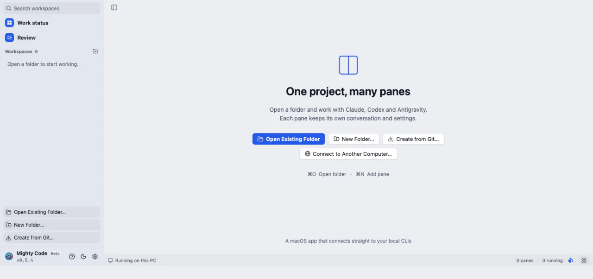
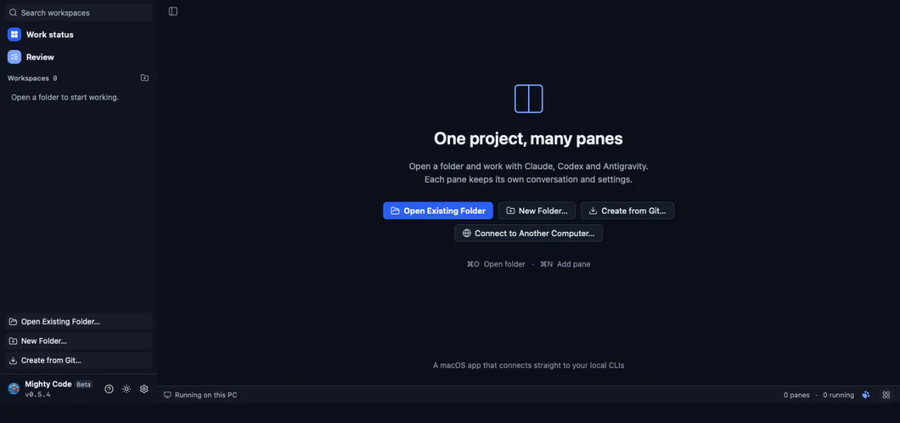
#Required tools
If no agent CLI (Claude Code, Codex, Antigravity, pi, opencode or Hermes) can run, or Git is not ready, the Required tools screen opens when the app starts. It groups the agent CLIs, the prerequisites (Git, Homebrew, Node, Bun), the style tools (uv, Ouroboros, oh-my-claudecode, gstack), Tailscale, and gh and glab.
- Check what you want to install. The first time, a missing Git starts checked, and so does Claude Code when there is no agent CLI at all; and anything a picked item needs (such as Homebrew for gh) comes along.
- Click Install selected. Every command that will run is shown, in order. Nothing runs until you click Run.
- On a Mac, one terminal pane opens in the app, in a local workspace (Settings and this screen close), and the commands run in it one after another, from your home folder. With no workspace open (the first run), the same commands run in a new window of the macOS Terminal app instead; macOS may ask once to allow it. Either way, the rows here are checked again when it ends. Answer any password or confirmation prompt in that terminal pane yourself; the app never uses sudo and never sees your password. If a step fails, the next one still runs.
- When it ends, the app checks again. If the app is in front, this screen opens again; otherwise the status bar shows a Tool install finished button. What counts is what the check finds, not how a command exited. When a CLI has just appeared, a Sign in button shows.
Git (Xcode Command Line Tools) opens a system install window, where you finish it. The script waits up to 30 minutes; Control-C ends only the wait and moves on. If git does not run because the Xcode license has not been accepted, Git shows Needs attention. Tailscale opens its official download page. A Claude Code that is too old shows Update needed with an Update button.
Later closes the screen; check Don't show again before closing and it no longer opens at launch. While a required tool is missing, the welcome screen has a Required tools button, and a pane blocked by a missing CLI has an Install button. The same items are in Settings → Components, one row each with its own Install button (Components).
Windows Windows has the same screen. The commands run in order, from your home folder, in one PowerShell window the app opens (a Windows Terminal tab when it is installed, otherwise a console window), which stays open until you press Enter at the end. Claude Code, Codex, Antigravity, Hermes and uv install with their own official PowerShell installers, pi and opencode with npm, Git and glab with winget for your user only, and Node.js and gh with winget for all users. An install for all users may show Windows' own administrator prompt; the setup screen itself never asks for administrator rights. When the install ends, the app reads PATH again from the registry and checks. Homebrew, Bun and gstack install on a Mac only.
#Open a workspace
A workspace is one project folder. Panes, the tab layout and conversation history are saved per workspace.
There are three ways to add one. Pick any of them from the Add Workspace button at the top of the sidebar's Workspaces tab (it opens a menu with the three), the File menu, the add-pane menu, or the three buttons shown when the sidebar is empty and on the first-run welcome screen.
- Open Existing Folder… (⌘O): choose a folder that already exists.
- New Folder…: set the Folder Name and Location to make a new folder. Turn on Start as a Git repository (git init) to start with an empty Git repository. If git init fails, the folder is still added as a workspace and a notice tells you so.
- Create from Git…: enter a Git repository address. Once you stop typing (or press Test Connection), the app checks that this computer's own credentials reach it: the Mac Keychain or Windows Credential Manager, a git credential helper, or ssh-agent. The app never asks you for a password. When you see ✓, press Create to download it (Create is enabled only then). The Folder Name is filled in from the address and you can edit it. Progress shows while it downloads, and Cancel stops it and removes the half-made folder. If it fails, the window stays open with the reason. If Git is missing, the Open Required Tools button opens the setup screen.
The Location remembers the last place you used. The first time it is the folder next to the current workspace (its parent folder), or the home folder if there is none. The new or downloaded folder is added as a workspace at once and a Claude pane opens. The two new items have no shortcuts.
Right-click a workspace in the sidebar for Rename…, Show in Finder, Open Files Pane, Open Work Map, Search conversations and Remove from List, and in a git repository also Agent pane worktrees, Worktrees…, Files copied into worktrees… and Worktree setup command… (A worktree per pane). Removing it from the list leaves the project files on disk untouched. Open more panes with New Claude Pane (⌘N).
#Change the language
- Open Settings… → General.
- Pick a language under Language. System follows your Mac's language.
- The menu bar changes the next time the app opens. If other screens don't change right away, they will after you reopen the app too.
#Opening this help
You can open this help straight from the app. It opens in the language you chose in the app.
- Mac: Mighty Code Help (⌘?) in the menu bar, the help button at the bottom of the sidebar, or the Open Help button in Settings… → About
- Windows: the help button at the bottom of the sidebar, F1, or the Open Help button in Settings… → About
- Phone: the Help button on the Hosts tab
02The window
The window has a sidebar on the left and a work area on the right. In the work area you can stack panes as tabs or split them side by side or top and bottom.
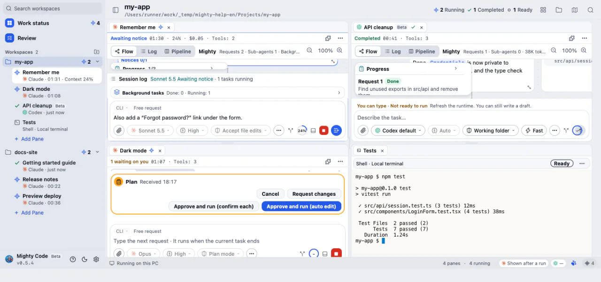
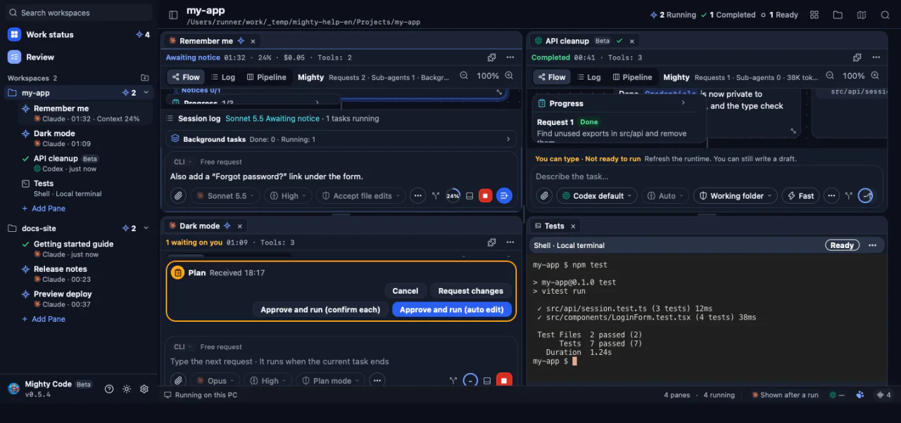
#Sidebar
From the top, the sidebar has:
- Search workspaces: press ⌘K to jump to the search field.
- Work status: the state of every pane in every workspace, in one place.
- Review: the panes and requests with changes to review, gathered together (Review queue).
- The Workspaces list: click a workspace to switch to it. Click the arrow beside it to show or hide its panes.
- At the bottom: the help button, the theme button (dark or light) and the settings button.
When a workspace is expanded, its last row is Add Pane. Right-click a pane row for Rename… and Close Pane.
#Resize the sidebar
Drag the border between the sidebar and the work area to change the sidebar's width (Resize sidebar).
- The border turns the accent colour when you point at it. Drag it left or right to set the width. The width stays within set limits and is kept after you reopen the app.
- Double-click the border to go back to the default width.
- Select the border with Tab and press ← / → to narrow or widen it by 10 px.
- Drag the border all the way to the left to collapse the sidebar. When you bring it back, it has the width it had before the drag.
#Collapse the sidebar
Collapse the sidebar to give the work area more room.
- Click the sidebar button at the top-left of the work area's header or press ⌃⌘S. The Work status screen and the first screen have the same button in the same place. The View menu in the menu bar also has Collapse sidebar.
- Use the same button or ⌃⌘S to bring it back (Expand sidebar).
The sidebar stays collapsed after you reopen the app. Pressing ⌘K while it is collapsed opens it and jumps to search.
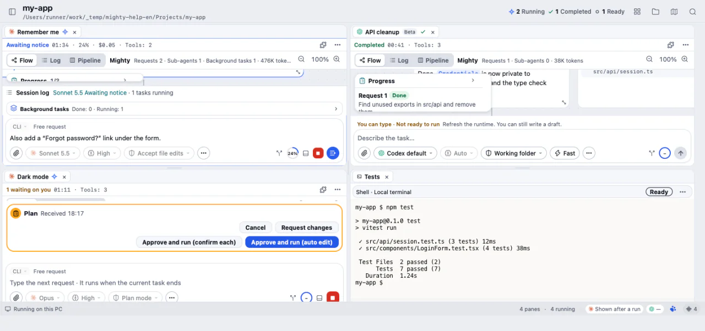
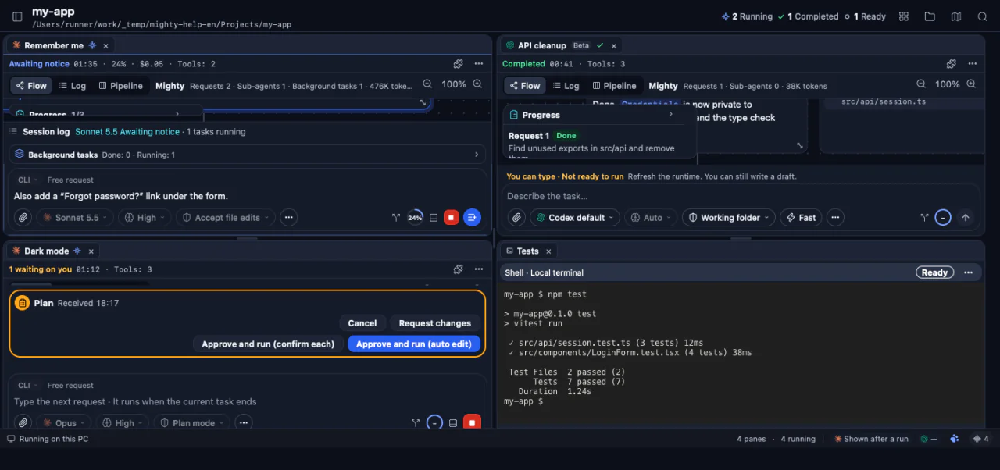
#Work status
Click Work status under the search field in the sidebar to see the panes of all workspaces, sorted by state.
- The tiles at the top count Running, Needs you and Done.
- The Account usage limits card shows your account usage. The limits are shared with other apps and sessions on the same account.
- Each workspace has a Files button and an Add Pane menu.
- Click a card to go to that pane. Choosing a workspace or pane leaves the dashboard.
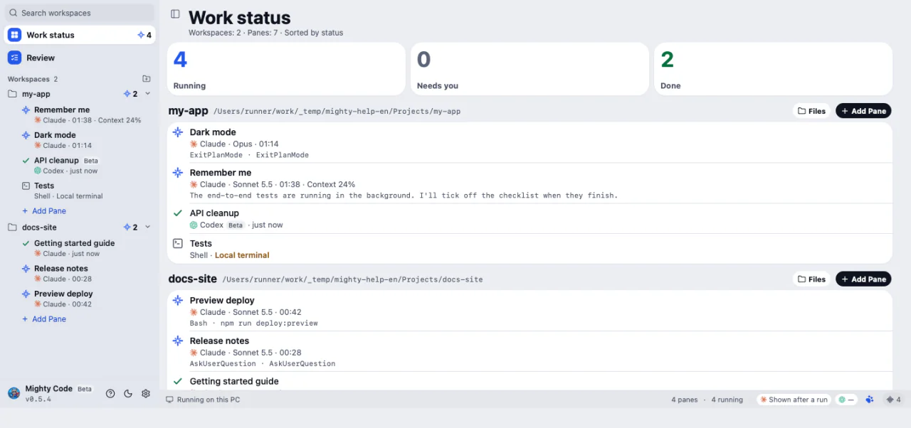
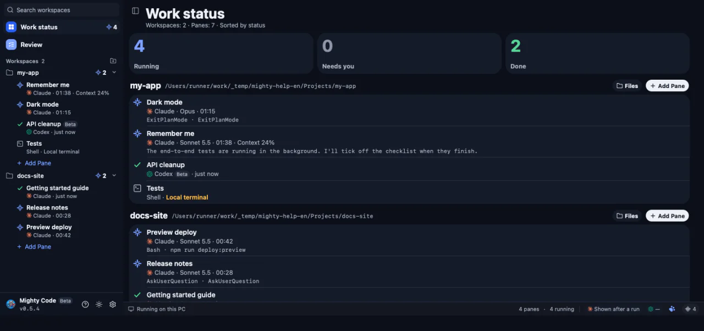
#Review queue
Everything ready to review, in one place. Click Review under Work status in the sidebar, or press ⇧⌘R (Windows: CtrlShiftR), to open the Review Queue panel. The number beside the entry is how many items wait.
- What it lists: worktree panes and child panes that finished with changes, and each pane's newest finished request whose changed files were kept (reviewing a request's changes). A pane that is still working shows once it finishes. A request whose files were all reviewed this way leaves the list.
- Each row shows the pane's title, its agent, kind and workspace, the branch and its base, the files changed with lines added and removed, and its state (Ready, Conflict, Merged). Conflicts come first, merged items last.
- Buttons: View Changes, Merge (Commit and Merge for a worktree pane with files not committed), Open in Editor, Open PR (worktree panes), Discard, Go to Pane and Mark Reviewed. Merge, discard and PR are the same actions as the pane's bar or the child's card, with the same confirmations. A request's View Changes opens the request's changes review.
- Mark Reviewed hides an item until its work changes again.
- The list reads git again when a run ends, when the panel opens and when you click Refresh, never on every redraw.
- Worktree and child pane rows carry a pre-merge checks summary (Checks ✓ or the number of warnings). Click it to open the pane's Checks tab (Checks). The summary comes from the last checks reading and what the app already knows (uncommitted files, remaining to-dos, the pane's PR status); the list never calls gh on its own.
#Commit & PR
Do a workspace's git work in one panel. Open it from Open commit & PR in the sidebar's workspace menu, the branch in the workspace header, or /git in the composer. Opened from a worktree pane, it works in that pane's worktree.
- Changes tab: changed files and their diffs, staging by file or hunk, switching branches, a drafted commit message, commit, push, creating a PR and asking to fix failed CI. No PR is made from the default branch.
- Checks tab: everything to look at before a merge, on one screen (Checks).
#Checks
For a worktree pane (or the current branch for other panes) it shows five things.
- Local changes: how many changes are not committed, and how many commits it is ahead (↑) of and behind (↓) its base branch.
- Pull request: the PR (MR on GitLab) number, state, whether it is a draft, conflicts, and the review result (approved, changes requested).
- CI checks: each check and its result. With a failed check, Ask to fix hands it to the agent with the failed log.
- Review threads: each unresolved review thread's file and line, author, first comment, reply count and link.
- Remaining to-dos: the items not done in the checklist of the pane's last request.
- It reads again when the tab opens and every 30 seconds while it stays open, never while it is closed.
- Each part is read on its own: without gh or glab, signed out, or with no PR, only that part shows Can't check.
- Pick threads and click Put in Composer: a list of
file:line (author): commentunder "Please address the review comments on PR #42." goes into the pane's composer. Nothing is sent yet. Lines that look like secrets are hidden, account details leave links, and at most 2,000 characters go in. - Before a merge: if any check failed or is still running, a thread is unresolved, to-dos remain, changes are not committed (except for commit and merge), the PR is a draft, has conflicts or has changes requested, the merge buttons on the worktree bar, the child cards and the review queue show the reasons and ask once more. Merge Anyway merges as usual; nothing is blocked.
#Add a pane
A pane is an AI agent (Claude, Codex, Antigravity, pi, opencode or Hermes), a terminal or a files pane.
- Click Add Pane in the sidebar.
- Pick what to add: an agent pane (Claude, Codex, Antigravity, pi, opencode or Hermes), New Terminal or Open Files Pane (⇧⌘E). The bottom group of the menu has the three ways to add a workspace: Open Existing Folder…, New Folder… and Create from Git… (Open a workspace).
- A new AI pane takes the model, thinking effort, permission and view of the most recently used pane of the same agent. The conversation starts fresh.
Shortcuts: New Claude Pane is ⌘N, Add Terminal Pane is ⌘T and Open Files Pane is ⇧⌘E. Up to 128 panes can be open across all workspaces (remote panes that show another computer's panes as they are do not count).
Every agent pane but Claude's (Codex, Antigravity, pi, opencode, Hermes) carries a Beta label.
#Continue an earlier session
When you add an agent pane and this folder has earlier sessions, you are asked what to do. Antigravity's are its conversations in this folder; the ones its sub-agents ran are not listed.
- Click Start New for a new conversation, or Continue… for an earlier one.
- Pick a session in Continue an Earlier Session. Use Search titles to find it.
- The new pane continues that session.
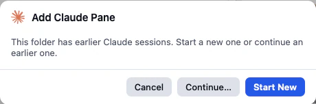
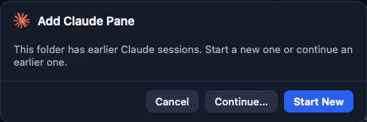
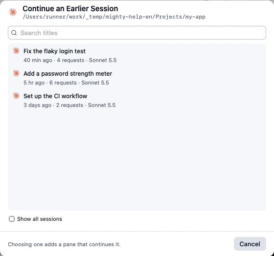
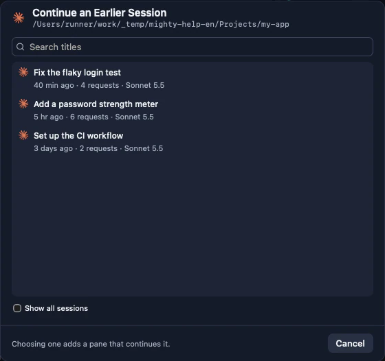
#Search past conversations
Search conversations (⇧⌘F) finds words in the requests and answers of this folder's past sessions. It also opens from the magnifier button in the workspace header, the menu you get by right-clicking a workspace in the sidebar, and the Workspace menu in the menu bar.
- Sessions where one message holds every word are listed, newest first, up to 50, with the words found marked. Tool output is not searched.
- Claude, Codex, Antigravity and pi sessions are searched; opencode and Hermes sessions are not. Sessions open in a pane and sessions older than 60 days are left out.
- Choose one with ↑ ↓ and press Enter, or click Continue: a new pane continues that session.
- Save as Markdown… saves the conversation's requests and answers as a Markdown file.
- It is not available in a remote workspace, whose session records are on that computer.
#Tabs and splits
- Drag a tab onto the middle of another group to merge it as a tab (Merge as a tab).
- Drop it on the left, right, top or bottom edge of a group to split that way.
- Drag a divider to resize; double-click it to split evenly.
- Press Esc while dragging to cancel.
- Double-click a tab to rename it. Right-click it for Rename…, Focus and Close Tab.
The layout is saved per workspace. Switching workspaces keeps each layout as it was.
#The pane menu
The … button in a pane's header has:
- Rename…
- Focus: show only this pane, large. Click again for Back to the previous layout.
- Copy run log: copies an agent pane's log. A terminal pane has Previous Command History… in its place (Terminal pane).
- Start a new conversation: the next request no longer continues the earlier conversation (agent panes).
- Close Pane
Right-clicking a pane's header offers Rename…, Focus View / Go Back and Close, and a terminal pane also has Previous command history.
#Keyboard shortcuts
| Shortcut | Action |
|---|---|
| ⌘O | Open Existing Folder… |
| ⌘N | New Claude Pane |
| ⌘T | Add Terminal Pane |
| ⇧⌘E | Open Files Pane |
| ⇧⌘F | Search conversations |
| ⇧⌘R | Review Queue |
| ⇧⌘U | Go to Pane Needing Attention |
| ⌘K | Search Workspaces |
| ⌃⌘S | Collapse sidebar / Expand sidebar |
| ⌘, | Settings… |
| Enter | Send the request. In a running pane, queue it or run it right away in a new worktree with the agent picked, as While running, send to says (Keep asking while it runs) |
| ⇧Enter | New line |
| ⌘Enter | In a running pane, run it now in a new worktree (a pane with Mighty Orchestration on, in a git repository); in any other running pane, add it to the queue |
| Esc | Close a sheet or the slash list |
| ⌘= / ⌘- / ⌘0 | Make Text Bigger / Make Text Smaller / Default Text Size |
| ⌘? | Mighty Code Help |
03Agent panes
An agent pane is a conversation with Claude, Codex, Antigravity, pi, opencode or Hermes. You write requests in the composer at the bottom and follow the progress and results above it.
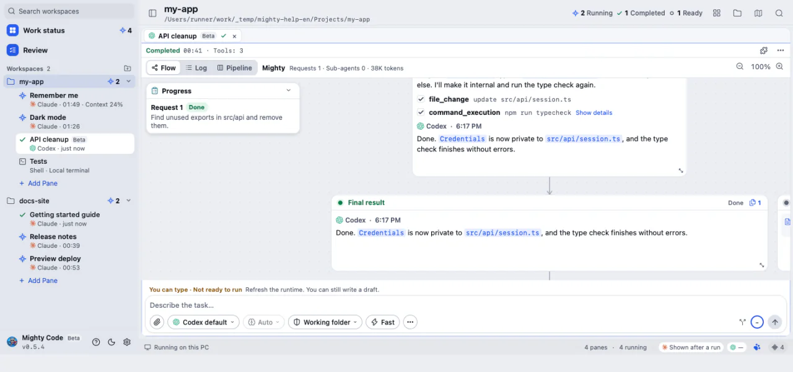
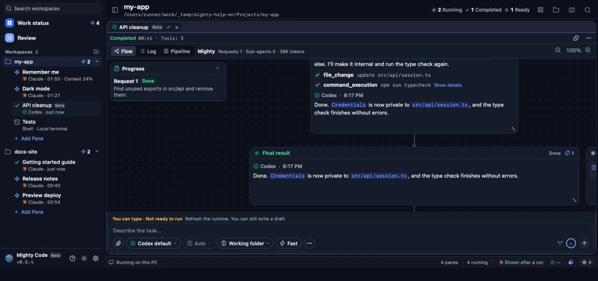
#Send a request
- Type what you want done in the composer.
- Press Enter or click the send button. Press ⇧Enter for a new line.
- While it runs, a stop button takes the send button's place. Click it to stop.
An Enter pressed while an input method is still composing (Korean, for example) finishes the composition instead of sending.
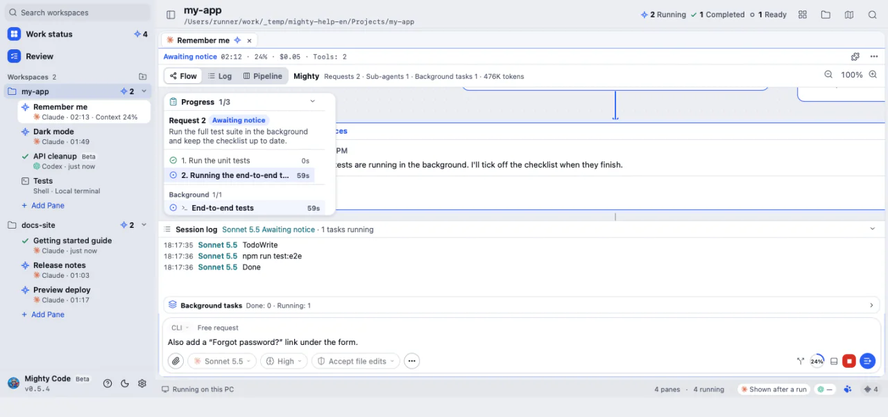
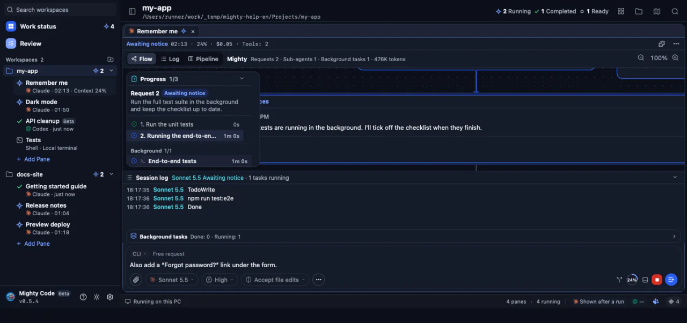
#Keep asking while it runs
You can write the next request while a task is running. Once the composer holds text, round buttons like send appear beside stop.
- Enter or the Add to queue button: queue it as the next request. Queued requests run in order once the current task ends. A pane holds up to 16. If you picked an agent under While running, send to below, it runs right away in a new worktree with that agent instead.
- While running, send to: a choice shown only while the pane runs; once you type, it joins the send button as one control, [target ▾ | ↑] (with nothing typed it is a small capsule of its own). The separate Run in new worktree button stays to its left only while the target is Queue; with a worktree chosen the send button does the same, so it is hidden. The target shows a list icon for Queue, the agent's mark when an agent is chosen; hovering it names the choice. It offers Queue (the default) and an entry such as 'Worktree · Codex' for each agent this pane may start as a child (Claude, Codex, Antigravity). An entry whose CLI is not installed or signed in, that has no fitting mode, or whose pane already has 3 child panes you opened yourself is greyed out with the reason. It decides what Enter and the round button do: queue the request, or run it right away in a new child pane of that agent with its own worktree, beside this one. The composer's hint and the button's name follow it. Each pane keeps its choice until the app quits. A request with attachments but no text goes to the queue.
- ⌘Enter (CtrlEnter on Windows) or the Run in new worktree button: always uses this pane's own agent, whatever While running, send to says. In a Claude pane, or a Codex or Antigravity pane in a mode where its child can change files, with Mighty Orchestration on, in a git repository on a branch with a commit, run it right away in a new child pane with its own git worktree, beside this one, while the running task goes on; when the child is done, merge its result from its card in the sidebar (Run in a new worktree).
- In a child pane, outside such a repository, or with Mighty Orchestration off, ⌘Enter queues it too, as Enter does. If this pane's agent cannot make a child in its current mode but another agent can, ⌘Enter queues the request, but While running, send to and the agent picker of Run now below can still run it in a child pane of that agent. A text whose child could not be made or started goes to the queue as well (Run in a new worktree). Nothing you send joins the running task any more; in older records the Mighty view still shows such texts as orange Mid-turn input blocks. A delegation notice handed straight to a running Claude parent shows as a Delegation notice block of the same colour (Notices and held items).
- Each request in the queue has a Run now button beside its ✕. Where a new worktree can be made (the conditions of ⌘Enter above, or a pane where another agent can make a child), it runs that request now in a new child pane, and the running task goes on. Pick another agent with the agent picker before the button (this pane's agent by default) to run it in a child of that agent. The button's tooltip says which will happen. A request with attachments but no text never goes to a worktree.
- Where no worktree can be made, the request is handled in this pane. A pane that is idle, such as one stopped by an error, starts it now. A Claude pane whose answer is done and which only waits on background work takes it straight into the running Claude, where it shows as a Mid-turn input block in the Mighty view (a request with attachments waits until the work ends). Otherwise the button is greyed out and its tooltip says why: the current task must end first, items held for the pane go first, or a CLI update is under way. The request then waits its turn. The follow-up of an Antigravity card only ever runs in its own pane.
- The pencil button (Edit) edits a queued request's words in place: Enter saves, Esc cancels (ShiftEnter adds a line). Its attachments and mode stay; words left empty are not saved. The follow-up of an allowed card cannot be edited.
- The ↑ and ↓ buttons (Move up, Move down), or ↑ and ↓ on a selected row, change the order. The top request runs next, and the queue runs in the new order. Held rows always stay on top and are neither edited nor moved.
Stopping the task cancels the queued requests too, except in a pane whose turn only waits on background work: there Stop keeps the queue and starts its first request now. The queue is emptied when the app reopens.
#Composer tools
The row under the composer has, from the left: attach, model, thinking effort, permission and more run settings (…). In a narrow pane some of them fold into one menu. They can't be changed while a task runs, and a change applies from the next request.
Compare run…: on the send button's right-click menu of an idle pane, and on the While running, send to menu of a running one. It hands the request in the composer to several agents at once from the same base commit and sets their results side by side (Compare run).
#Model
Click the model chip to choose the Provider (Claude, Codex, Antigravity, pi, opencode or Hermes) and the Model. If the list looks wrong, click Refresh model list. Switching agents starts a new conversation.
#Thinking effort
Thinking effort sets how deeply the model thinks: Auto, Low, Medium, High, XHigh or Max. Only the levels the model supports are shown. Codex models that list it also have Ultra · auto-delegation: the deepest thinking, and Codex may hand parts of the work to sub-agents of its own, which can use more of your plan. Antigravity has none; pi has Off, Minimal, Low, Medium, High and XHigh; opencode has Low, Medium, High and Max, the variants its model offers; Hermes has Low, Medium, High, XHigh and Max.
#Permissions
The permission mode sets what the agent may do without asking.
| Agent | Modes |
|---|---|
| Claude | Plan mode · Always ask · Accept file edits · Auto mode · Bypass |
| Codex | Read only · Ask for approval · Working folder · Full access |
| Antigravity | Default permissions · Plan · Accept edits · Full access |
| pi | Read only · Full access |
| opencode | Default permissions · Plan · Accept edits · Full access |
| Hermes | Default permissions · Accept edits · Full access |
- Claude's Always ask, Codex's Ask for approval every opencode mode but Full access, and Hermes's file edits and dangerous commands ask for approval in the pane when extra permission is needed. See Approvals and questions.
- Auto mode appears only when the installed Claude CLI supports it. Codex's Ask for approval is hidden on older Codex versions that do not support it.
- Bypass and Full access reach files and commands outside the project too. Use them only when you must.
#Antigravity
Google's agent runs through Antigravity CLI (agy), which can also run Claude and GPT-OSS models.
- Install: on the Mac,
curl -fsSL https://antigravity.google/cli/install.sh | bashputsagyin~/.local/bin. On Windows,irm https://antigravity.google/cli/install.ps1 | iexin PowerShell putsagy.exein%LOCALAPPDATA%\agy\bin. The app updates it withagy update. - Sign in: run
agyonce in a terminal pane and sign in with your Google account in the browser. Log in on the Components tab does this for you. Antigravity has no sign-out command; to switch accounts, use/logoutinsideagy. - Permissions: Antigravity cannot ask you in the app. Default permissions follows the Agent Mode saved in agy (review, unless you changed it in agy's
/config): it reads the workspace's files but declines the file edits and shell commands it would ask about, finishes the turn, and then asks about what it declined in a permission card. Allow once or Always allow continues in the same conversation (Antigravity's permission card). Plan writes a plan in agy's own folder and stops without editing the project; send the next request in another mode to carry it out. To allow something ahead of time, add a rule underpermissions.allowin~/.gemini/antigravity-cli/settings.jsonyourself (for examplecommand(git status); a rule allows every command that starts with its text, so keep it narrow), or choose Accept edits (file edits) or Full access (everything). - Each Antigravity model carries its effort in its name, so there is no separate Thinking effort.
- The Mighty view works as for Claude and Codex: each sub-agent Antigravity starts is a block of its own under the request, filled from the sub-agent's own record in
~/.gemini/antigravity-cli(%USERPROFILE%\.gemini\antigravity-clion Windows; its instructions, messages, tool calls and the answer it sent back; files it read are named, not copied). Earlier requests of the conversation load from the same records, and Continue… lists this folder's Antigravity conversations. - A pane that ran Gemini CLI before keeps its history, but its next request starts a new conversation, and a Gemini CLI model it had is set back to the default.
#pi
pi (pi) is an open-source coding agent CLI that works with many model providers.
- Install: from the Required tools screen (it installs Homebrew and Node.js first when they are missing), or
npm install -g @mariozechner/pi-coding-agent. The app updates it withpi update self. - Sign in: Log in on the Components tab opens a terminal pane running
pi. Type/loginthere and pick a subscription (Claude Pro/Max, ChatGPT, GitHub Copilot) or an API key. An API key in the environment (such asANTHROPIC_API_KEY) or in~/.pi/agent/auth.jsoncounts as signed in too. To sign out, type/logoutinside pi. - Model: once you are signed in, the list comes from
pi --list-modelsasprovider/model; the first entry follows pi's own settings. A model without thinking shows no Thinking effort; the levels are Off, Minimal, Low, Medium, High and XHigh. - Permissions: pi has no approval window, so there are two modes. Read only turns on only the read tools (read, grep, find, ls). Full access uses every tool without asking, outside the project too.
- Each request runs
pi --mode rpcin the pane's folder and continues the pane's own session, saved in~/.pi/agent/sessions. Continue… lists the pi sessions of the folder as well. - Questions: pi has no question tool, so the app adds an
ask_usertool as an extension of each run (your~/.pisettings are not changed). When pi asks through it, the question card appears, and your answer continues the same request. Pick, confirm and input dialogs opened by other extensions appear as the same card. - Not yet: pi panes take no part in Mighty Orchestration, cannot be opened in a remote workspace, and show no approval cards.
#opencode
opencode (opencode) is an open-source coding agent CLI that works with many model providers, and also runs the free models of its own service, opencode Zen, without a sign-in.
- Install: from the Required tools screen (it installs Homebrew and Node.js first when they are missing), or
npm install -g @opencode/cli. The app uses OpenCode 2; an OpenCode 1 found on the Mac shows as out of date, and installing from the setup screen removes the npmopencode-aifirst. The app updates it withopencode upgrade. - Sign in: Log in on the Components tab opens a terminal pane running
opencode auth login. Pick a provider there, then sign in with its subscription or enter an API key. A sign-in opencode keeps (opencode auth list) or an API key in the environment (such asANTHROPIC_API_KEY) counts as signed in; without one only opencode Zen's free models are offered. To sign out, runopencode auth logoutin a terminal. - Model: the list comes from
opencode modelsasprovider/model; the first entry follows opencode's own settings. - Permissions: the mode becomes opencode's own rules for the run, and what they leave to ask comes to the pane as an approval card, as for Claude. Default permissions asks before edits, commands, the web and anything outside the project; Accept edits edits without asking; Plan runs opencode's plan agent, which does not edit; Full access never asks.
- Each request starts
opencode acpin the pane's folder (OpenCode 2, the Agent Client Protocol) and continues the pane's own session, kept in opencode'sopencode.db. Continue… lists the opencode sessions of the folder as well. Usage shows the session's cost, the context in use and the request's tokens. - Questions: when opencode asks through its
questiontool, the question card appears, and your answer continues the same request. If you click Cancel on the card, opencode ends that request. - Not yet: opencode panes take no part in Mighty Orchestration and cannot be opened in a remote workspace.
#Hermes
Hermes (hermes) is Nous Research's open-source agent CLI (Hermes Agent). It works with many model providers, such as Nous Portal, OpenRouter, Anthropic and OpenAI.
- Install: from the Required tools screen (it installs Git first when it is missing). The official install script puts Hermes in
~/.hermeswith its own Python environment and downloads its browser tools, so it takes a few minutes. To install it yourself, runcurl -fsSL https://hermes-agent.nousresearch.com/install.sh | bashon a Mac, orirm https://hermes-agent.nousresearch.com/install.ps1 | iexin PowerShell on Windows. The app updates it withhermes update. - Sign in: Log in on the Components tab opens a terminal pane running
hermes model. Pick a model provider there, sign in or enter an API key, then pick a default model. The app reads only the name of the provider whose credentials Hermes finds. To remove credentials, usehermes authin a terminal. - Model: the first entry follows Hermes's own settings (the default model set with
hermes model). Hermes lists models only once a session is open, so theprovider:modellist appears after the first request. - Permissions: Default permissions asks with an approval card in the pane before every file edit; Accept edits does not ask about edits inside the workspace folder; Full access is Hermes's
--yolo, which does not ask about dangerous commands either. Dangerous commands (such asrm -rf) are asked about as Hermes's approvals setting (approvals.mode) says; other commands and reads are not asked about. There is no plan-only mode. Full access is fixed when a session starts, so a session already started gets it from a new conversation. - Each request starts
hermes acpin the pane's folder (the Agent Client Protocol) and continues the pane's own session. The work itself runs in Hermes's gateway, a background process that starts on demand and ends when idle. Sessions are kept in~/.hermes/state.db, and Continue… lists the Hermes sessions of the folder as well. Usage shows the session's running token counts and the context in use; Hermes does not report cost. - Questions: when Hermes asks through its clarify tool, the question card appears, and your answer continues the same request. Hermes leaves this tool off for editor connections (ACP) by default, so before the first Hermes request the app turns it on by setting one Hermes config entry,
platform_toolsets.acp, withhermes config set, and says so in the log. A list you saved there yourself is left alone. It applies from a new conversation; to undo it, runhermes config unset platform_toolsets.acpin a terminal. Hermes waits for an answer only for a while (90 seconds by default); after that the card closes and Hermes goes on without one. - Not yet: Hermes panes take no part in Mighty Orchestration and cannot be opened in a remote workspace.
#More run settings
Click the … button to open Run settings.
- Claude: Maximum turns and Cost limit (USD). Leave them empty for no limit.
- Codex: Web search and Shell network. The Fast chip in the composer answers faster on supported models and accounts but uses more of your usage.
Change the values, then click Apply.
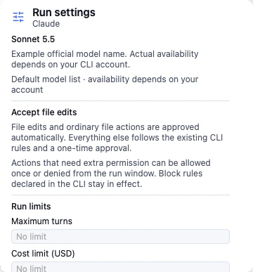
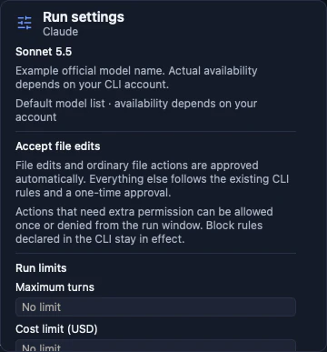
#Attach files and pictures
Click the paperclip, drag files onto the composer, or paste a picture with ⌘V.
- Up to 8 files, 5 MiB each, 8 MiB in total. Pictures (PNG, JPEG, GIF, WebP), PDFs and text files are sent as what they are; any other file is sent as a binary file.
- You can preview them and remove them one by one before sending. You can send attachments alone.
- Terminal panes can't take attachments.
#Send to
In the phone app, a Claude pane with oh-my-claudecode installed shows a Send to switch in the composer. It lists the other CLIs that are installed (Codex, Antigravity and so on); once you pick one, your requests go to it through oh-my-claudecode's ask. The answer comes back inside Claude's reply. Pick Claude (default) to send to Claude as before. The Mac and Windows apps' composer has no such switch, and requests sent there always go to the pane's own agent. To hand one to another agent, use While running, send to or a queued row's agent picker.
- Attachments can't be sent while you are asking another CLI.
- oh-my-claudecode starts the chosen CLI with its approvals and sandbox turned off, so it can change files and run commands in this folder without asking. Mighty Code's permission mode and approval cards cover only Claude's step that starts it. The composer shows this warning in one line while a CLI is chosen.
- On Windows, older versions of oh-my-claudecode refuse to ask Antigravity. If that answer comes back, update oh-my-claudecode or use Gemini CLI.
- Text that starts with
/still goes to Claude as it is.
#Slash commands
Type / in the composer to see the command list. Move with ↑↓, insert with Enter or Tab, and close with Esc.
| Command (Claude) | What it does |
|---|---|
/model | Change model · choose a name next |
/permissions | Change permissions · choose a mode next |
/clear | Start a new conversation · the next input will not resume the previous one |
/cost, /usage | Show tokens and cost for this pane |
/plugin | Open the plugin marketplace |
/config | Open Mighty Code settings |
/rename | Rename this pane |
/help | Show app commands available in this pane |
/advisor | Ask another agent for a read-only opinion (/advisor [agent] [question]) |
/committee | Ask two agents the same question, two opinions side by side (/committee [agent agent] [question]) |
Codex and Antigravity use slightly different names (Codex: /new, /approvals, /status; Antigravity: /usage, /config, for example). Any other /name is passed to the CLI as a skill, user command or plugin command. Antigravity expands its skills this way, and the list offers agy's built-in skills, yours in ~/.gemini/antigravity-cli/skills and the folder's .agents/skills; pi uses /new, /session and /settings, and opencode and Hermes /new, /usage and /settings. /help in any agent pane shows the app's own list of the commands that pane takes. Antigravity's own read-only commands such as /skills answer only when you run them as agy -p "/skills" in a terminal, so in the app they end with agy's error.
#Other agents' opinions
/advisor sends this pane's last plan (if any), its last result and a summary of the files its last request changed to another agent and brings back its opinion. Add an agent and a question, as in /advisor codex is this plan sound?; without an agent it asks the first one other than this pane's that is installed and signed in (Claude, Codex, Antigravity, pi, in that order). /committee asks two agents the same question and shows their two opinions side by side, without summing up where they agree or differ.
- The agent giving the opinion runs once, read-only (Claude in plan mode with read tools only, Codex in its read-only sandbox, Antigravity in plan mode in its sandbox, pi with read tools only). It changes no files, runs no commands and keeps no session. opencode and Hermes cannot be picked: their one-shot runs approve on their own.
- What is sent is cut to size and lines that look like secrets are removed. The answer lands as an opinion card under the pane (agent, model, cost when known); Put in the composer puts it into the composer so this pane's agent can act on it. Its cost goes into the usage ledger under this pane's workspace.
#Bots
Bots are still in Beta: the bot tab, the new-bot wizard and the report box carry a beta mark, and how they work and look may change. Every agent pane on this computer is a bot. A new pane gets a friendly name common in the app's language (@Biscuit, @Maple and the like), and other agents, schedules and the mighty command can send it requests by that name. Change the name and the instructions in Bot Settings…, from the pane header's ··· menu or by right-clicking the pane in the sidebar. The sidebar shows @name beside the pane's title; a click on it switches to the Bots tab and shows the bot there. A bot is still an ordinary pane: approval and question cards, the queue, the phone and remote mirrors work as usual.
- Sidebar tabs: the top of the sidebar has two tabs, Workspaces and Bots. Switch with ⌘1 and ⌘2 (Ctrl1 and Ctrl2 on Windows); the tab last shown is kept. When a bot waits for you, the Bots tab carries a yellow count, and while a bot works the tab's bot mark turns into the same spinning mark a running pane shows. The search looks in both tabs and says at the top of the list when the other tab has matches.
- The Bots tab: it lists Bots at work by default: independent bots, bots with instructions, bots with schedules or triggers, and any bot waiting for you. A workspace bot with instructions, schedules or triggers is left out of its workspace's list in the Workspaces tab and shown here only (one with delegated panes under it stays, above them). The other panes are one click away, with the button at the bottom or Show every pane in the ··· menu. Bots are grouped Needs you, Working, Idle, Asleep (the ··· menu groups them by Workspace bots and Other bots instead), each group folding on its own. A row shows the name, a workspace bot's workspace, and below them one line on what it is doing: why it waits, what it is on, its next run, or that it sleeps. A click opens its pane; a double click, or Show in its workspace on its right-click menu, opens the bot's workspace in the Workspaces tab (not for an independent bot).
- The new-bot wizard: Add bot at the top of the Bots tab opens a wizard. Its six steps are listed at the left, and Back and Next at the bottom walk through them (a step done is a click away at the left). ① What it does: pick a template by category or search; what it does and when show below. ② Where it works: a workspace or an independent bot, and a GitHub repository (a workspace bot left empty uses its workspace's) or a command to run when the template needs one. ③ Who works: the agent, the name (🎲 for another), the model (from the agent's model list) and the instructions. ④ When it works: turn the template's schedules and triggers on or off one by one, set a schedule At a time or Every and change its time (or interval and hours) and days, and open Request to send on any of them to send your own words instead of the template's request. In the Add row below, add a Schedule, a GitHub event (pull request, issue, release, merge, CI failure or review request; an empty repository is the workspace's), When another bot finishes (@name, or
*for any bot) or an App event (amighty event emitname), and drop one you added with Remove. What you add to a blank bot needs its own request. A new bot starts awake and keeps its schedule; put it to sleep with Put to sleep on its row. ⑤ How far it goes: the permission and the daily budget. ⑥ Review: see what will be made, a line each, choose Get a one-sentence greeting once it is made and press Create. Once made, the bot's pane opens. - Independent bots: a bot of no workspace that works in a folder of its own. In the wizard's Works in, pick Independent · the app's data folder (
bots/namein the app's data folder) or Independent · pick a folder…. Independent bots are not listed with the workspaces in the sidebar. - 20 templates: code review (PR reviewer, Security check, Test helper), CI & releases (CI fixer, Release notes, Release readiness, After-release check), repository care (Dependency check, Issue triage, Docs keeper, Branch & worktree cleanup, TODO collector), daily & reports (Morning briefing, Daily wrap-up, Weekly review, Task keeper), watching (Site watch, Performance watch) and other (Codebase guide, Blank bot). A GitHub template made as an independent bot needs a repository (
owner/name); Site watch and Performance watch need a command to run. Leave the name empty for a friendly one. - When it works: the bot's sheet lists its schedules and triggers with their next run. Save and add a schedule or trigger… saves the sheet and opens the schedules and triggers form filled to send to this bot. Renaming a bot renames it in its schedules and triggers too. The sidebar's bot row shows ⏰ and the next run.
- Permission and budget: the bot's sheet sets the permission its runs take and a daily budget (USD). Once the budget is spent, its schedules and triggers skip for the rest of the day and other agents' requests are refused. The overall daily budget still applies.
- Sleep: put a bot to sleep with the check box in its sheet or Put to sleep on its sidebar row. A sleeping bot is dimmed with 💤; its schedules and triggers skip, and other agents'
ask_botandmighty agent send @nameare refused. Requests typed in its own composer still go. Wake up wakes it. Schedules and triggers skipped while it sleeps stay in the run history and leave no report. A run you start yourself, such as Retry in the report box or the run history, reaches a sleeping bot too. - Reports: when a bot finishes work a schedule, a trigger or another bot gave it, it leaves a report. Its status is one of ✅ Nothing to report, 📝 Report, ⚠️ Needs you and ❌ Failed, with a one-line summary, up to three items (with links), what fired it, how long it took and what it cost. The bot writes it with the mighty-terminal tool
bot_report; when it does not, the app makes one from the first sentence and the links of its last answer (NO_REPLYor an empty answer is ✅), and a run that could not start or failed becomes a ❌ report with the reason. When a bot says the same thing again, its last card counts it instead of a new one.- Report box: open it at the window's right edge with the Reports button at the top of the Bots tab (it shows the unread count) or Show reports in a bot row's menu. Filter by status and bot; each day lists what needs you and what failed first and folds its ✅ into one line. Each card has Open pane (Answer when it needs you), Follow up, Run again and 👍/👎. Esc closes it.
- Bot rows: a resting or sleeping bot's row shows its last report (status, time, summary) under its name, with a dot while it is unread.
- Alerts: only ⚠️ and ❌ send a desktop and a phone notification (once, not again for the same result).
- Files: reports also go to
bots/<name>/reports/<date>.mdin the app's data folder, one file a day.
- Bots made by agents and commands: an agent in a Claude or Codex pane can propose a bot by giving a bot spec (JSON) to the mighty-terminal tools
create_botandupdate_bot;mighty bot new --spec filedoes the same. The app shows an approval sheet with who asked, the name, agent, permission, where it works, its budget and its schedules and triggers, and makes it only when you press Make.
{
"name": "pr-keeper",
"agent": "codex",
"permission": "acceptEdits",
"instructions": "Review open pull requests.",
"budgetPerDay": 3,
"schedules": [{ "cron": "0 9 * * 1-5", "prompt": "Sum up the PRs since yesterday" }],
"triggers": [{ "on": { "type": "github", "events": ["pr_opened"], "repo": "owner/repo" }, "prompt": "Review {{pr.url}}" }]
}mighty bot list # bots, their schedules and triggers, next run
mighty bot new --spec bot.json # shows the approval sheet (bot update: change a bot)
mighty bot pause @pr-keeper # sleep (resume: wake)
mighty bot run @pr-keeper --job daily # run a bot's schedule or trigger now- Name: 1 to 32 letters (any language, 한글 included) and digits, with
-,_or.between them (no spaces). Case does not matter:@Reviewerand@reviewerare one bot. Only one pane in a profile uses a name. - Instructions: what the bot is for and how it works (up to 16 KB). They go after the first request of every new conversation, to the agent only; the request block on screen shows just the request you sent. Changed instructions apply from the next new conversation.
- Calling it: use
@namein place of a pane id.mighty agent send @reviewer "look at PR 12",mighty agent wait @reviewer --until done,mighty pane read @reviewer- A schedule's heartbeat:
pane: "@reviewer". It can call a bot in another workspace; when no bot has that name, no new pane is made and the run is recorded as failed. - Other agents (Claude and Codex panes): the mighty-terminal tools
list_bots,ask_botandbot_answer.ask_botsends and returns at once;bot_answerreturns the state and the last answer (secrets redacted; withwait: trueit waits up to 20 seconds).
- Safety rules
- A request always runs with the bot pane's own settings and permissions. The caller cannot widen them.
- A bot cannot ask itself, and while working on a request another bot sent it cannot ask a bot (one level deep). A refused
ask_botreturns the reason inrefused. - Nothing is sent once the daily budget is spent.
#Context and usage
The ring beside the send button shows how much context the conversation has used. Click it for Context usage, input, output and cache tokens, cost, the model used and the session IDs. Only values the CLI reported are shown; nothing is estimated.
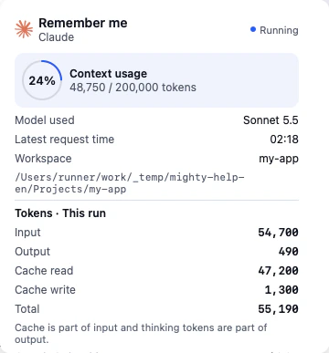
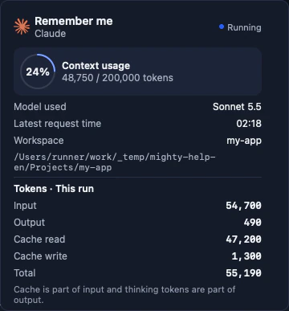
#The Mighty view
Every agent pane (Claude, Codex, Antigravity, pi, opencode, Hermes) shows the Mighty view: requests, sub-agents, background work and results as a flow of blocks. There is nothing to switch.
#The Mighty flow
A Claude pane's flow reads request → what happened in between → Final result. The request block holds only what you sent. Until the answer comes, an Run card stands where the result will be, with the main session's model and one line of what it is doing now (what Claude last said, or the command it ran after that). Clicking the card opens the Run block with every message and tool call; when the answer comes, the Final result card takes its place. A short question with nothing in between is just the request and the result. Other agents' panes keep the Run block right under the request block.
A block's header shows its state with the status dot in front and the title. The dot's colour is the state (blue while running, yellow while waiting on you, green when done, red on an error, grey when stopped). A Final result block's title takes that colour too, so a finished result stands out at a glance. Who is working (the main session, a sub-agent, a background command) shows in the colour of the type chip; hover the dot to see the role. After the title come the sub-agent's type (Explore, the name of an agent you made, and so on) and the background, fork and worktree marks, and the Run block shows the pane's effort. The model appears with the token figure; with no response yet, the model asked for is marked as requested. If an agent you made has a color in its definition file, that color is used. In a narrow block these marks hide first; hover the dot to see them all.
In a Claude pane's flow, everything but the result is folded into a small card. Sub-agents and background commands are cards whether they run or have ended, and a card has the same header as a block (icon, title, state, open button) over two lines: what it is doing now (once it ended, its answer's first line), then its type and model, elapsed time, tool calls and tokens. Only values the app actually saw appear; there is no percentage. Clicking a card opens the full block, and the Fold to a card button in its header folds it back. Clicking a finished background sub-agent's card opens its block in the Background work finished diagram. Commands run in the background (waiting on CI, an app build, a dev server) stand in the same row as grey cards with their description and command, the last line they printed, and their running time or, once done, their state and exit code.
When Claude makes a to-do list, each step it starts stands under the request as a card (step 1 → step 2 → …). The sub-agents and commands started during a step stand to its right, and their cards gain a line such as ↳ 2. Write notes naming the step. Clicking a step card opens what was recorded during it. In a request without steps, the sub-agents stand side by side in one row under the request, and the branch above them says how many got work, on which model, and how many still run. The app asks Claude to make its to-do list first for every request that uses a tool, so most requests that are more than a short answer have steps.
Under a Claude pane's flow, above the composer, is the Session log strip. Its header line is the status right now: the main session's model and state, how many of its sub-agents are running and how many background commands run, each in its role's colour. Opened, the strip lists the last five things that happened in the newest request: the time, who did it (the main session's model or a sub-agent's name) and what it was (a tool call, a sub-agent starting or ending, a question, a Context summary, a notice arriving). Click a line to move the flow to that block. The button at the right end folds the strip to its status line, and each pane remembers whether it is folded.
While they run, a sub-agent started in the background and a background command (task) are not drawn as blocks of the request; they sit in the Background group of the Progress panel below. A Claude pane's flow also shows them as the cards above. When a task ends and its notice goes to Claude, each answer of Claude's makes a new Background work finished diagram, with one block for each ended task: a kind line (sub-agent or background command, and how it ended), the command, the last lines of its output and a sub-agent's report. In Log the diagram is a new row, and in Pipeline a new card (board) at the end. The phone's Mighty view and pipeline work the same way.
At the top left of every agent pane's flow is the Progress panel. It shows the number, state and text of the request in view and, when the agent shares its plan, each step as done, in progress (its time running) or not begun. Steps come from Claude's to-do list, Codex's plan (update_plan), opencode's and Hermes's plans and Gemini's checklist (task.md). Ask agents for a progress checklist in Settings… › General (on by default) asks Gemini, Codex, opencode and Hermes to keep a plan while they work. A request that brings no plan, and pi, which has none, show what the agent does (reading, writing and editing files, commands, searches, sub-agents) as steps, one line each. When the request started background work (commands and background sub-agents), a Background group at the bottom shows how many are running out of how many, with a line for each giving its state and time: running ones first, up to 100 lines that scroll inside the panel, and any beyond that as a count. When a new request starts it shows that one; once you scroll yourself it follows the request in view. When the final result arrives, the flow glides to that Final result block, unless you are moving the flow yourself or it is already moving to another block. Clicking the request line moves to that request, a step line to that step's card (only a Claude pane's flow has step cards). The button in its header folds it to the header and the request line.
- Drag the empty background or scroll to move around. The zoom buttons go from 50% to 150%.
- Click a block to scroll inside it. Click the background or press Esc to deselect.
- Drag a block's bottom-right corner to resize it. Right-click for Restore default size. Sizes are saved per session.
- Scroll to the top and use Load earlier history to load earlier requests, 10 at a time. Loaded history is view-only.
- In Claude and Codex panes, the puzzle button in the header opens the installed plugins and the marketplace.
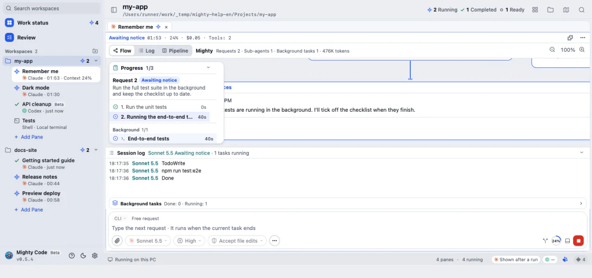
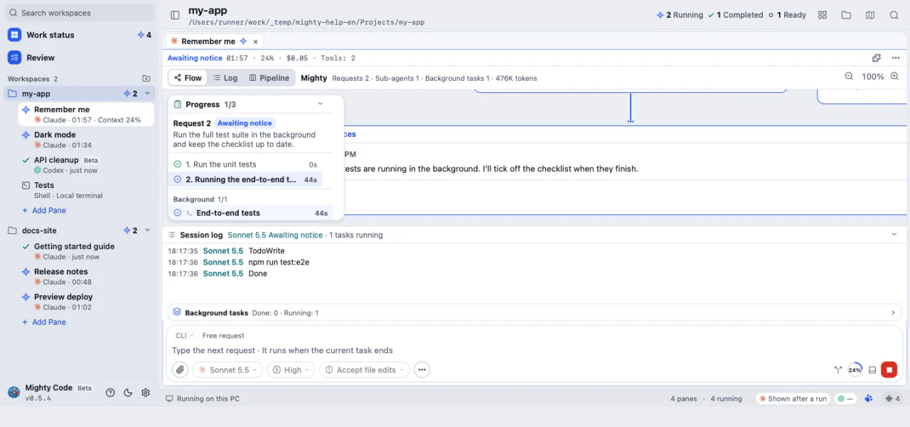
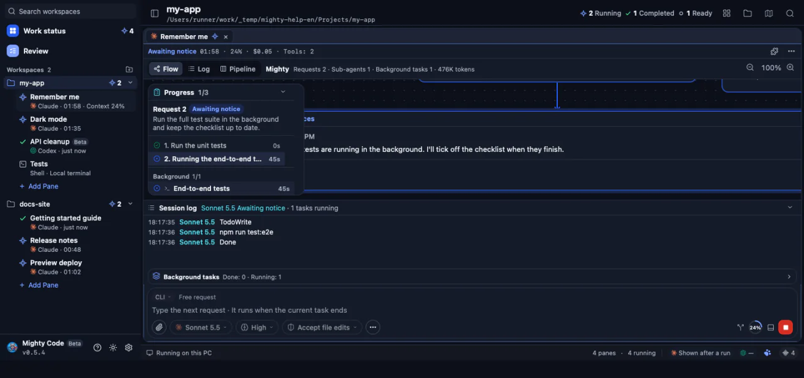
#Log
Use the Flow | Log switch at the top of the Mighty view to see requests as a list in time order. Each request row is followed by its Run row, then its sub-agents.
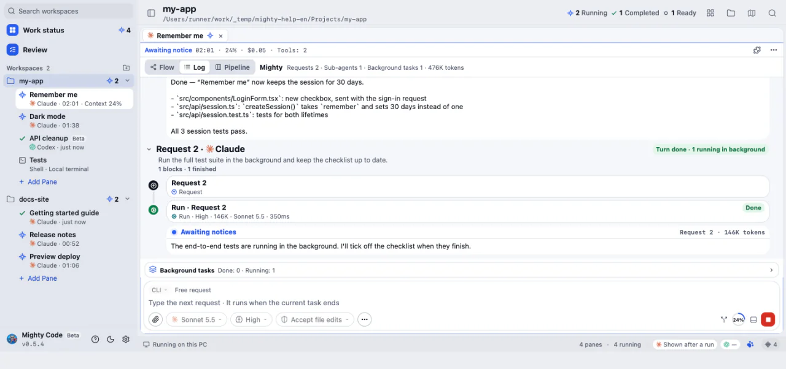
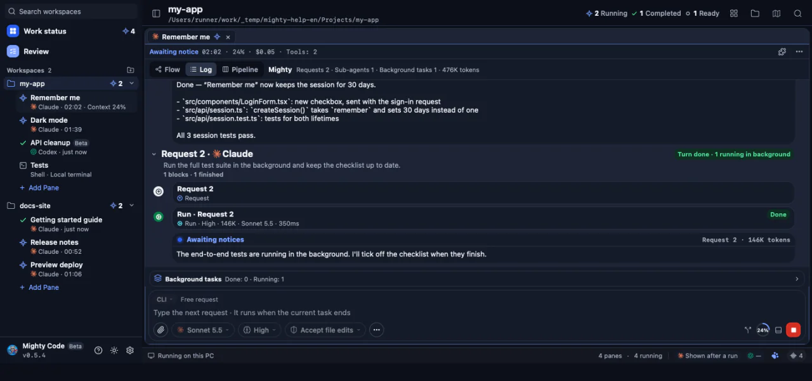
#Pipeline
Pick Pipeline on the same switch to see requests as a kanban-style pipeline.
- The view shows one thing at a time: one request in a pane without a style, one pipeline in a pane that uses a style. A pipeline is a run of requests whose phase only moves forward; a request whose phase goes back before the previous request's starts a new pipeline.
- ◀ Previous and ▶ Next at the top step back and forth. Click the title between them, such as "Request 3 / 7", to open the list with each one's number, title, status and steps, and pick any of them.
- Below that is the status (and, in a pane with a style, the pipeline's name). The steps are the chips at the top of each column, joined by lines. In a pane without a style they are Request → Run → Result; in a pane that uses a style, the mode's phases.
- The content sits in columns side by side, one per step, each headed by the step's chip and its number of cards. Without a style, the Request column holds the request, the Run column a card with the progress (the latest message and tool calls) and the status followed by one card per sub-agent, and the Result column the result. With a style, each phase column holds that phase's request cards (the request, a run summary and the result on one line) with their sub-agent cards under them. Nested sub-agents are indented and say which block they run under.
- Colour shows the state too. Each column takes a faint wash of its step's state colour (green when done, blue while running or awaiting notices, yellow while waiting on you, red on an error, grey when stopped), the current step follows its newest request, and a step not reached yet stays plain. Every card has a dot of that colour before its status words and a stronger wash than its column's; a running card keeps its moving outline, a waiting card its yellow outline, and the status words stay as they are.
- Long text is folded; Show more opens it in place. The small button in a card's header shows that block in the flow.
- The view opens on the newest one and, left there, moves on to each new request or pipeline. While you look at an older one, a new one leaves you where you are and puts a New request or New pipeline badge next to ▶; click it to go to the newest.
- Each column moves on its own: its header stays on top while its cards move up and down. Scroll up or down over a column with the trackpad or the mouse wheel, or drag an empty spot in it, to move that column only; when the columns don't all fit, scroll or drag sideways to move the board sideways.
- On the newest one, a column showing its end follows new content down. A column you moved yourself, or one where you opened a text, stays where it is until you come back to its end. A new request shows every column's end, and an older one opens with every column at its top. In the Windows app the whole pipeline still moves as one.
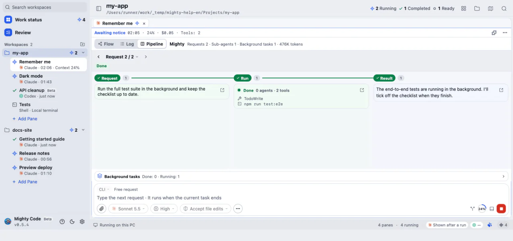
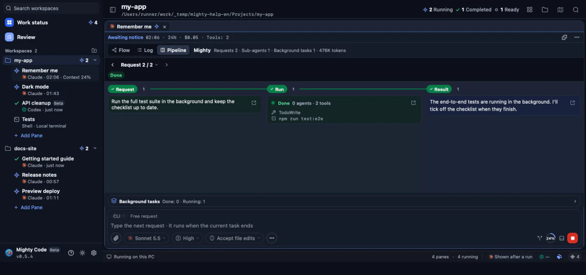
#The result card
When a request ends, a result card sums up the result. A request reads completed once Claude's answer ends. While background work it started is still running (including a finished sub-agent it woke up again by sending it a message), or has ended but Claude has not answered its notice yet, the result card is the Awaiting notices block in the waiting colour: under the answer so far, each task reads Notifies when done or Notice delivered, with a count such as "Notices 1/2". Meanwhile Mighty Pet and the pane header read Awaiting notice. Once every notice has been answered it becomes Final result. When Claude answers a background task's notice later, that answer is not added to the request's result; every answer opens a new diagram of its own (Background work). While other background work of the same request is still running, that answer's card is titled "Result so far · background tasks waiting: N", which tells you how many are left. If the result names files, Show files named in the result lists them. Clicking a file path inside a block opens a preview. The latest result card fits the pane; if you resized it yourself, a Fit to window button appears. For a source or Markdown file the request changed, the preview's head gets a Changes | Full File switch and opens on Changes: only the changed lines with 3 lines around them, old and new line numbers beside them, added lines on green and removed lines on red. The source is coloured for its language and the words that changed inside a line are marked. The Unified | Side by side switch in the line above shows the change in one column or the old and new text side by side (the choice is remembered). The full view colours the source the same way. The line above says what it compares with: opened from the result files list or a block, the file as it was before that request first changed it (Compared with before this request), else the last commit. With nothing changed there is no switch and the whole file shows.
When Claude answers again after background work of the same request, the earlier result card is titled Interim result with the name of the task that opened that answer (for example "Interim result · Mac build"). Only the request's very last result is the Final result. The last result card gets a Results list. The app takes a git snapshot of the working folder as the request starts, each time a checklist step is done, when a background task's answer ends and when the run ends, and shows the files changed in between, step by step. It is the same whether the agent edited with its edit tool or with a command, and the same in Codex, Gemini, opencode, Hermes and pi panes (a pane whose steps are its tool calls has the whole run as one section). By step | By file switches between sections per step and one list of files. With five or more sections only the last two stay open, each section shows up to five rows and "Show N more" opens the rest. Three or more files of one folder go under the folder's name, and past twenty files a search box appears. Click a file name to preview it; click the +/− counts on the right to see, just below, how that step changed that file. The files the answer names follow. Snapshots are taken only for folders inside a git repository; nothing is written into the repository's .git, they are kept in snapshots in the app's data folder, and those unused for 14 days are removed.
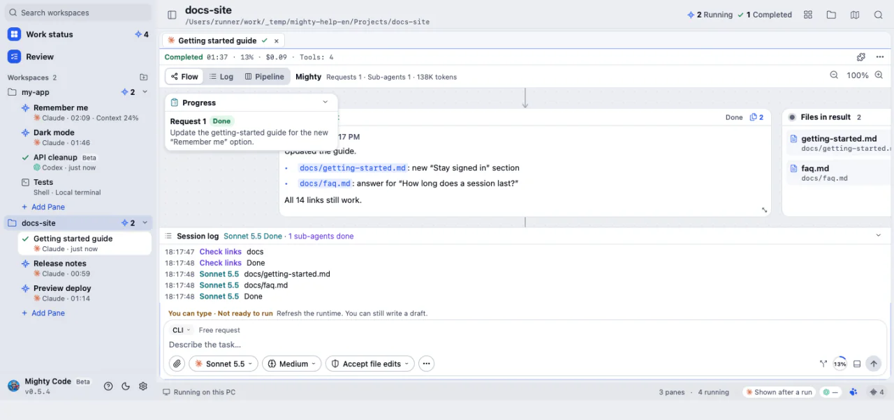
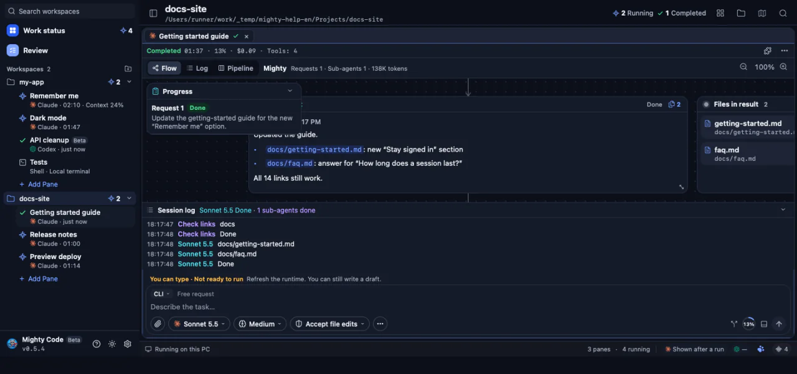
#Verification receipt
A request that went through end-of-turn verification gets a receipt under its result card: passed or failed and after how many checks, why it stopped when it failed, each command with its pass and time (the exit code or a time-out when it failed), the browser check's pages, console errors, exceptions and failed requests, and buttons for its screenshots. While repairs run it moves to the result card of the latest repair request.
- Auto repair: turned off, this pane only records a failure and never asks for a fix.
- Verify again: checks once now (without asking for a fix). While it checks the button becomes Stop, which stops after the command running now.
- The latest result not checked yet has a Verify button. The phone's pane screen shows the latest outcome in one line too.
#Audit log
The Audit log button in a result card's header (or the menu when you right-click the header) shows what that request did, one line each in time order. Use it to check what happened after a long run in automatic edit mode.
- It lists the commands run, the files edited and the files changed when the request ended (with lines added and removed), the addresses and web requests opened, plan card decisions and refused tool requests, sub-agents and the child panes delegation started, and the verification result. What a sub-agent did carries its name.
- Reads and searches are left out of the list; only their count is noted below it. The buttons at the top filter the list by kind.
- It is made from the run records the app already saved; nothing new is recorded. So a tool call that was allowed without asking is not an approval line: only refused requests and plan card decisions are.
- The Copy as Markdown button, or Copy audit log as Markdown in the menu, copies the list as Markdown. Secret values and the home folder path are taken out on the way.
#Reviewing a request's changes
When a request in a Claude pane changes files with Edit, Write or MultiEdit, each file's content just before the change is kept. Once such a request finishes, its result card gets a Review or revert this request's changes button in its header, which opens Review request changes: the files the request changed with their added and removed line counts on the left, and the selected file's changes against its content before the request on the right.
- Click a line of the changes to leave a note on it. "Put N notes in the composer" adds the notes, each with its file and line, after what the composer holds as one follow-up request. Nothing is sent.
- Check files, choose "Revert N selected" and confirm: they go back to their content before the request. A file the request created goes to the Trash (the Recycle Bin on Windows). The file keeps its current encoding and permissions; edits you made after the request are lost too.
- A file a later request also changed needs that request reverted first. A file that is gone, no longer reads as text (over 1 MiB or binary) or already matches its content before the request is not reverted.
- Each changed part (hunk) has Accept ✓ and Discard ↶ in its header. Discard ↶ puts only that part back the way it was before the request and leaves every other line alone. The file keeps its encoding, line endings (CRLF or LF), final line break and permissions. Once the last part is discarded and the file matches its content before the request, it is the same as reverting the file: a file the request created goes to the Trash. Accept ✓ changes nothing in the file; it only marks the part reviewed, and that is kept after a restart. Accepted parts are dimmed and folded; click a header to open one again.
- The list on the left shows how many parts of each file are handled (n/m); a file whose parts are all accepted or discarded is Reviewed (✓). Accept the rest accepts every part not handled yet. Once every file is reviewed, the request leaves the review queue.
- While the review has focus,
]and[go to the next and previous part,aaccepts andxdiscards. - A part that changed after the request is not discarded (Changed since). If lines were only added above it, it is found a few lines off and discarded. If a later request changed the same lines, only that part is blocked; parts away from them can still be discarded. If the later request kept no original of the file, the whole file is blocked.
- The changes view of worktree panes, child panes and compare runs has the same buttons and keys. There the base is the file in the commit the branch shares with its base branch.
- Each pane keeps the originals of its last 20 requests. Files changed by shell commands, other agents' panes and panes of remote workspaces get no button.
- Right-click a line of the changes to open the file at that line in your external editor; the header's button (Open in Editor) opens the selected file (open in an editor).
04Styles
A style is a ready-made way of working: it comes with phases and buttons, so a long task follows a set order. Without a style you send requests freely, as usual (CLI).
#Pick a style
Styles work in Claude panes, on the Mac and on Windows.
- Open the style menu (Request style) above the composer.
- Pick a style. Pick CLI to go back to free requests.
Each pane remembers its style. It can't be changed while a task runs. If the style needs a plugin or tool you don't have, an Install button appears. It fills the install command into a new terminal pane; you press Enter yourself.
The bundled styles' phase names and buttons are in Korean only for now.
#Bundled styles
| Style | What it does |
|---|---|
| Ouroboros | Interviews you to pin down the goal, then goes seed → run → evaluate → evolve. Your first request becomes the interview. Needs the Ouroboros plugin and uvx. |
| Claude plan (클러드 플랜) | Every new request starts in Claude's plan mode, and runs once you approve the plan card. Widgets show checklist progress and background tasks. |
#The plan card
When Claude finishes a plan in Plan mode (or the Claude plan style), a plan card appears.
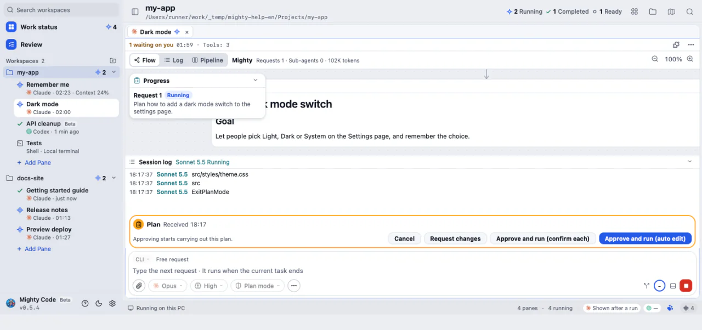
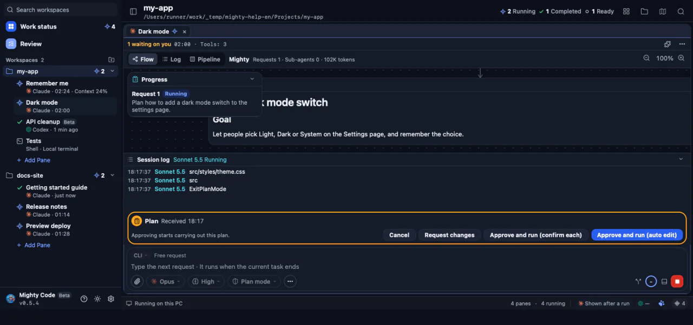
- Read the plan. Click Expand to read it as a full document.
- Choose one:
- Approve and run (auto edit): approve, and file edits go ahead without asking.
- Approve and run (confirm each): approve, and confirm each action.
- Request changes: write what to change and click Send change request; Claude plans again.
- Cancel: turn the plan down and stop this task.
In the Mighty flow, the plan shows in a block under its request, and the four answers sit in the input area (in the style's panel when you use a style). The plan block fits the pane like the result card; if you resized it yourself, a Fit to window button appears. In Log, the plan and its answers show together in one card above the input.
Mighty Pet shows a finished plan too: when it came and the whole plan, which scrolls inside the bubble when it is long. Click Approve and run (auto edit), Approve and run (confirm each) or Cancel right on Mighty Pet. Request changes opens the plan in a small window where you write the change, and Review plan… opens the same window to read the plan at full size. That window has all four answers, and it closes once the plan is answered.
Answered plans stay in the history so you can look at them again.
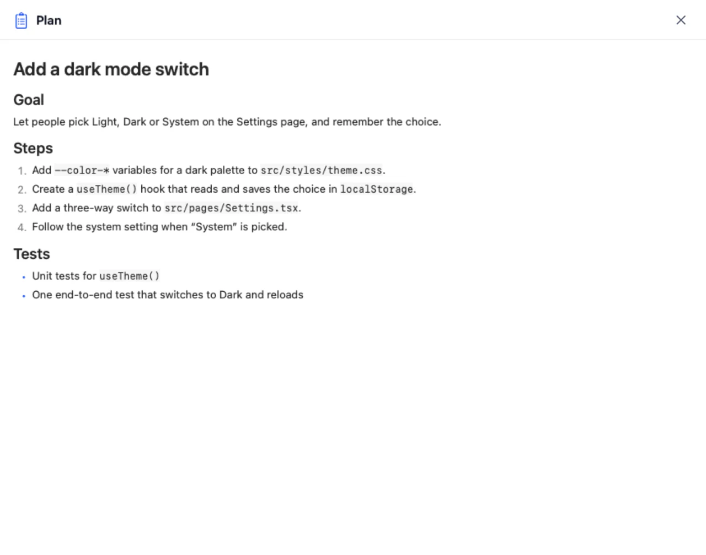
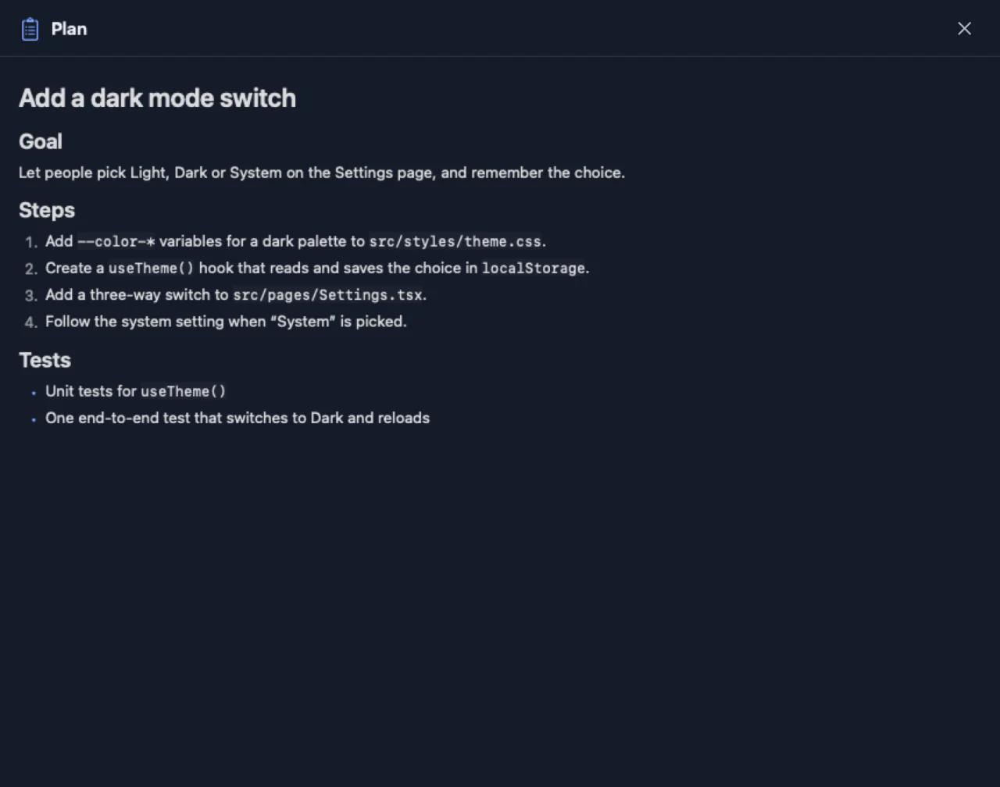
#Add other styles
Besides the bundled styles you can use styles from files.
- In Settings… → Styles, click Register style from file…. Styles in a repository's
.claude/mighty-styles/folder are found on their own. If the list looks wrong, click Refresh. - A new style must be reviewed once. Use View Contents to check its source, the tools it allows automatically, its install command and every button.
- If it looks right, click Allow.
If the style file changes, you are asked again. To block an allowed style, click Block in the same place; Unblock lifts the block. To take a style off the list, click Delete. Hover over a style's name to see its id and hash.
A style that allows tools automatically runs those tools without asking. Allow it only if you trust where it came from.
05Approvals, questions and sign-in
When an agent needs your decision, a card appears in its pane. Answer it and the work goes on. The same requests also show up in Work status, on Mighty Pet and on your phone.
#Approve a permission
When the agent wants to do something outside its permission (run a command, change a file and so on), an approval card appears.
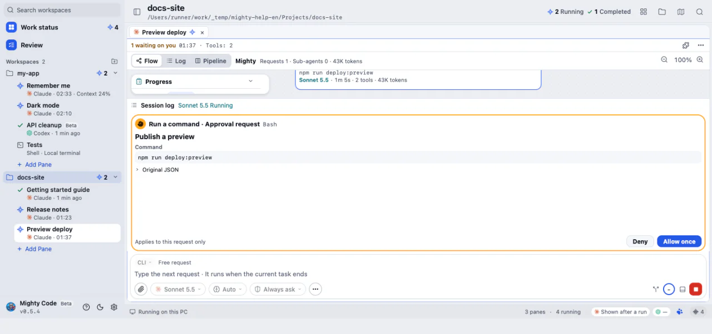
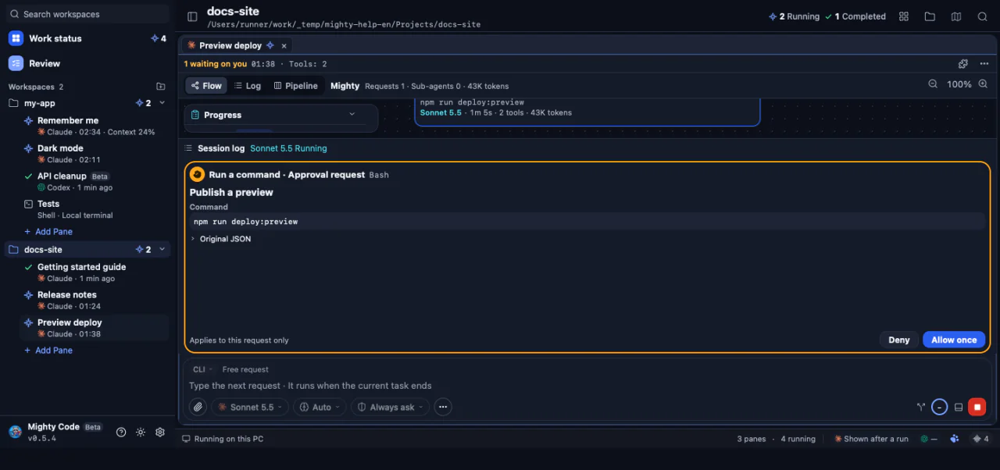
- Read what it wants to do. Commands and file paths are shown in boxes; the exact input is under Original JSON.
- Click Allow once or Deny.
An approval applies to this one request only. No rule is made that keeps allowing it.
Approval cards appear in Claude panes (Always ask and similar modes) with Codex's Ask for approval mode, and in opencode panes in every mode but Full access. In Hermes panes they appear for file edits and dangerous commands. In other modes the CLI's own settings allow or block the action. Antigravity works differently and asks in its own way.
#Antigravity's permission card
Antigravity cannot ask the app while it works. When it meets an action it would have to ask about (running a command, writing a file and so on), it skips just that action, finishes the turn, and then asks about everything it declined in one card. The card appears in Default permissions too, and the same card appears on your phone.
The card lists every declined action. For each one you see its kind (Command, Address, File and so on), the command, address or path, and the rule that would allow it.
- Read what was declined.
- Pick a button.
- Allow once: adds a rule for just the declined actions to Antigravity for a moment and continues the same conversation. When that run ends (finished, failed, stopped or the app closed), the app removes only the rules it added.
- Always allow: keeps the same rule in Antigravity's settings (
permissions.allowin~/.gemini/antigravity-cli/settings.json), so it runs without asking next time. On Windows the file is%USERPROFILE%\.gemini\antigravity-cli\settings.json. - Decline: closes the card and continues nothing.
Allowing continues in the same conversation. If the pane is busy with something else, the continuing run waits in the queue.
Rules match from the start. A command rule allows every command that starts with its text (command(git status) also allows git status --short), and a file rule for a folder allows every file in it. The Allow once rule also goes into Antigravity's settings for the whole computer, so while it is there it applies to every Antigravity run on this computer (other panes and workspaces, and agy in a terminal). An always-allowed command rule allows any arguments after it, so for a command whose arguments can make it do something else (find … -exec, curl … -o and the like), prefer Allow once.
A command that chains (;, &&, ||), pipes (|), redirects (>, <), substitutes (backticks, $(), runs in the background (&), or deletes data or raises privileges (rm, sudo, git push --force, git reset --hard, git clean, kill and so on) offers only Allow once. The card's Always allow is turned off with the reason; on the phone the button is not shown.
A command with anything but plain letters, digits, spaces and ._/:=@+,- (quotes, $, ~, %, \ and the like) also offers only Allow once, since a kept rule allows every command that starts the same way; a command with invisible or direction-changing characters, or spaces other than a plain space, gets no rule at all. A file rule is made only for a plain path on this computer's own disk (on Windows a drive path such as C:\… on a fixed drive), never for a network path such as \\server\share, which the app does not even look up. An address rule is made only when its host is plain (no @, \, %, spaces or non-ASCII letters), and the card shows the host as a browser reads it.
The app never makes a rule from a command with * or a parenthesis, or one for the whole disk (/) or your home folder (~). Nor does it make a file rule inside Antigravity's own settings folder (~/.gemini) or the app's data folder, or for a folder above them (such as your home folder): a rule there would let Antigravity change its own permissions. A command that mentions .gemini, a shell or interpreter on its own or given code inline (bash, python3 -c …, node -e …, cmd /c …), and a wrapper that runs another command (npx, xargs, timeout, env and so on) also offer only Allow once, because command(bash) would allow anything that starts with bash -c. The card says which reason applies. Such an action shows as one no rule can allow.
This differs from Claude. Claude stops before acting and waits for your answer; Antigravity finishes the turn, asks afterwards, and carries on once you allow it. So when the card appears, the rest of the work may already be done.
An action that no rule can allow still shows on the card, with guidance to change the permission mode. A card with only such actions offers just Decline. If Antigravity's settings file cannot be read or is not JSON, the app leaves it alone and shows the reason on the card. The app only adds and removes rules under permissions.allow and leaves every other setting as it was. If a rule it added for a moment cannot be removed, it tries again shortly, and again when the app opens next.
An Antigravity pane on a remote workspace changes the settings of the computer that runs it. Each card's allow can be used only once there, and Always allow is accepted only while Allow full access and commands from remote is on on that computer.
#Answer questions
When Claude, pi, opencode or Hermes asks you to choose between options, a Choice requested card appears. A question that asks for a written answer without options shows only the text field.
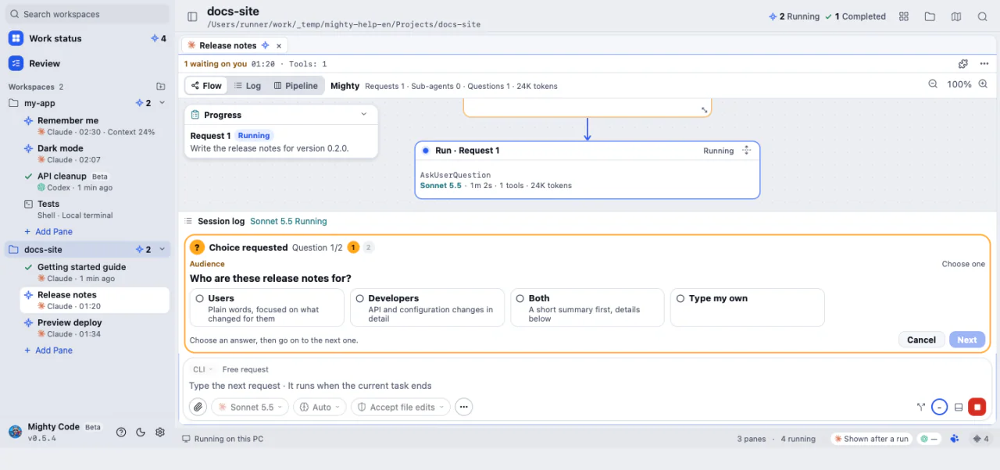
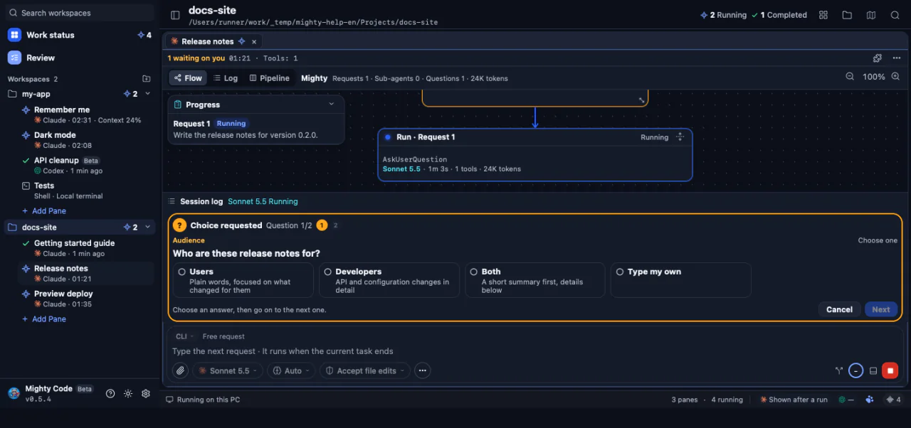
- Read the question and pick an answer. Some questions take more than one.
- If no option fits, write your own in Type my own.
- If there are several questions, go on with Next.
- When all are answered, click Send answers. Picking alone doesn't send anything.
#When the terminal waits for input
When a command the agent ran in the terminal (or one you started with Run on a shell block in a reply) waits for input, a The terminal is waiting for input card appears above that agent pane's composer. Answer on the card instead of going to the terminal pane, and the answer is typed into the terminal as it is. The same card shows in that pane on the phone.
- Yes/no questions (like
(Y/n)): press Yes or No. The answer Enter alone would give is marked (default). - Passwords: type into the hidden field and press Send. What you type is never shown or kept in the conversation.
- Text: type and press Send, or press Press Enter to take the default.
- Lists: move with Up and Down, then press Select.
The card appears once the command's output has paused for a moment, and goes when you answer, the command prints again or it ends. The agent never answers for you. You can still type in the terminal pane yourself (Show terminal).
#When the sign-in drops
If a request fails because the CLI sign-in expired, a sign-in recovery card appears above the composer.
- Click Sign in again.
- Approve the sign-in in the browser that opens. If the browser shows a code, paste it into the card and click Submit.
- Once you are signed in, the failed request is sent again automatically.
If you already signed in somewhere else, click Resend. If the browser sign-in doesn't work for you, use Sign in in a terminal.
macOS Antigravity, pi, opencode and Hermes sign in in a terminal. A sign-in terminal opens beside the failed pane. Antigravity (agy) opens a browser where you sign in with your Google account. In pi, type /login in the terminal and pick a subscription or enter an API key. opencode runs opencode auth login: pick a provider, then sign in or enter an API key. Hermes runs hermes model: pick a model provider, sign in, then pick a default model. Once the sign-in is confirmed, the failed request is sent again automatically. The terminal stays open after you sign in.
Windows On Windows too, Antigravity, pi, opencode and Hermes sign in in a terminal. The sign-in terminal opens in a window of its own (a new tab when Windows Terminal is installed), in the failed pane's folder, and what you do there is the same as on the Mac. Antigravity (agy) opens a browser where you sign in with your Google account. In pi, type /login and pick a subscription or enter an API key. opencode runs opencode auth login, and Hermes runs hermes model. Once the sign-in is confirmed, the failed request is sent again automatically. The app leaves the terminal open.
Turn on Sign in again automatically when the sign-in drops on the Components tab and sign-in starts again the moment it drops.
#Background work
Claude sometimes runs long commands or sub-agents in the background. Then work is still going on after Claude's answer is done.
- Background work shows in the Background group of the progress panel above the diagram (from the start of the request). The "1/3" beside the group's title is the number of tasks still running and the total this request started. Each row shows its state, its kind (command or sub-agent), the first line of its command or prompt, and the time it has taken; hover over a row to see it in full.
- When a task ends, Claude is notified and carries on with the result. An ended task shows as ended and stays in the group until you send the next request.
- While it runs, background work is not drawn in the request's blocks in the Mighty view; it lives only in the progress panel. The phone keeps a folded Background tasks line above the Mighty view that shows the ended and running counts, like "Done: 1 · Running: 2", and opens to the rows of the tasks still running.
- When a task ends and its notice goes to Claude, nothing is added to the request: each answer of Claude's opens a new diagram. It is titled after the finished work, like "Background work finished · code review agent", and shortened to "… and N more" when several ended together. It shows the ended task's Background task block (command, how it ended, summary) and Claude's answer. It is not a request, so it takes no request number. In the flow it is a new card at the bottom; in Log it is a new row, and in Pipeline a new card (board) at the end. A notice that names nothing opens no diagram unless Claude answers it. Until every notice has been answered, the request's own result card stays an Awaiting notices block (result card).
- A sub-agent started in the background works the same way. When it ends, its block in the Mighty view shows Done, Failed or Stopped (also Stopped if the app restarted before it finished), and the final report it hands back becomes the block's result. A message it sends while still running is added to the block's log and does not end it; Claude's answer to that message gets its own Sub-agent message diagram. Further messages from the same agent, with Claude's answers, go on in that same diagram. Claude's answer to the end shows in the Background work finished diagram.
- A request you send now waits in the queue by default and starts after the background work ends. To start it now, click stop: the queue stays and its first request starts next. In a pane with Mighty Orchestration on, in a git repository, ⌘Enter (CtrlEnter on Windows) runs it right away in a new worktree, and if you picked an agent under While running, send to below the composer, Enter too runs it right away in a new worktree with that agent (Keep asking while it runs).
- Folding the progress panel folds the background group with it.
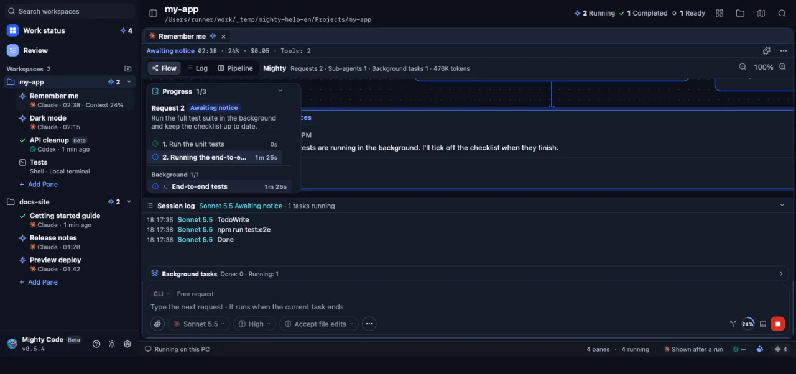
#Sandbox
Each workspace can run its agents in a sandbox: the macOS sandbox on the Mac, the experimental Windows sandbox on Windows. It is off by default. Right-click the workspace in the sidebar, choose Sandbox settings…, turn on Run agents in the sandbox and press Save. It applies from the next run, and the pane's header shows a Sandbox badge. Click the badge to open the settings.
#What it blocks
- Writes: only in the workspace (or the pane's worktree) folder, the agent's own settings folders, the temporary folders and package caches.
- git: commits, branches, merges and rebases work.
.git/config,.git/hooksand.git/infocannot be changed. - Instruction files: with Keep instruction files read-only (.mighty.yaml, AGENTS.md, CLAUDE.md, agent settings) on (the default),
.mighty.yaml,AGENTS.md,CLAUDE.mdand the agents' project settings cannot be changed. Add more paths under Read-only paths. - Reads:
~/.ssh,~/.aws,~/.gnupg,~/.config/gh, browser cookies, the app's data folder and the other agents' sign-in files cannot be read. Each agent reads only its own sign-in. - Connections: with Limit connections to the allow list on (the default), the agent goes out only through the app's proxy. Only the agent's API hosts and what you list under Allowed hosts pass at once.
#Windows (experimental)
Windows It works without administrator rights. The agent's CLI runs with a low-integrity, write-restricted token, inside a job that cannot touch other windows or the clipboard. The settings box shows the Experimental mark and the What it enforces here list.
Approval before it turns on: turn on Run agents in the sandbox and press Save, and the list of folder permission changes comes first. The workspace folder gets a low integrity label and a write entry, .git/config, .git/hooks, .git/info and the instruction files get a write-deny entry, secret folders such as ~/.ssh and ~/.aws get a no-read-up label, and each agent's folders (~/.claude, ~/.codex…) become writable for that agent only. Nothing changes until you press Approve and turn on. Every change is recorded; turning the sandbox off and saving undoes the workspace's changes (a secret folder's label, shared by workspaces, when the last one turns it off). Before removing the app, press Undo every change.
What it does not stop:
- The connection allow list is advisory. Only programs that follow the proxy setting go through the list and the cards; a program that ignores the proxy and connects directly is not stopped.
- Instruction files that did not exist when it was turned on (a new
AGENTS.md) can be changed. - Another agent's sign-in file can be read (writing to it is stopped). Browser profiles are not closed.
- A folder with a low integrity label can also be written by other low-integrity programs on this computer.
- A workspace on a network folder (
\\server\share) or a drive that is not NTFS cannot be sandboxed.
Agents: Claude, Codex, Antigravity, OpenCode and pi run in the sandbox. Hermes is refused (its program and settings share one folder); it is never run unsandboxed. Package caches and temporary files go to a folder of the workspace's own under %USERPROFILE%\AppData\LocalLow\MightyCode\sandbox.
#Allowing a connection
When the agent connects somewhere not on the list, the Allow this connection? card appears above the composer.
- This run: allowed until this run ends.
- Always: added to the workspace's allow list and allowed.
- Deny: blocked. No answer within 5 minutes also blocks it.
A blocked action stays as a line in the progress, and shows with its reason in the same pane on the phone and in the settings' Recently blocked list. You can answer the card on the phone too (Always only on the Mac).
#Reviewer agent
With Let a reviewer agent judge first on, a read-only agent (Claude's haiku by default) looks first whenever an approval or connection card appears.
- It allows only safe actions on its own: reading files, editing files inside the workspace, build and test commands, package registries.
- It cannot allow writes outside the workspace or dangerous commands. It denies them or leaves them to you.
- No answer within 20 seconds, or an error, is never an allow: you are asked.
- Each decision leaves a line in the pane. The card stays up meanwhile, so you can answer first, and your answer wins.
- Only your own words are permission. The reviewer's text never counts as permission. Reviewer runs cost money and show in the usage.
#Limits
- Shell panes' commands, SSH workspaces (the agent runs on the remote machine) and remote workspaces are not sandboxed.
- Windows The Windows sandbox is weaker than the Mac's. See Windows.
- A sandboxed run ends when the app closes. It does not keep running in the background.
- macOS's
sandbox-execis deprecated by Apple. Without it, a run in a sandboxed workspace is refused; turn the sandbox off to run. - Agents that keep their sign-in in the keychain (Claude, Codex, Antigravity) can read the login keychain. macOS asks separately for other apps' items.
06Mighty Orchestration
With Mighty Orchestration, while one agent pane works, you hand other work to child panes beside it and both go on at once. A child runs its parent's agent: Claude, Codex or Antigravity; it can also run another of the three (Codex and Antigravity). Each child pane works in its own git worktree and branch, so they never touch each other's files, and when it is done you merge its result into the parent's branch from its card in the sidebar. It used to be called agent delegation.
There are two ways to open a child pane.
- Start one yourself: in a running Claude pane, or a Codex or Antigravity pane in a mode where its child can change files (Codex and Antigravity), type your next request and press ⌘Enter. The request runs right away in a child pane with a new worktree (Run in a new worktree).
- Let Claude hand work over: ask Claude (or Codex) to split the work and hand it to child panes. It makes the children, reads their reports and merges them too (Let Claude hand work over).
This is an experimental feature. It is on by default and can be turned off in Settings. Try it in a practice repository first.
#At a glance
This is how it goes when you start a child yourself.
- Open a git repository folder as a workspace and give a Claude pane some work.
- While Claude works, type your next request and press ⌘Enter. The running task goes on undisturbed, and a child pane opens beside this pane and runs the request right away.
- The child pane is listed one step in under the parent pane in the sidebar, with its state beside it.
- When the child finishes, commits and leaves a report, its state becomes Reported.
- Press the Merge button on the child's card to bring the result into the parent's branch.
- Once merged, the child pane, its worktree and its branch are cleaned up at once when no uncommitted file is left in the worktree. When files are left, they are listed and you choose Delete them and clean up or Keep it. The merged work stays in the parent's branch.
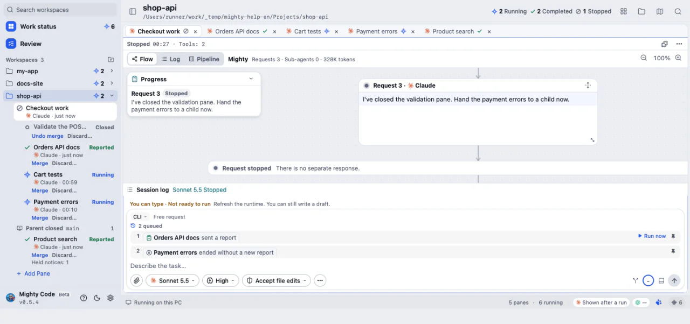
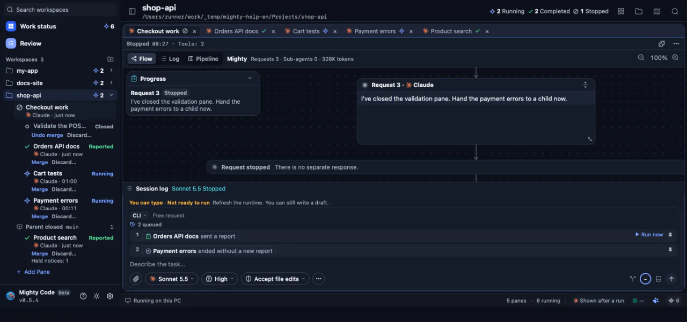
| To do this | Use |
|---|---|
| Run after the current task | Enter (when While running, send to is Queue, the default) |
| Run right away, apart from the current task | ⌘Enter or the Run in new worktree button, Enter with an agent picked under While running, send to while it runs, or a queued row's Run now button |
| Bring the result into the parent's branch | The card's Merge button |
| Undo a merge | The card's Undo merge button |
| Throw the result away | The card's Discard… button |
#Run in a new worktree
While a Claude, Codex or Antigravity pane is running, type a request and press ⌘Enter or the round Run in new worktree button (the branch icon) beside stop. The running task goes on undisturbed, and your request runs right away in a new child pane with its own worktree. The new pane is shown at once, unless you have started typing in the parent pane meanwhile.
- In a running pane, Enter by default puts the request in the queue, to run after the current task ends. If you pick an agent under While running, send to, Enter too runs it right away in a new worktree with that agent (below). The hint in the composer shows what Enter does now.
- A new worktree is used only where one can be made: a git repository with a branch checked out that has a commit. Anywhere else (not a git repository, no commit yet, a commit checked out instead of a branch) ⌘Enter queues the request, as Enter does.
- The child starts from the parent's last commit. It gets a branch
mighty/<child id>, and its worktree is made outside your project folder (~/.mightycode/worktrees/<child id>on the Mac,%USERPROFILE%\.mightycode\worktrees\<child id>on Windows), so it never touches the parent's work. Changes you have not committed in the parent's folder do not reach the child. - A child of the pane's own agent runs with the parent pane's permission mode, model, Thinking effort and other run settings (fast mode, web search, maximum turns, budget). In a style that starts every request in plan mode, it starts in plan mode. It opens in the parent's view, and when the parent was using a style in the Mighty view it starts in the same style (the style's progress is counted on its own from the child's first request). Your attachments go with it.
- Its first message is your text, followed by a note from the app on where the child works, asking it to commit and write REPORT.md when it is done, so that its card can merge it. A slash command (text starting with
/) runs alone, as you typed it, and the app's note follows as the child pane's next request, so it never becomes the command's arguments. - To run the request with another agent, pick Claude, Codex or Antigravity under While running, send to in the composer's bottom row while the pane runs (an entry such as 'Worktree · Codex'), then send with Enter. A request with attachments but no text goes to the queue. ⌘Enter (CtrlEnter on Windows) and the Run in new worktree button always keep the pane's own agent. A greyed-out entry says why it cannot run: its CLI is not installed or not signed in (check Settings… › Components), it has no mode that can change files, or 3 children you started are already open. A child of another agent takes, as a new pane does, the permission mode, model, Thinking effort and other run settings of that agent's pane used last (when that mode cannot change files, the rule below applies). With no pane of that agent yet, it starts in the widest of its own modes that can change files and does nothing the pane's mode does not allow (Codex and Antigravity). It opens in the pane's view without its style. If that child cannot be made or started, your text and attachments go back to the composer and the transcript says why; they never go to the pane itself. Where the pane's own agent cannot have a child in its mode but another agent can, the Run in new worktree button is not shown, While running, send to offers only the other agents, and ⌘Enter queues the request.
- A request already in the queue can go the same way with its row's Run now button. Pick the agent with the agent picker before the button (the pane's own agent by default). If its child cannot be made or started, the request goes back to the head of the queue and the transcript says why.
- Use a child pane like any pane of its agent: answer its approval cards, send follow-up requests and change its permission mode.
- The parent pane's Claude gets no notices about a child you started, since it never asked for it. The parent's tools neither list it nor merge it or send it follow-ups (
human_started). Follow its state in the sidebar and use its card's buttons yourself. - A parent pane can have up to 3 open children, with 10 GB of free disk. Closing or discarding finished child panes makes room.
- When the child cannot be made or cannot start after all (the pane already has 3 open children, the disk is low, its worktree or first run fails, and so on), the pane's transcript says why. Your text then becomes that pane's next request, as Enter would make it. With the queue full it goes back to the composer. A child that failed to start stays listed until you discard it from its card.
- In a child pane, or in a pane with Mighty Orchestration turned off, ⌘Enter queues, as Enter does. What you send from the phone to a running pane always waits in the queue too. Nothing a person sends goes into the running task.
#Panes in their own worktree
So that several agent panes of one workspace can work at once, a workspace's agent pane can work in its own git worktree and branch, as a child does. The panes never write over each other's files, and when a pane is done you merge it into the workspace branch from the bar over it.
- When a pane opens in a worktree: when another agent pane already works in the workspace folder, a new agent pane asks: Open in a new worktree, Open in a new worktree, and always for this workspace or Open in the same folder. Set it ahead in the workspace row's right-click menu, Agent pane worktrees: Ask from the second pane, Always from the second pane or Every pane, the first too. With Every pane, the first too the first pane works in a worktree too, so the workspace folder only receives merges (a pane working in the workspace folder would otherwise block merges). A pane opened from the phone follows this setting and, where the setting asks, opens in the workspace folder. A pane that continues an earlier session always works in the workspace folder.
- How it is made: with a child's rules. A branch
mighty/<pane id>starts at the workspace branch's last commit, and the worktree is made in~/.mightycode/worktrees/<pane id>. A folder where none can be made (not a git repository, for example) says why and offers only the same folder. - SSH workspaces: the worktree is made in
~/.mightycode/worktrees/<pane id>on the machine, and merge, commit, undo, discard, the copies and the setup command happen there with the same rules (SSH machines). - What the agent is told: the pane's first request carries a note from the app, so the agent knows its worktree, branch and PORT and commits its work when done. You merge from the app.
- The bar: over the pane: its branch and base, commits the base lacks (↑), commits the base moved ahead by since (↓), changed files not committed (±, click to review them), and its PORT (click to open localhost). Once a merge from the bar is done, the worktree and its branch are removed and the pane closes when no uncommitted file is left; when files are left, you are asked, with the list, whether they go too (a merge from the phone cleans up only when nothing is left). While changes are left the button reads Commit and merge: it commits them, new files too, then merges. New files that look like secrets or are over 5 MB are not committed, and the pane says which.
- Leftover worktrees: a little after the app starts, it looks for worktree folders or
mighty/*branches that no pane or record uses. When it finds some, it lists them (marking unmerged commits and uncommitted files) and asks whether to Clean up. - Conflicts: when a merge is refused for a conflict, an Ask to resolve button appears. It asks the agent to bring the base branch in, resolve the conflict and commit.
- The bar's menu: Review changes (files changed against the base, with their diff), Open a terminal in this worktree, Show in Finder (Windows: Show in File Explorer), undo the last merge (only while the workspace folder has not changed since), Create pull request… (after asking, pushes the branch to origin, never forced, and on GitHub opens the page to create the pull request), and Discard (refused while child panes branch from this pane's branch).
- Preparing: the files listed in the workspace row's Files copied into worktrees… (such as
.env) are copied into a new worktree, then Worktree setup command… runs once. The pane's runs get thePORT,MIGHTY_WORKSPACE_FOLDERandMIGHTY_WORKTREEenvironment variables and those of its port range. - Closing and the list: a pane closed with nothing unmerged takes its worktree with it. One with work left keeps it, and Worktrees… in the workspace row's menu opens it as a pane again, merges it or deletes it.
- Review queue: worktree panes and child panes that finished with changes gather in the Review Queue. Open Folder in Editor in the bar's menu opens the folder the pane works in in your external editor.
#Start from an issue
Pick a GitHub issue, or a Linear, Jira or GitLab issue and start working on it. Open the list with Start from an issue… in a workspace's right-click menu in the sidebar.
- Connecting: in Issue tracker settings… in the same menu. GitHub uses
gh. Under Other issue trackers, pick Linear, Jira or GitLab and turn on Use in this workspace.- Linear: a Personal API key and the Team key (empty for all teams).
- Jira Cloud: the Site address (
https://your-team.atlassian.net), the Atlassian account email, an API token and the Project key. - GitLab:
glabwhen it is installed and signed in, else a Personal access token. Left empty, the Project path and address are read fromorigin. - Tokens are kept only in the OS keychain (the Mac keychain, Windows Credential Manager), never on screen, in logs or in state files. Test connection checks one; Disconnect deletes it.
- The list: each tracker you turn on gets a tab. Filter with Mine, Open and All; the chip picked first follows the Default filter (Assigned to me, Not done). The list is read only when it opens and when you refresh it.
- Start in worktree pane: opens a pane in its own worktree for the issue. A Linear, Jira or GitLab issue's branch is
<prefix>/<key>-<title>(such aslin/ENG-123-fix-login,jira/PROJ-7-…,gl/12-…); GitHub issues keepmighty/<pane id>. The issue's title, body (a Jira body is turned into Markdown), sub-items and link go into the first request. The worktree bar shows the linked issue's chip; click it to open the issue. - Pull requests: a pull request made from the Git workbench gets the issue's link at the end of its body (with the commits' subjects when you leave the body empty).
- Write back to the issue: one switch each per tracker: Start → in progress, PR → in review, Merge → done and Comment the PR link (on by default). Linear moves to the team's started or completed state, Jira takes the transition with the matching name, and GitLab uses the
In ProgressandIn Reviewlabels and closes. What was written shows in the pane's log. Nothing is written to GitHub.
#Forking a conversation
To try another way without losing the context a pane built up, open a new pane in a new worktree that carries on its conversation. The source pane's conversation and files stay as they are.
- Where: the pane's ··· menu Fork into a new worktree, or Fork from here in a result block header's right-click menu (the conversation up to that request). A running pane can be forked once it is done.
- Worktree: a
mighty/fork-<short id>branch and worktree are made from the source pane's HEAD. When the source works in its own worktree, the fork merges into the same base branch. Copied files, the setup command,.mighty.yamland the port block work as for any worktree pane. - Uncommitted changes: with Carry uncommitted changes (gitignored files stay) on (the default), the source's changed and new files come along (
git stash createmakes them without touching the source, then they are applied in the new worktree). Gitignored files never come along. If they cannot be carried, the source stays as it is and the new pane's log says why. - The conversation: for Claude and Codex the CLI copies the source session into a new one with the first request (Claude
--fork-session, Codexexec fork); the source session is not changed. For Antigravity, opencode, Hermes and pi, and when you fork from a request that is not the last, the first request starts with a summary of the last request, the plan, the last result and the changed files (12,000 characters at most, lines that look like secrets removed). If the CLI cannot find the source session, the next request carries the summary. - Where it shows: the new pane is listed under its source in the sidebar, with the source's name and a button to it over the pane. The phone's pane summary carries it as
forkedFrom. - SSH workspaces: the fork's worktree is made on the machine, and the uncommitted changes are carried there (new files never through a link and never over a file already there). Claude's transcript is copied on the machine under the new folder's name. When the machine can't be reached, nothing is forked and the app says why.
#Compare run
For a hard task it is often quicker to try several approaches and keep the best. Hand one request to several agents at once (or the same agent several times, say three Claude children) from the same base commit, compare the results side by side and merge one.
- Start: write the request in the composer, then choose Compare run… from the send button's right-click menu on an idle pane, or from the While running, send to menu on a running one. In the picker, pick rows of agent and model (Add row; the same agent may appear more than once), the Base commit (HEAD by default, or a recent commit of this branch) and, if you like, a Test after the report (a run action or task from
.mighty.yaml), then press Start. - Which agents: only agents that can start a child now are offered (Claude, Codex and Antigravity, when installed, signed in and with a mode that can change files). Up to four rows. A compare run's children are counted apart from the three children you start yourself and the three
delegatemakes: a pane may have up to four of them open (of all its compare runs, in an SSH workspace too), so a second compare run can use only the room the first one left until its children are merged, discarded or closed. - Run: each row opens a child pane as Run in a new worktree does, all at once, with the same request, the same base commit and its own port block. A row with a model runs that model. When one row cannot start, its column says why and the others go on.
- Budget: with a daily budget set, a start that would likely pass it (today's spend plus the estimate) is warned about first. The estimate is rough: for each child, the average cost of one run of the same agent and model in the last 30 days of the usage ledger (the agent's average without that model, $1 per child without either).
- Group card and Comparison: a card appears under the pane in the sidebar; press it to open Comparison. Each column shows the agent and model, the state, the files and +/− lines against the base (
git diff --shortstat <base>...<branch>), the time taken, the cost from the usage ledger and the chosen test's result (run once in the child's worktree after it reports), with Open pane, View diff, Merge and Discard. The group is saved with the pane, so it opens again after a restart. - Picking one: Merge works only for a child that reported, with the card's rules and the pre-merge checks. Once it is merged you are asked whether to discard the other children at once. Undoing the merge stays on the child's card. Remove the compare card removes the card only; the children stay.
- The phone's pane payload carries the group as
compareRuns; the phone does not show it yet. - SSH workspaces: each child is a worktree pane on the machine, started at the chosen commit, with the request as its first run. Only agents that run on the machine (Claude, Codex, Antigravity, pi) can be picked. Merging is the worktree bar's Commit and merge (with the pre-merge checks) and discarding is the bar's discard. The test is one of
.mighty.yaml's run actions or tasks and runs on the machine. When the machine can't be reached, no child is made, a merge fails and a discard stops.
#Ports, run actions and teardown
A .mighty.yaml at the top of the repository can give each worktree its ports, run actions, and a teardown command that runs when the worktree is removed. Its commands run only after you press Trust & approve in the Tasks panel, and again only after you approve a changed file. Remote workspaces do not use it.
version: 1
worktree:
setup: npm ci
teardown: docker compose down -v
teardownTimeoutSeconds: 60
ports: 10
run:
dev:
command: npm run dev -- --port $MIGHTY_PORT
e2e:
command: npm run test:e2e
concurrent: false
url: off- Port range: each worktree (and the main checkout) gets
portsports (10 by default) from 41000 that no other one holds. Ports another program already listens on are skipped. The assignment is kept inports.jsonin the app's data folder and given back when the worktree is removed; the ports of worktrees removed while the app was closed are given back at the next start.ports: 0assigns none. The bar shows the range, such as:41010–41019. - Environment variables: the setup and teardown commands, run actions, tasks and the agent of a worktree pane get
MIGHTY_PORT(the first port),MIGHTY_PORT_COUNT,MIGHTY_WORKTREE_NAME,MIGHTY_ROOT_PATH(the main checkout) andMIGHTY_WORKTREE_PATH. The shell expands$MIGHTY_PORTin a command (%MIGHTY_PORT%in cmd on Windows).worktree.envcannot set these names. - Run actions (
run): the Run section of the Tasks panel shows each action's state with Start and Stop. An address such ashttp://localhost:<port>found in its output shows as a link (url: auto, the default), marked Outside port range when its port is not in the worktree's range. Aurladdress is shown as written;offshows none. An action withconcurrent: falseis marked One at a time, and starting it first stops the same action in the repository's other worktrees. Running actions also show on the bar. - Teardown (
teardown): when a worktree is discarded, or removed as its merged pane closes, its run actions stop first and the teardown command runs in the worktree folder. It is stopped afterteardownTimeoutSeconds(60 by default). The worktree is removed even when the teardown fails or is stopped; the result stays in the pane's transcript and in the Tasks panel. - Personal settings: the same keys in
.mighty.local.yamltake precedence; run actions are replaced by name.
#End-of-turn verification
List commands such as a type check, a lint and unit tests under verify in .mighty.yaml, and every time an agent pane's request ends well they run to check the result. When they fail, a summary of the failure goes to the same agent as its next request so it fixes it, and the check runs again. Like the other commands they run only after you press Trust & approve in the Tasks panel, and adding or changing verify needs approval again. The list you approve shows each command whole on a verify: line.
verify:
commands:
typecheck: npx tsc --noEmit
test:
command: npm test
cwd: web
timeoutSeconds: 600
maxRounds: 2
when: changed
browser:
runAction: dev
paths: [/, /settings]- When: only after a request ends normally. Not after one that was stopped or failed, waits for an approval or a question, or has the next request queued; not in delegated child panes, compare children or mirrored panes.
when: changed(the default) checks only when the request changed files,alwaysevery time. In a folder whose snapshots cannot tell, it checks. - Where: in the folder the request worked in (a worktree pane's worktree), or the
cwdbelow it, one command after another, with the run actions' variables (MIGHTY_PORTand the rest) andworktree.env. A command that does not end within itstimeoutSeconds(300 by default) fails. An SSH workspace runs them on its machine; a workspace with the sandbox on runs them in the same sandbox as the agent's run (and not at all when the sandbox cannot be prepared). - Automatic repair: the last 40 lines of each failing command (lines that look like secrets and
worktree.envvalues removed, 6,000 characters at most) go out as a "Verification failed — please fix it" request. When the agent is done, it checks again. - When it stops: at a pass. Also when
maxRoundsrepair requests (2 by default, 0–5) were sent and it still fails, when a repair brings back the same failure (the same output once times and numbers are set aside), when one more turn could go past the daily budget, when you send anything to the pane or stop its run, or when a repair turn does not end normally. Unless you stopped it, an OS notification and a phone notification say so. WithmaxRounds: 0it checks and never asks for a fix. - Browser check (
browser): one of Chrome, Edge, Chromium or Brave installed on this computer starts without a window on a profile of its own, opens the dev server'spaths(/by default) and keeps console errors, uncaught exceptions, failed requests (4xx, 5xx, network errors), an accessibility-tree summary and a screenshot. The address isurl(on this computer only) or the one the run action named inrunActionprinted; an address outside this worktree's port block or that run action's port is never opened. No browser is downloaded: without one it says so and the rest of the check still runs. Agents can run the same check themselves with themighty_browser_checktool. - The outcome is on the result card's verification receipt.
#Let Claude hand work over
A Claude or Codex pane (the parent) can also split its work and hand parts of it to other panes (its children), of its own agent unless it names another. When a child reports, the parent gets a notice, reads the report and decides whether to merge the result. Claude and Codex parents work in the Mac app and the Windows app.
- Open a git repository folder as a workspace and open a Claude pane. That pane is the parent.
- Name the tool in your request, for example "use the delegate tool to open two Mighty child panes and split this between them". If you only say "split this up", Claude may use its own built-in sub-agents instead.
- The child panes open next to the parent, and the sidebar lists them one step in under it.
- The parent's tools are
delegate(hand over a task; itsagentcan name the child's agent:claude,codexorantigravity),list_children(list the children),child_status(read state and report),merge(merge a child) andfollow_up(send a follow-up). The parent cannot calldiscard; only you can discard, from a card. - Each child gets a branch
mighty/<child id>and a worktree (~/.mightycode/worktrees/<child id>on the Mac,%USERPROFILE%\.mightycode\worktrees\<child id>on Windows). A child starts from the parent's last commit. - The task goes into TASK.md and the result into REPORT.md. Both sit in a folder git ignores inside the worktree, so they are never committed.
- A child's permission mode is the one the parent chose, which can be no wider than the parent pane's own mode. A child of another agent may do nothing the parent's mode does not: change files without asking only if the parent's mode does (Claude in accept-edits or auto mode, Codex in Ask for approval or Working folder, Antigravity in Accept edits, any agent in Full access), change files after asking only if the parent's mode changes files at all, run shell commands without asking only if the parent's mode does (Claude in auto mode, Codex in Read only or Working folder, any agent in Full access), and have full access only under Full access. So under Claude's accept-edits mode, which asks before shell commands, a Codex child gets Ask for approval, not Working folder, and a Claude pane in plan or manual mode gets no Codex or Antigravity child at all. Only you can widen it, between runs, from the permission menu in the child pane's composer or in the phone's settings.
- A child pane opens in the parent pane's view (the same one of Flow, Log, Pipeline). If the parent was on Pipeline in the Mighty view, the child shows Pipeline too.
- The parent cannot answer a child's approval cards. When a card appears in a child pane, answer it there yourself.
- A parent can have up to 3 open children made by its
delegatetool, counted apart from the 3 you can start yourself; neither kind blocks the other. A child cannot delegate further. Children that reported or were merged still count while their panes are open, so close finished child panes to make room. Delegation is refused when less than 10 GB of disk is free. - The parent learns of a child's report from a notice (Notices and held items), sends follow-ups with
follow_up(Follow-ups) and merges withmerge(Merging).
#Codex and Antigravity
Mighty Orchestration works in Codex and Antigravity panes too. By default a child runs its parent's agent: a Codex pane's children are Codex panes, and an Antigravity pane's are Antigravity panes.
Any agent can have a child of any of the three. Pick it under While running, send to while the pane runs or with a queued row's agent picker (Run in a new worktree), or let a Claude or Codex parent name it in delegate's agent (claude, codex or antigravity). The child works by its own agent's rules below: its modes, and who commits its work (a Claude child commits it; a Codex or Antigravity child's work is committed by the app). Notices and merging follow the parent's agent. delegate refuses an agent it does not know (agent_unknown), one that is not installed or not signed in (agent_unavailable), and a mode that is not one of the child agent's, in which it cannot change files, or that may do more than the parent's (Let Claude hand work over says how modes compare).
- Where a child can work: a child starts in its parent's permission mode, so a Codex or Antigravity pane opens one with ⌘Enter only in a mode where the child can change files: Codex in Working folder, Ask for approval or Full access, Antigravity in Accept edits or Full access. In any other mode ⌘Enter queues the request, as before.
- Codex panes get the delegation tools only in Working folder or Full access: in Read only Codex refuses them, and in Ask for approval it would ask in a way the app cannot show.
delegaterefuses a child mode that cannot change files. Codex may callmergeonly when its run started in Full access; otherwise it is refused (merge_human_only), and you merge from the card. A running Codex turn takes no text, so a notice for a running Codex parent goes as its next run once that run finishes normally, and is held after a stop or an error. - Antigravity panes have no delegation tools (Antigravity takes them only from its global settings, which the app never changes): start a child only with ⌘Enter, the Run in new worktree button or While running, send to.
- Codex and Antigravity children cannot commit in their worktree except in Full access, so they are told to leave their changes. When a child's run finishes normally with REPORT.md changed, the app commits its changes on its branch (
mighty: <child id> report r<n>) and records the report at that commit; after a stop or an error it waits for the next normal finish. New files that .gitignore leaves out, that look like secrets (.env*,*.pem,*.key,*.pfx,*.p12,*.ppk,id_rsa*,id_ed25519*,id_ecdsa*,id_dsa*,credentials*,secrets.*,.npmrc,.pypirc) or that are over 5 MB stay uncommitted, and the child pane names the last two kinds. The commit uses your git name and email (without them it fails and the pane says so) and is never signed. With an unresolved merge conflict in the worktree the app commits nothing and the pane says so. - When the card's merge is refused because of a conflict, only a child that can commit (in Full access) is asked to resolve it. Otherwise switch the child to Full access and ask it in its pane, or resolve the conflict yourself in a terminal in its worktree and commit there.
- In a workspace that is a subfolder of its repository, a Codex child may also write its worktree's top folder, where REPORT.md is, and an Antigravity child gets that folder added.
#A child's state
The sidebar shows each child's state.
| State | Meaning |
|---|---|
| Creating | Its worktree and pane are being made. |
| Running | It is working. |
| Needs you | It waits for you to answer an approval or a question. |
| Reported | It left a REPORT.md and finished its run. It can be merged. A later run that ends without changing anything leaves it here. |
| Merged | It was merged into the parent's branch. |
| Ended | Its run ended without a new report. |
| Interrupted | Its run stopped because the app quit. |
| Failed to start | The child pane could not start. |
| Closed | Its pane is closed. It stays listed until it is discarded. |
When a child starts a new run, its Reported state clears; its next report gets the next report number. If a child ended without a report, ask it in its pane again to commit and write REPORT.md.
#Merging
There are two ways to bring a child's result into the parent's branch.
- The card's Merge button is for you. It is the only way to merge a child you started yourself. It fast-forwards when it can and otherwise makes exactly one merge commit. It checks for conflicts first and shows the reason on the card when it refuses. While the child is still working, the parent pane is running or the parent's folder has uncommitted changes, it does not refuse: the merge is queued, the card says what it waits on, and it goes through by itself once that passes. It is dropped when the child ends without a new report. When the parent branch the child was made from has since been merged into the branch checked out now (main, say) or deleted, it merges into the branch checked out now; the parent's
mergetool follows the branch the same way. Once the merge goes through, the child pane closes and its worktree and branch are removed at once when no uncommitted file is left in the worktree; when files are left, you are asked, with the list, whether they go too. When another worktree is nested in the child's, or git cannot tell, you are asked as before whether to discard the child right away: Discard closes the child pane and removes its worktree and branch. The merged work stays in the parent's branch, but the merge can no longer be undone. Later keeps the card. When it is refused because of a conflict, the app asks the child pane to bring in the parent branch, resolve the conflict, commit and report again. The card says so, and the child becomes Running. Once it has reported again, it merges by itself. This request goes once per report. When the child pane cannot start a run now, nothing is sent, the card keeps the refusal, and the next merge tries again. When the pane took the request but could not start it, or the child is in plan mode and only made a plan, ask the child pane yourself to resolve the conflict and report again. A Codex or Antigravity child is asked only in Full access (Codex and Antigravity). - The parent's
mergetool works only for children Claude handed work to. It fast-forwards only. The parent passes the child's head thatchild_statusgave it. The merge is refused, changing nothing, when the child has not reported, when the child's or the parent's folder has uncommitted changes, when the child's head moved, when the parent's branch has moved on since (diverged), or when the parent's branch is not checked out. Whether an approval card appears for this tool follows the parent pane's permission mode. A Codex parent may use it only when its run started in Full access; in any other mode it is refused withmerge_human_only, and you merge from the card.
Merging one child moves the parent's branch forward, so the merge tool usually refuses the other children as diverged. Merge those with the card's Merge button.
Until the child starts a new run, the card keeps an Undo merge button after a merge, even when the pane is closed. It works only while the parent's branch is still at that merge, the parent pane is idle and there are no uncommitted changes. Undoing puts the files back as they were before the merge, and a child whose pane is open becomes Reported again.
If a merge goes through but the delegation record cannot be saved, the card says so. The merge stays, and the record is written again with the next save.
#Discarding
The card's Discard… button removes the child's worktree and branch, unmerged work included. Only you can discard; the parent cannot. A merged child can also be discarded from the question asked right after the merge (Merging).
- The confirmation (Discard this child?) shows every other worktree nested inside the child's worktree, which goes with it.
- When that list cannot be checked, the confirmation has no discard button, and nothing is stopped or removed.
The app never removes unmerged work by itself. A discard you confirm is the only way unmerged work goes away.
#Closing panes and cleanup
- When you close a merged child's pane, the app removes its worktree and branch if all of its work is merged and nothing is left uncommitted (
git branch -d, never forced). Otherwise only the pane closes and the worktree stays. - When you close a child's pane before merging, the app can no longer merge it. Its card only offers discard, and its branch and worktree stay until you discard it.
- When you close a parent pane that has open children, the desktop app asks first (Close this parent pane?). Only the parent pane closes; its children keep working.
- Children of a closed parent stay as cards under the Parent closed item in the sidebar. Their notices are held on their cards, which show how many, and they take no more follow-ups.
- A workspace with open children, or with child worktrees not yet cleaned up, cannot be removed.
- Windows If a child's worktree holds a junction or a symbolic link (a linked
node_modules, for example), closing the merged child's pane leaves the worktree in place instead of cleaning it up, so that nothing follows the link and empties the folder it points to. Remove it with the Discard… button on its card: discard takes the link itself away first and never touches the folder it points to.
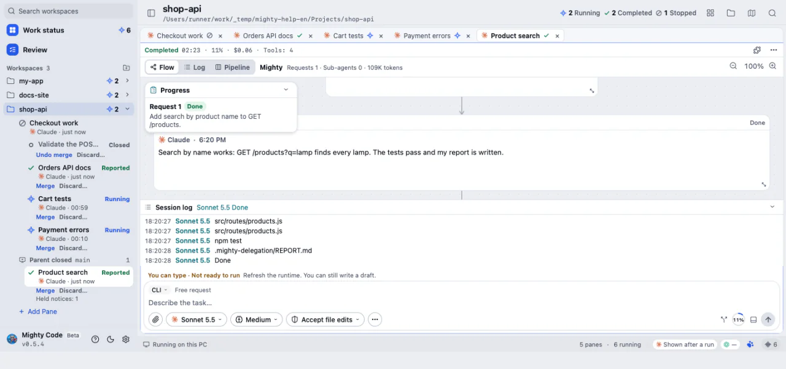
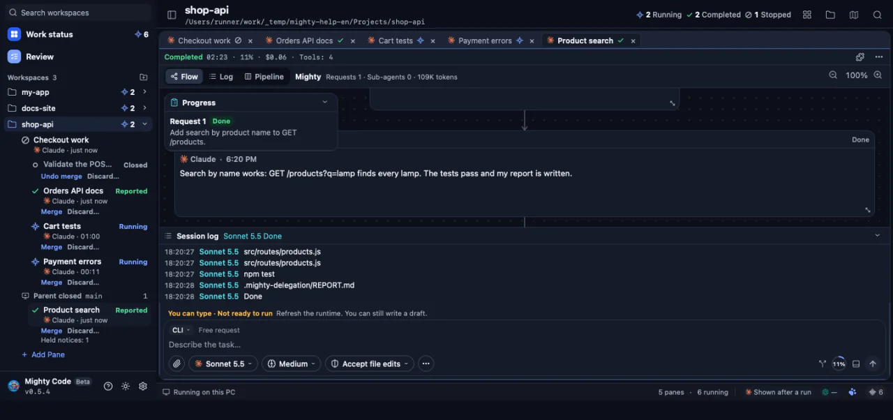
#Notices and held items
When a child Claude handed work to reports or fails to start, the parent gets one notice. It also gets one when a run the parent started (the first task or a follow-up) ends without a report. A notice is only a short pointer starting with [Mighty Code notice …]; the parent reads the report itself with child_status. A child you started yourself sends no notices.
- If the parent is running Claude, the notice goes straight into that run and shows in the parent's Mighty view as an orange Delegation notice block. A notice that reaches the parent after it has finished its answer shows as the same block, and Claude's answer to it is not added to the parent request's result: it opens as its own Delegation notice diagram. A running Codex parent gets it as its next run, once that run finishes normally.
- If the parent finished its last run normally since the app opened and is now idle, the notice starts its next run.
- Otherwise the notice is held: after a stop, after an error, after the app reopens, or while a CLI update runs. Once something is held, new notices are held behind it, so the order is kept.
Held notices show at the top of the queue above the parent's composer, as rows with a pin. These rows have no remove button and, unlike ordinary queued requests, they survive a stop or a relaunch.
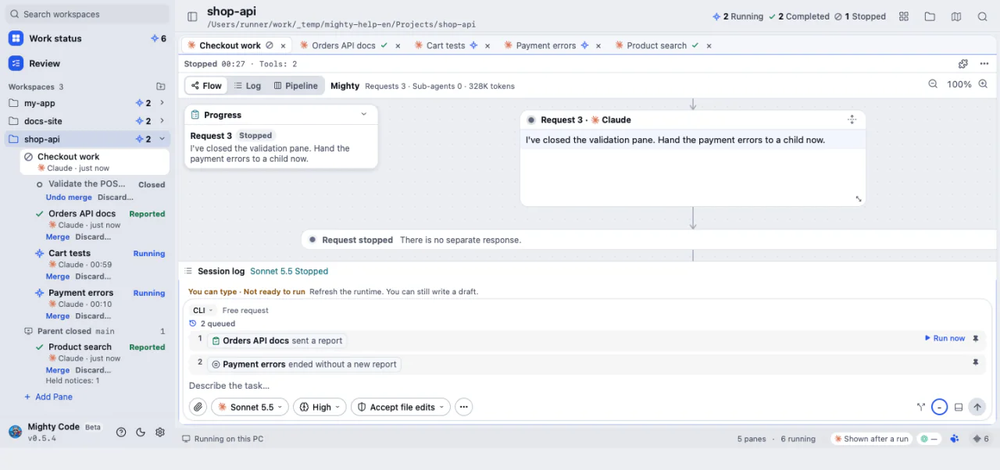
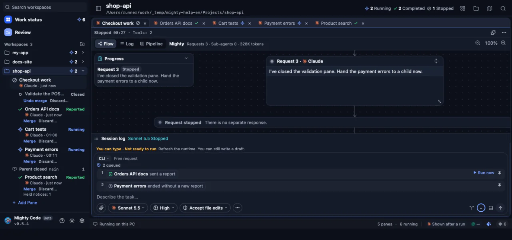
- The next time you send something, all held items go first, oldest first, ahead of your text, in one run.
- The Run now button on the top held row sends all held items now, in one run, to this pane. The other held rows have no button. A Run now that opens a new worktree leaves the held items held for this pane. While items are held, a request that could otherwise go into the running Claude stays greyed out until they are sent.
- Each notice is delivered exactly once, even across a relaunch. Held rows also show in the phone's queue, and a send from the phone delivers them too.
#Follow-ups
The parent can send a child Claude handed work to up to two follow-ups with its follow_up tool. A follow-up reaches the child pane by the same rules as a notice, and each can be up to 48 KiB. You can type straight into the child pane's composer, with no limit on how many times.
#Turn it on or off
macOS It is on unless you turn it off. Switch Mighty Orchestration under Agent panes on the General tab of Settings; it applies from the next run that starts, with no relaunch. The same switch is the defaults key delegation.enabled, so this command in Terminal turns it off too, and defaults delete dev.mightycode.native delegation.enabled turns it back on.
defaults write dev.mightycode.native delegation.enabled -bool falsemacOS Earlier versions were on only when that key was set, and turning it off meant defaults delete …. That now leaves it on, so to keep it off, switch off Mighty Orchestration in Settings.
Windows It is on unless you turn it off. Switch Mighty Orchestration under Agent panes on the General tab of Settings; it applies from the next run that starts, with no relaunch. The same switch is the delegation.enabled value (REG_DWORD) under HKEY_CURRENT_USER\Software\MightyCode: zero is off, and a missing value or any other is on. So this command in Command Prompt or PowerShell turns it off too, and reg delete "HKCU\Software\MightyCode" /v delegation.enabled /f turns it back on.
reg add "HKCU\Software\MightyCode" /v delegation.enabled /t REG_DWORD /d 0 /fWindows Earlier versions were on only when that value was set to 1. A 1 left from then keeps it on.
- Once it is on, every new run in a Claude or Codex pane gets the delegation tools. A run that is already going does not.
- Turned off, only the tools go away, and ⌘Enter queues the request, as Enter does. Existing child panes, their cards and their cleanup keep working.
#Limits and support
| Item | Limit |
|---|---|
| Open children per parent | 3 you start yourself, 3 made by delegate, 4 of compare runs |
| Delegation depth | One level (children cannot make children) |
Follow-ups per child (follow_up) | 2, up to 48 KiB each |
| Task (TASK.md, a request you start yourself) | 64 KiB |
| Free disk needed | 10 GB |
- A child runs its parent's agent, or another one (Codex and Antigravity). Claude and Codex panes can also make children with the delegate tool; Antigravity panes, with no tools, make them only with ⌘Enter, the Run in new worktree button, While running, send to and Run now (Codex and Antigravity).
- The Mac app and the Windows app have it on by default, with a switch in Settings (Turn it on or off). The phone has no new screen, but held rows show in its queue too.
07Terminal and files panes
You can keep terminal and files panes open next to your agent panes.
#Terminal pane
A real terminal that opens in the workspace folder.
- Use Add Terminal Pane (⌘T), or Add Pane → New Terminal.
- Type commands as usual.
If the shell exits, click Restart. Earlier command history is under Previous Command History… in the pane header's … menu, and under Previous command history when you right-click the pane header. Terminals are not reopened after the app quits.
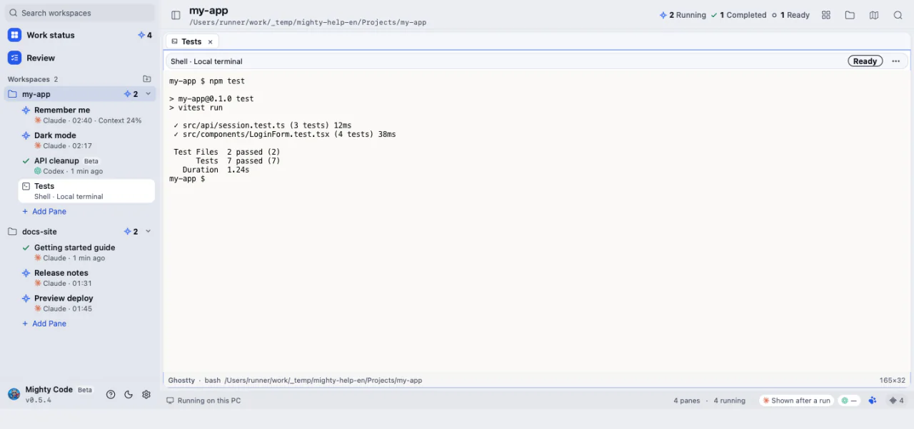
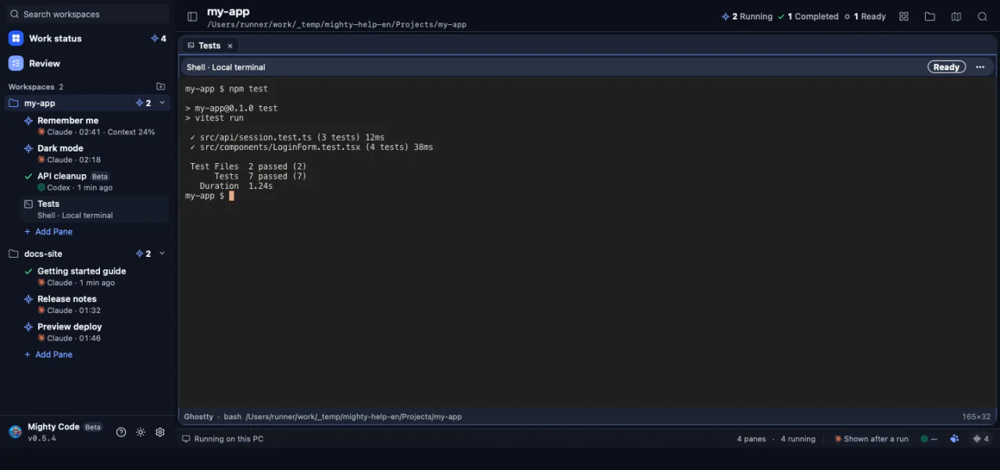
#Notifications and the bell
When a program in a terminal pane, or a CLI the app does not read, sends a notification or rings the bell, its pane is marked. Notifications come as OSC 9 (printf '\e]9;Build done\a'), OSC 777 (notify;title;body) and OSC 99 (kitty's, title and body only). The 9;4;… progress report is not a notification. The text shows without control characters, up to 200 characters, and a pane takes at most one a second.
- While you look at another pane or the app is in the background, the pane's sidebar row and tab get a dot and its border is highlighted. A notification also sends an OS notification; the bell only marks the pane.
- An agent pane waiting for an approval or an answer, and a worktree whose setup failed, are marked the same way. Work status shows how many panes are waiting; click it to go there.
- Press ⇧⌘U (Windows: CtrlShiftU) to go to the pane that asked most recently. Press it again for the next one. Go to Pane Needing Attention in the menu bar's Workspace menu does the same.
- Looking at the pane clears the mark. The pane you are looking at gets neither a mark nor an OS notification.
- To stop them, turn off Terminal notifications in Settings.
#Open ports and pull requests
Every 10 seconds the TCP ports opened by a pane's shell, agent and run actions, and anything running under them, are read and shown in its sidebar row and on its worktree bar. Only the current workspace's panes are read, while the app's window is showing. Click a port on the worktree bar to open localhost in the browser.
A worktree pane also shows its branch's pull request: its number, state (open, draft, merged, closed) and checks (passed, failed, running). It is read again every 2 minutes; click it to open the pull request. When the sidebar is narrow, the ports and pull request show as icons only.
#Agent terminals
When Claude or Codex runs a command you should see (a dev server, a sign-in and so on), a terminal pane of its own opens to the right of the agent pane. You can type into the running command. Closing the pane leaves the command running until the app quits; reopen it with Open Terminal Pane in the pane header.
#Files pane
A read-only pane for browsing the workspace's files. It never changes them.
- Use Open Files Pane (⇧⌘E) or the folder button in the workspace header.
- Pick a file in the list on the left. Find names with Filter names, and move with the arrow keys and Return.
- Read it on the right.
| File | How it shows |
|---|---|
| Source and text | Line numbers and highlighting. Only the first 1 MB of a large file is shown. |
| Markdown | Switch between Preview and Source. A file over 128 KB is shown as source. |
| HTML | Switch between Preview, drawn as a page, and Source. |
| Pictures and PDF | Fit to Pane, Actual Size, Zoom In, Zoom Out. Only the first page of a PDF is shown. A picture over 50 MB is not previewed, and one over 100 megapixels is shown fitted only. |
| Anything else | This file can’t be previewed. Open it with Show in Finder. |
Files outside the workspace are not shown. If files changed, click Refresh.
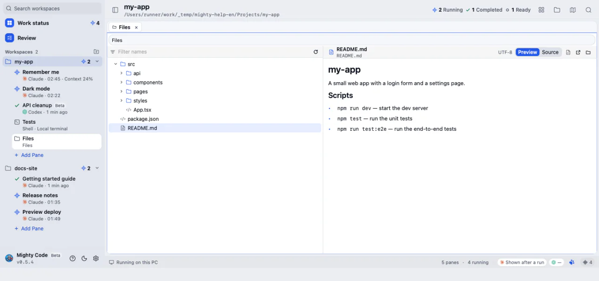
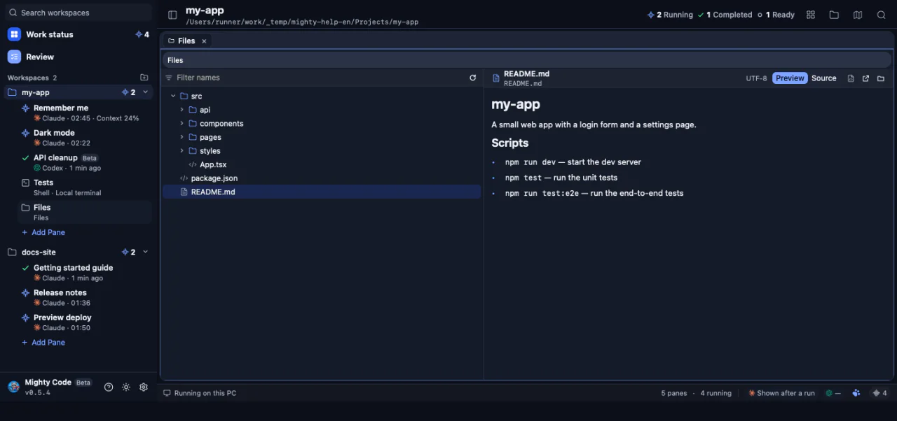
#Open in an editor
To change a file, open it in the editor you use. Where the line is known, the editor goes straight to it.
- Files pane: the Open in Editor button in the preview's header, and the menu you get by right-clicking a file or folder in the list (Open Folder in Editor).
- Conversation and Mighty flow: ⌘-click (Windows: Ctrl-click) a file name to open it at its line in the editor instead of the preview. The button in the preview's header and on each row of a result's file list do the same.
- Changes: in reviewing a request's changes and in a worktree pane's changes, right-click a line to open the file at that line; the button opens the selected file.
- The worktree pane bar's menu and the review queue open the worktree's folder.
Choose the editor with External editor in Settings. Auto uses the first one found of VS Code, Cursor, Zed, the JetBrains IDEs (IntelliJ IDEA, WebStorm, PyCharm and the rest) and Sublime Text. Commands on your login shell's PATH (code, cursor, zed, idea, subl) come first; then, on the Mac, the command inside the app in your Applications folder, and on Windows the program in its usual install folder. System default opens the file in its default app, without the line, and never opens a file that runs code. A path outside the workspace or worktree is not opened.
#Web links
A web link in a reply, and a page an agent opens, open in your default browser.
#Live preview
The globe in an agent pane's header (Live preview) finds the dev servers listening in this workspace. It asks each port of the Main checkout and of each worktree pane's port block, and each address the run actions running there found, and keeps only web servers. Pick one and it opens in the preview of the pane it belongs to; with several panes, open all opens one per pane.
- The preview is a window of a Chrome, Edge, Chromium or Brave installed on this computer, started on its own. It uses a new profile each time, never your usual browser's sign-ins or cookies. Without one, the address opens in your default browser and element picking is not available.
- A pane with an open preview gets a strip over its composer. Press Pick element and click an element in the preview window: its tag, a unique selector, its main styles, some of its text and any React, Vue, Svelte or Angular component hints are attached to the composer, and the app comes back to that pane. Add something like "tighten this button's spacing" and send.
- Screenshot attaches what the preview shows; once you picked an element, just that element. The console errors and failed requests buttons attach the page's errors since it last loaded in one press (they are off when there are none).
- Close preview, or closing the preview window, ends it. When the last preview closes, that browser ends and its profile is removed.
The preview opens only addresses on localhost, 127.0.0.1 or ::1 within that pane's port block or a run action's address. A page that tries to go elsewhere is stopped and the strip says so. A port the pane's programs listen on outside the block is listed in the menu but not opened; start the server on MIGHTY_PORT to open it. The previewed page opens in a program other than the app, so it cannot reach the app. SSH and remote workspaces have no preview yet.
08Settings
Open Settings… (⌘,) or the settings button at the bottom of the sidebar. Pick a tab on the left, and close with Close or Esc. The last tab you viewed is remembered. The tabs are, in order: General, Models, Styles, Remote Connection, Mighty Pet & alerts, Components and About.
#General
Under Display on the General tab you set how the app looks.
- Theme: Dark or Light. The button at the bottom of the sidebar switches it too.
- Language: the app's language. See Change the language.
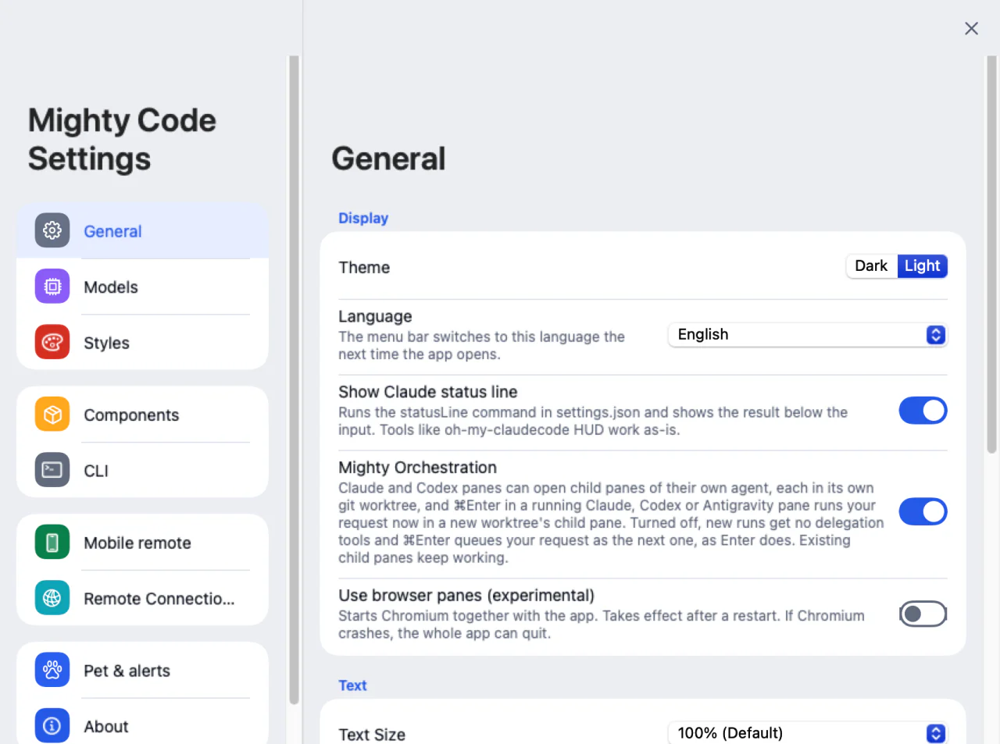
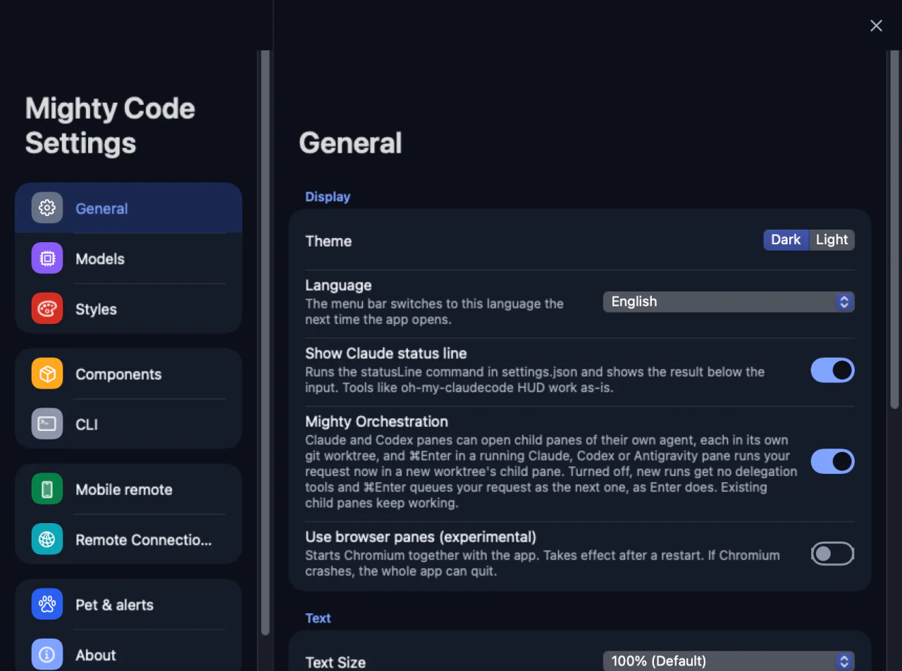
#Text size and font
The Text group on the same tab changes the text of the whole app.
- Text Size: pick from 85% to 150%. Conversations, the composer, the sidebar, Settings and terminals grow and shrink together.
- Interface font: the font of the app itself, such as the sidebar, menus, buttons and Settings. Pick any font installed on this computer; System Default is the system font (the macOS font on a Mac, Segoe UI on Windows).
- Conversation font: the font of agent replies, your own messages, the composer, and the body text of Mighty cards and boards. Same as interface follows the interface font.
- Code and terminal font: the font of code blocks, inline code, tool output and command rows, and terminal panes. Only monospaced fonts are listed: the installed fixed-pitch fonts, plus coding fonts such as JetBrains Mono, D2Coding, Fira Code, Cascadia Code, Cascadia Mono and Consolas when installed. The default at the top uses SF Mono for code and Menlo for terminals on a Mac, and Cascadia Mono (Consolas without it) on Windows. On a Mac, if the chosen font is removed, terminals fall back to Menlo. Open terminals change at once. Paths, versions, counts and other monospaced text in the app itself keep the system monospaced font.
- Under each font, a one-line preview is drawn in that font.
- Reset to Default puts the size and all three fonts back as they were.
On a Mac the View menu's Make Text Bigger (⌘=), Make Text Smaller (⌘-) and Default Text Size (⌘0) change the size too, and on Windows Ctrl= / Ctrl- / Ctrl0 (while the cursor is in a terminal pane on Windows, the terminal takes these keys). A change applies at once and stays after the app is reopened.
#Agent panes
The Agent panes group on the same tab holds the settings for agent panes and a few key tips.
- Show Claude status line: runs the status line command from your Claude settings and shows it under the composer.
- Mighty Orchestration: on by default. Claude panes can open child panes in their own worktrees, and ⌘Enter in a running Claude pane runs your request in a new one. See Mighty Orchestration.
- Ask agents for a progress checklist: on by default. While on, Gemini, Codex, opencode and Hermes get a short instruction to keep a plan (a checklist) while they work, so the progress panel shows real plan steps. The pane's request keeps only what you typed. When off, or when no plan comes, the panel shows what the agent does as steps (Mighty View).
- External editor: what Open in Editor starts. Choose Auto (the first one found), one of the editors found on this computer, or System default. The editors are looked for again each time Settings opens (open in an editor).
- The tips below them: Enter sends and ShiftEnter starts a new line. Drag a tab onto another to merge them, or to an edge to split. The command pane is an interactive terminal that opens your login shell on a Mac, and PowerShell (or cmd if it is missing) on Windows.
- Issue trackers (GitHub, Linear, Jira, GitLab) are connected per workspace, not here: Issue tracker settings… in the workspace's menu in the sidebar. See Start from an issue.
#Background work
With Keep work running after the app closes on in the Background work group on the same tab, agent runs and terminals no longer stop when you quit the app or it restarts for an automatic update. It is on by default.
- While on, the app starts its own executable as a background daemon with no window (
MightyCode --daemon). One runs per data folder, and the agent runs (Claude, Codex, Antigravity, pi, opencode, Hermes) and terminal panes' shells started from then on belong to it. The app still draws the panes, the transcript and the approval cards. - Quitting (the menu's Quit, ⌘Q, the Dock's Quit) while the daemon runs work asks whether to stop the daemon too: choose Quit App Only or Stop Daemon and Quit. With Quit App Only the running agents keep working, and they reattach to their panes when you open the app again. With nothing running the app quits without asking and leaves the daemon running. A restart for an automatic update always keeps it.
- Reopen the app to pick up. An agent pane continues from the output that came while the app was closed, and the approval and question cards that were waiting (pi's dialogs and opencode's and Hermes's questions too) show again, to be answered in that pane. Delegated child panes carry on too, and when one ends its report and worktree flow reach the parent as usual. A terminal pane gets its shell and its scrollback (the last 2 MB) back when it opens. The daemon keeps the last 8 MB of output of each run.
- The status line shows the daemon's PID, how many tasks run and how much output it keeps. Stop Daemon ends the daemon and all the work in it. With nothing running and no app attached, the daemon exits on its own after 10 minutes.
What continues is every agent's runs and terminal panes. Shell command runs and sandboxed runs stop when the app closes. A run that was picked up keeps its Mighty connection (terminal and delegation tools, activity). A tool row or answer that began just before the app closed may show only its end, and actions Antigravity was refused before the app closed do not show on its permission card after the turn. A waiting request too large to hand to the next app is declined as the app closes, and the pane says so. If the daemon ends abnormally, its work ends with it and the panes show as stopped. When an update leaves the daemon and the app on different versions, the app does not attach and asks whether to stop the earlier daemon's work. Only the same user on this computer can connect to the daemon (on a Mac a socket with permissions 0600, on Windows a named pipe only the current user opens, with the token in the data folder's daemon/token).
#Running without a window (server)
You can run all of Mighty Code (the phone link, the remote mirror, the mighty command, schedules and triggers, the background daemon link) without opening its window. This suits a signed-in Mac or PC you use from your phone or from scripts.
mighty server startstarts the app without a window (MightyCode --server, not the daemon's--daemon --headless), waits until it answers and prints its status as JSON. On the Mac there is no Dock icon and no menu bar.- Commands such as
mighty status,mighty agent new,sendandwaitwork as usual.mighty server statusshows whether a window is open, the version, the PID and the uptime. - To get a window, open the app again (on the Mac from the Dock or Finder, on Windows by starting it once more). A second app never runs on the same data folder: the running server opens its window.
mighty server showdoes the same. Closing that window keeps the server running without one, and ⌘Q asks you to choose Close Window Only or Stop Server. mighty server stopquits the app as usual. With Keep work running after the app closes on, the daemon's work keeps running;--stop-allstops it too. SIGTERM on the Mac and closing the console on Windows quit the same way.- Turn on Start without a window at login in Background work to start the server when you log in (on the Mac a LaunchAgent in
~/Library/LaunchAgents, on Windows the current user's Run registry key). It is off at first and takes effect from the next login.
A terminal pane's shell starts when a window first shows that pane (as on a start with a window). Closing the window keeps shells that already run going, and mighty pane read reads them. When something needs you, such as approving a phone, the window opens.
#Models
Phase Models on the Models tab sets which model each phase of work uses, for this whole computer. The phases are Planning, Execution, Review and Subagents.
- Leave a phase at Default and the CLI decides.
- Chosen per pane uses the model picked on the pane's model chip.
- Model names that aren't listed can be added under Registered Names with Add. If the model supports effort, turn on Supports effort levels.
#Styles
The Styles tab manages your list of styles: register styles from files, review them, and allow or block them. If the list looks wrong, click Refresh. Hover over a style's name to see its id, hash and counts. See Styles for details.
#Remote connection
The Remote Connection tab lets other computers (Mac or Windows) and phones use this computer's workspaces, or opens the workspaces of another computer. Under a line of introduction at the top there are three tabs.
- Share This Computer: turn sharing on and off with Start Sharing / Stop Sharing beside the status line at the top. Pick the Workspaces to share, and see the Pairing and Tailscale rows under How others connect. See Share this computer.
- Connect to Another Computer: connect to another computer with a pairing link or a Tailscale address, and manage your connections in the Connected Computers list below. See Connect to another computer.
- Phone: pair a phone. See Phone below.
Windows Under the Share This Computer and Phone tabs there is a Windows Firewall group. See Windows Firewall.
#Phone
The Remote Connection › Phone tab lets phones connect, pairs a phone with a QR code, and manages connected devices. There is no relay to set up. See Phone remote. The folded Advanced group holds the Relay address field for a relay you run yourself (with its Apply button and the default address under it) and the Allow legacy apps (no device token) switch. It starts open when either was changed from its default.
Screen view & control is paused for now, so Settings has nothing for it (Screen view).
#Mighty Pet & alerts
The Mighty Pet & alerts tab sets up Mighty Pet and the completion notification.
- Show Mighty Pet: Mighty Pet, a raccoon that walks on your screen. Drag it to move it; click it to open or close its bubble.
- Show the request and current task in Mighty Pet's bubble: the bubble shows the request, the current step and the time taken. You can also answer approvals there (Allow once / Deny). The symbol button on an approval, question or plan bubble opens that pane, where you see the whole request or type your own answer. The arrow at the right end of the bubble's heading folds it to the heading (the pane, its state and the time taken) and the pager, and opens it again; the fold stays the next time the app opens, and a press elsewhere on the heading still opens the pane.
- Over the bubble sits the Progress card of that pane's latest request: the same as the pane's progress panel, with the request number, the steps done, its state, every step and piece of background work, each with its time. With more than eight lines the card's list scrolls inside it, opening on the current step. Click the card's header to fold it to the header and again to unfold it; it stays folded the next time the app opens. Click a step line to open that pane. A request with no steps and no background work has no card, and neither does a bubble that shows an approval, question or plan, or a closed bubble.
- Pet: choose the pet. Add more with Import a Codex pet…, read the pets again with Reload, and put Mighty Pet and its bubble size back where they started with Reset position and bubble size.
- Reduce Mighty Pet animation: less movement.
- Mac notification when a task finishes (Windows notifications when tasks finish on Windows): a Mac notification when a request finishes successfully. Clicking it opens that pane. The notification never contains the request or its result.
- Terminal notifications: marks a pane when its terminal or CLI sends a notification or rings the bell. An OS notification is sent only while the app is in the background or you are looking at another pane. On at first (Notifications and the bell).
- Under it, the system's notification permission is shown, and Notification settings opens the system's notification settings.

#Automation and the command line
The Automation box of the Mighty Pet & alerts tab sets where to tell when an agent pane's state changes. Requests, file contents and tokens are never sent anywhere.
- States to announce: choose from Started, Waiting for approval or answer, Done, Failed and Stopped. Waiting, done and failed are on at first. The webhooks and the status command both follow them.
- Webhooks: up to five Slack, Discord or other HTTPS addresses. They are kept in the system keychain (Credential Manager on Windows) and shown only in part. A post carries the title, the state and the workspace and pane names, nothing else. Test sends a test message. The same state of the same pane posts once in 5 seconds, each address at most six times a minute, and a server error is tried once more.
- Status command: runs this command in the pane's folder when it reaches a chosen state. The state comes in environment variables, never arguments:
MIGHTY_EVENT,MIGHTY_STATE,MIGHTY_PREVIOUS_STATE,MIGHTY_REASON,MIGHTY_PANE_ID,MIGHTY_PANE_TITLE,MIGHTY_AGENT,MIGHTY_WORKSPACE_ID,MIGHTY_WORKSPACE_NAME,MIGHTY_WORKSPACE_PATH. It is stopped after 20 seconds. - Command-line control: whether the
mightycommand can control the running app. New token replaces the token and closes the connections that were open.
For a status command per repository, write it in .mighty.local.yaml. Like the other settings there it runs only once approved, and the shared .mighty.yaml may not hold one.
hooks:
command: ./scripts/notify.sh
on: [blocked, done, failed] # started, blocked, done, failed, stopped
timeoutSeconds: 20 # 1-300#The mighty command
On the Mac, Install shell command 'mighty' in the Workspace menu installs ~/.local/bin/mighty. mighty, mighty folder and mighty "request" open a folder as before; a folder named like a command opens as mighty ./status. The commands below talk to the running app and answer in JSON. If you installed it before 0.6.0, install it once more.
On Windows the mighty command is bin\mighty.exe in the install folder. The setup program's "Add the mighty command to PATH" (on by default) puts that folder on your user PATH. If the app only ever updated itself, press Add to PATH under Command-line control in the Mighty Pet & alerts tab. Then use the same commands as on the Mac in a newly opened cmd, PowerShell or Windows Terminal: arguments, pipes (| jq, > out.json, standard input with -), exit codes and Ctrl+C pass through as they are. Opening a folder (mighty folder) is Mac-only for now. Calling the app directly, as in MightyCode.exe --cli status, also shows its output in the console, but the shell does not wait for it and it can land after the prompt, so use mighty.
mighty status # workspaces, panes, state, attention, worktree, port block
mighty workspace list
mighty pane list --workspace <id>
mighty pane read <pane> --lines 100
mighty agent new --workspace <id> --agent codex --worktree
mighty agent send <pane> "fix the tests"
mighty agent wait <pane> --until done --timeout 600
mighty pane wait-output <pane> --regex "passed|failed" --timeout 300
mighty events --type pane.state
mighty server start # start without a window (status, show, stop [--stop-all])
mighty bot list # bots and their schedules and triggers (bot new|update|pause|resume|run)
mighty event emit release.done --data '{"version":"0.6.3"}' # run the triggers waiting for this event- Pane ids are the app's own and never change. States are
idle,running,blocked(waiting for an approval or an answer),done,failedandstopped. agent sendis the same as sending from the composer: a busy pane queues it. Give-to read the text from standard input.agent waitandpane wait-outputwake only when a state or output changes.pane wait-outputlooks at each new line after the wait began.- Lines that look like secrets are hidden in
pane readand in output.eventswrites one event per line (pane.state,attention, andrun.completedwith its cost). - Exit codes: 0 ok, 1 error, 2 timeout.
- Only the same user on this computer can connect (a 0600 socket on the Mac, a named pipe only the current user opens on Windows), and every request needs the token in the data folder's
control/token. Reach an app started with--profilewithmighty --profile <folder> status. - On Windows, when the app runs as administrator,
mightyreaches it only from a terminal opened as administrator too. A normal terminal is told why and ends with exit code 1 (otherwise any program of yours could drive the agents as administrator). An administrator terminal also reaches a normal app. Another user account cannot connect, even an administrator's.
#Schedules and triggers
The Schedules and triggers box in the Mighty Pet & alerts tab starts agent work at set times or on events. Pick a workspace to see its schedules and triggers, each with its next run and last result. At the top are today's spend, the daily budget and today's automation digest.
- Schedules: a 5-field cron line (
0 9 * * 1-5) or an RRULE subset (FREQ=DAILY|WEEKLY|HOURLY,BYHOUR,BYMINUTE,BYDAY). They follow this computer's time zone; a time skipped by daylight saving runs once right after the change, and a time that happens twice runs once, the first time. - Triggers: GitHub (PR opened, review requested, CI failed, release published, PR merged, issue opened; the repository may be named as
owner/name, and events filtered by author, branch and label,!before an author leaving that one out), Linear (an issue moving into a chosen state), a webhook, and standing orders (a shell command run every few minutes that wakes the agent only when its output changes, up to a daily limit). GitHub is checked throughghwith your own sign-in, at most every 5 minutes, and less often while nothing changes or you are offline. Linear uses the workspace's connected Linear. - Events: takes the events sent with
mighty event emit <name> --data '{"version":"0.6.3"}'(a*at the end, as inrelease.*, takes every event so begun).scripts/release.pysendsrelease.donewhen a release is out. - Bot chains: runs when another bot's request (
@name, or@*for any bot) ends or fails. A bot never wakes itself, and a chain goes two hand-offs at most. - Prompt variables:
{{pr.title}},{{pr.url}},{{pr.author}},{{ci.url}},{{release.tag}},{{issue.title}},{{data.version}}(an event's or webhook's JSON),{{bot.handle}}and{{bot.answer}}in a prompt become their values; a missing one is empty. - What runs: the prompt goes to a new pane (in a worktree if you like) or, with Wake an existing pane (heartbeat) on, into the pane of that name in the same conversation. You choose the agent and model.
- Budget: when today's spend plus this run's estimated cost would pass the daily budget, the run does not start and is recorded as skipped.
- Notifications: when automated work waits for an approval or an answer, your phone and the OS are told at once. Everything else goes into the run history and today's digest. Every run is also an
automation.fired,automation.skipped,automation.blockedorautomation.finishedevent inmighty events; turn on Automation results under States to announce and webhooks and the status command follow them too. - Run history: each run keeps its time, state, cost (from the usage ledger), result link (a PR the pane opened) and error. Retry runs it again and Continue opens its pane.
While the app is closed: turn on Run schedules while the app is closed (off by default) and the computer starts Mighty Code without a window at the next scheduled time (a LaunchAgent on the Mac, Task Scheduler on Windows, under your own account without admin rights). The app handles the missed schedules, and once its runs and any waiting approvals or questions are done and nothing happens for 5 minutes, it registers the next schedule and quits by itself. If the computer was asleep or off, it starts after it wakes. If the app is already open, the open app runs the schedule. The box shows whether the wake-up is registered, the next wake-up time and how the last one went; Register again now registers it again. With Start without a window at login on, that server keeps running.
Triggers (GitHub, Linear, standing checks, webhooks) work only while the app runs; a server started without a window counts. The computer wakes the app for schedules only, so to use triggers while the app is closed, turn on Start without a window at login. With Run schedules while the app is closed off, schedules stop too when you quit (with background work on, work already running continues but nothing new starts), and a schedule missed while the app was closed runs once, for its latest time, the next time the app opens. Turn on Skip missed runs to record it as skipped instead.
Incoming webhooks: with Turn on the webhook listener on, the app listens on 127.0.0.1:<port> only (off by default). Each webhook trigger has its own address (http://127.0.0.1:<port>/hooks/<id>) and secret, kept in the system keychain. Sign the request body with the secret (HMAC-SHA256) and send it as X-Mighty-Signature-256: sha256=<hex> (GitHub's X-Hub-Signature-256 works too). Bodies over 256 KB, wrong signatures and repeated delivery IDs (X-Mighty-Delivery) are dropped. To receive from outside (GitHub, other services), put your own tunnel such as ngrok or Cloudflare Tunnel in front; the app never opens one.
Schedules and triggers shared with the repository go in .mighty.yaml. Like its other keys they run only once approved; the box shows them read-only, with an Approve button until then.
schedules:
deps-check:
cron: "0 9 * * 1-5" # or rrule: FREQ=DAILY;BYHOUR=9
prompt: Check the dependencies and open a PR if needed.
agent: claude # codex, gemini, pi, opencode, hermes
model: sonnet
worktree: true
catchUp: once # once (default) or skip
night-watch:
rrule: FREQ=DAILY;BYHOUR=22
mode: heartbeat
pane: Night watch
prompt: Keep going.
triggers:
fix-ci:
github: [ci_failed] # pr_opened, review_requested, ci_failed
prompt: Fix the CI failure.
worktree: true
ready-issues:
linear: [Ready]
prompt: Start this issue.
deploy:
webhook: true
prompt: Check the deploy.
flaky-tests:
standing: npm test 2>&1 | tail -5
everyMinutes: 30 # 5-1440
dailyCap: 3 # 1-50
prompt: The test results changed. Find the cause and fix it.#Components
The Components tab shows whether everything the app needs is ready, and is where you install, sign in to and update the agent CLIs. Only the items for this computer's system are shown.
The top line has a view picker and two buttons.
- All / Needs attention: with Needs attention, only the rows that need something are shown: an item not installed, not signed in, with an update, failed or needing a check. The number beside it is how many.
- Refresh (↻, Refresh): reads PATH again and checks every item again.
- Update All: updates every installed agent CLI now, each the way it was installed (npm, Homebrew and so on).
The list has three groups: Agent CLIs (Claude, Codex, Antigravity, pi, opencode and Hermes), Tools (Git (on a Mac, the Xcode command line tools), Homebrew (Mac), Node.js, Bun (Mac), uv, Tailscale, gh and glab) and Claude plugins (ouroboros, omc and gstack (Mac)). Each item is one row: a disclosure mark (▸), its name, its version and, for an agent CLI, the signed-in account. On the right are its status and the one button it needs most.
- Status: Installed, Ready (an agent CLI installed and signed in), Update available, Not signed in, Not installed, Needs attention, Installing, Failed.
- Button: Install when it is missing (Open download page for what only a download page installs), Log in when it is not signed in, Update when it is out of date. A row with nothing to fix has no button.
Click a row to open it in place (▾). The opened row shows the details (which version is needed, the last update's result, the account, why it needs a check, what the item is for) and every button of the item, for an agent CLI Change account, Log out, Refresh status and so on. Click it again to close it. The rows you opened stay open until you quit the app.
Under the list, the Automatic updates box has three switches and the last run's time. Point at a switch to see what it does.
- CLIs: checks for agent CLI updates when the app opens, and every 6 hours.
- Plugins: updates Claude and Codex plugins too.
- Sign in again: when a sign-in expires, signs in again and resends the failed request.
Install installs only that item and the prerequisites it is missing. Every command is shown in one confirmation first.
- macOS It runs in a terminal pane in the app, or in Terminal.app when no local workspace is open.
- Windows It runs in a separate PowerShell window.
Whether the item got installed is decided by checking again afterwards. The Required tools window that opens on first run is a checklist: pick what is missing and click Install selected.
At the bottom of the same tab is the My Toolkit box: a list of tools you gather yourself, empty at first. Add a tool with Add; each entry has Approve and Remove buttons. Only approved tools can be installed. Every command is shown before anything is installed, and you get a Confirm Installation step. You can Export or Import the list.
#Sign in
You sign in to each agent CLI on its row. A CLI that is not signed in shows Log in right on its row; its other account buttons are in the opened row.
- Click Log in. For Claude, choose Log in with Claude subscription or Log in with Anthropic Console (API billing).
- The CLI's sign-in starts in a terminal. Approve it in the browser.
- macOS A terminal pane opens in the app. It opens in a local workspace, so at least one workspace must be open.
- Windows A separate console window opens. No workspace is needed.
- When you're signed in, the row's status changes. If it doesn't, open the row and click Refresh status. A changed account is used from the next request.
To switch accounts open the row and click Change account; to sign out click Log out. Turn on Sign in again in the Automatic updates box to sign in again automatically when the sign-in drops and resend the failed request.
The opened Claude row also has Reset and reload models and Bedrock setup. Bedrock setup opens the Claude CLI's AWS Bedrock setup wizard in a terminal, the same way as a sign-in; refresh the status when you are done. Windows Windows has one more button, Reset Claude Bedrock settings, which backs up your Claude user settings and then deletes the Bedrock key and the Bedrock model settings.
#Updates
The agent CLIs are updated separately from the app.
- Update All: updates every installed agent CLI now. Update on an out-of-date CLI's row runs the CLI update too.
- CLIs in the Automatic updates box: checks when the app opens, and every 6 hours.
- Plugins: updates Claude and Codex plugins too.
Each CLI is updated the way it was installed (npm, Homebrew and so on). The last update's result for each CLI shows when you open its row, and the plugin updates' results under the Claude plugins group.
#About
The About tab updates the app and shows where its data is kept.
- App Update: the current version, the automatic-update switch, the state and its button, and the release notes. See Updates. The folded Advanced group holds the Update address field and a note about signatures; it is open by itself when an address was entered.
- App Info: the Open Help button and the State storage location. The State storage location is the folder with the app's settings and history; open it with Show in Finder on a Mac or Show in File Explorer on Windows.
#Diagnostics bundle
When you report a bug, make a diagnostics bundle with the Export diagnostics bundle… button in the Diagnostics box and attach it. Choose where to save it and one zip file is made; once it is done, its name and a button that shows it in Finder (Explorer on Windows) appear.
- What goes in: the app's logs (the last 2 MB each of the app's log and its previous file, the background daemon, the start-up stages and the performance log), the app's version, the installed CLI versions, the OS and architecture, a settings summary (which features are on and how many workspaces and panes there are), and
manifest.json, which lists what went in. - What is taken out: API keys, tokens, passwords, pairing keys, Authorization headers, user names and passwords in addresses, e-mail addresses and user names in paths (the home folder becomes
~).manifest.jsonsays how many values were taken out of each file. - What never goes in: conversations, requests and replies, file contents, workspace and pane names, paths and environment variables.
- The app sends the bundle nowhere. You can open the zip and look before you send it.
09Phone remote
With the phone app you can follow and drive Mighty Code on your Mac or Windows PC while you're away: check on tasks, send requests, and answer approvals and questions.
The computer and the phone connect through a relay server. The default relay is built into the app, so there is nothing to set up. Everything is encrypted end to end, so the relay can't read it. You don't need to open router ports or use a VPN. If you use Tailscale, the phone can also connect directly without the relay.
#Get the phone app
Download the Android app (APK) from the download page and install it.
#Pair your phone
On the computer:
- Open Settings… → Remote Connection → the Phone tab.
- Turn on Allow phone to connect to this Mac. On Windows it is Allow phone to connect to this PC. Its state shows beside it; if it stays stuck connecting to the relay, click Reconnect.
- Under Pair a phone, a QR code appears beside three steps.
On the phone:
- Open the phone app and tap + Add Host on the Hosts tab. The first time, a connection guide shows first.
- Scan the computer's QR code with Scan QR. If you can't use the camera, click Copy Pairing Link on the computer, send yourself the link and paste it in Paste link. The link carries the key, so it is copied as a secret and cleared from the clipboard after a minute.
- Tap Connect. The computer shows a "new device" window and a notification, and the phone asks you to allow it on the computer. Click Allow on the computer and the phone connects and appears under Connected devices. Without an answer in 60 seconds, or with Refuse (the default button), it does not connect. Allow only a phone you are pairing yourself.
Next to the QR code are the Host ID and the Pairing key. The key shows only when you click its show button. The QR code, the link and the key are a one-time pairing code: it keeps working while it is on screen, expires 10 minutes after you close the screen, and is replaced once a device connects or is refused. Devices already paired connect with their device token and are not asked again.
Connection offers two ways to connect.
- Relay (default): the default. Nothing to do.
- Connect directly over Tailscale: set the port and apply it; its state shows below. See Connect directly over Tailscale.
Paired phones and paired computers are listed one per row under Connected devices; a computer shows a computer icon (kept after the app restarts). The list is shown whenever there is a paired device, even with the phone connection switch off. When you stop using a device, click Unpair on its row. Only that device is unpaired; your other phones and computers stay connected. The pairing code on screen is renewed at the same time. Pairing a phone again with the QR code asks for your approval like a new device (it says it replaces one), and once allowed its old pairing stops working.
Regenerate Key unpairs every paired phone and every paired computer and makes this computer's relay ID and encryption key anew, so every device has to pair again with a new QR code or link. Use it if someone connected without your permission or you lost a device.
#Workspaces the phone sees
In the Phone tab, Workspaces the phone sees chooses which of this computer's workspaces a paired phone sees.
- All local workspaces: the default. The phone sees every workspace on this computer and opens its panes, files (a file like
.envtoo) and runs. - Shared workspaces only: the phone sees only the workspaces Share This Computer is sharing right now. With sharing off it sees no workspace at all; it cannot open another workspace's panes, files or work map or send to them, and gets no notifications from their panes.
A change applies from the phone's next request; the connection stays up.
#Connect directly over Tailscale
When the Mac and the phone are on the same Tailscale network, the phone connects straight to the Mac without the relay. Pairing and encryption stay the same, and when the Mac can't be reached directly the phone uses the relay on its own.
- Turn on Tailscale on the Mac and the phone and sign in with the same account.
- In the Phone tab on the computer, check that Connect directly over Tailscale is on (it is by default). When the line below it shows Tailscale addresses, you're set. If it says Tailscale not found, Tailscale is off on the Mac.
- Phones you already paired don't need pairing again. The Mac tells them its addresses the next time they connect.
On the phone, the Mac's card in the Hosts tab shows Tailscale direct or Relay.
It works the same with a Windows PC, which needs one Windows Firewall rule so the connection isn't blocked. In the Windows Firewall group under the Phone tab, click Add firewall rule and allow Windows' administrator prompt. The rule lets only connections from Tailscale addresses reach this app. Once the rule exists, Update firewall rule fits it to the ports in use now and Delete firewall rule removes it. Turning the direct connection or phone access off removes the rule too (it stays while this computer is sharing workspaces, which still need its port), and Windows asks for administrator approval again. It is one rule that opens both the phone's direct port and the workspace-sharing port, so a change on the Share This Computer tab changes the same rule (Windows Firewall).
#What you can do on the phone
The phone app has three tabs.
| Tab | What it shows |
|---|---|
| Overview | Work status: the counts of running, waiting and finished work across every paired computer, then each computer's workspaces and sessions in turn. Open a session to read the conversation and send requests. |
| Alerts | Approvals and questions waiting for you, and finished work |
| Hosts | Your paired computers (Mac or Windows) and whether they are connected |
Inside a session you can send and stop requests, change the model, permission and thinking effort, run slash commands, attach files and browse the workspace's files (read-only).
While a session's task runs, the send button becomes Add to queue, and what you send waits in the queue as that pane's next request. Nothing you send goes into the running task.
Queued requests show a Run now button when the computer's app is new enough. It runs the request in a new worktree child pane on the computer, or in this pane, as the computer decides. A greyed-out one says why when you tap it. The phone does not pick the agent.
When the computer's app supports editing the queue, each request also shows Edit and ↑ ↓ buttons. Edit edits the words in place and Save saves them (empty words are not saved). ↑ and ↓ change the order, and the computer runs the queue in that order. Rows the computer holds for the pane cannot be edited, moved or removed.
In the Flow view a finished request shows the request and its Final result at once. Its steps are folded into one row that opens when you tap it. A request still running shows every step.
When the result names files in the workspace, a Files in result list hangs below the Final result. It holds the same files as the list beside the result in the desktop app, each with its folder dimmed under its name. A long list shows its first five files and opens the rest with the button below them. Tap a file to open it in the workspace file view. The list comes only with a successful result, and it does not show for a workspace on another computer or with an older desktop app that does not send it. When the request changed that source or Markdown file, Changes | Full File chips appear at the top and it opens on Changes: only the changed lines, with old and new line numbers, added lines on green and removed lines on red. This view comes only from a desktop app that supports it.
The Pipeline view shows the pipeline the desktop app sends as boards, one at a time. In a pane without a style each request is a board; in a pane with a style each pipeline is a board: a run of requests whose step never goes back. ◀ and ▶ at the top move between boards, and tapping the place in the middle ("Request 3 / 7") opens the list to pick one. When a new board arrives while you read an older one, a New request or New pipeline badge appears; tap it to go to the newest board. Below them are the board's status and its steps as a row of chips: finished steps are green, the current step is in the accent colour and the steps still to come are grey, each with its card count. Each step has its own column; swipe sideways or tap a chip to move between them, and the board opens on its current step. A pane without a style has the columns Request → Run → Result, with the sub-agents' cards after the Run card. In a pane with a style each column holds its step's requests and their sub-agents, and a finished request folds to one card that opens when you tap it. A running card's border pulses. This view needs the desktop app (Mac or Windows) on the same version as the phone app or newer; with an older one the view asks you to update the desktop app.
A child pane made in the desktop app (Mac and Windows) by Mighty Orchestration is listed one step in under its parent pane, with its state (Reported, Merged and so on) on the right. An older app doesn't send this, so its child panes are listed like any other pane. Merging or discarding a child can't be done from the phone; it is done in the desktop app (Mac or Windows). Only the children of a compare run can be merged or discarded from the phone, in the compare view described below. Gemini panes of a desktop app that runs Antigravity (Mac 0.4.23 or later, Windows 0.4.28 or later) are shown as Antigravity (Beta); those of an older app are shown as Gemini.
A pane that works in its own worktree shows the worktree bar at the top of its screen. Next to PORT you see the port range given to that worktree (for example :41010–41019), and under it the run actions running there with their dev-server addresses. An address is the computer's own, so tapping it only copies it. With a computer on Mighty Code 0.6.0 or later, Start and Stop start and stop those run actions from the phone. Only the run actions of a .mighty.yaml you approved on the computer are offered (the phone sends a name, never a command), nothing runs in an SSH or remote workspace, and each start or stop leaves a line in the pane on the computer. When the computer is on Tailscale and the dev server also listens on its Tailscale address (for example a server started with --host 0.0.0.0), the address shows the Tailscale one and tapping it opens the server in the phone's browser; the phone has to be on the same Tailscale network. A server that listens only on localhost is never exposed: its address is copied as before. Tap Checks to see, read-only, what the desktop app's checks tab shows: uncommitted changes, the PR's state, CI checks, unresolved review threads and remaining to-dos. When you merge and these checks still warn about something, the phone lists it and asks once more; tap Merge Anyway to merge.
A pane that started a compare run shows a compare card under the bar. Tap it to open Comparison: each child's agent and model, state, changed files, time, cost and test result. You can Merge a child that has reported, or Discard a child. After a merge the phone asks whether to discard the other children at once (Discard the rest).
A pane the desktop app marks as waiting for you (a terminal notification or bell, an approval or question card, a failed setup) gets an orange dot after its title in the session list, and the Overview tab shows how many such panes there are in a line under its counts. Tap the line to open the pane marked last. A forked pane shows a link to the pane it came from, and a pane running in the sandbox shows a Sandbox badge and the last thing the sandbox blocked. These marks need a desktop app that sends them (0.6.0 or later).
#Approvals and questions
When an agent asks for approval or asks a question, the Alerts tab shows a count.
- Permission requests: tap Allow or Deny.
- Antigravity permission card: each declined action shows its kind and its command, address or path. Choose Allow once, Always allow or Decline; allowing continues the same conversation (Antigravity's permission card). A card with only actions no rule can allow offers just Decline and tells you to change the permission mode. When a command chains, pipes, redirects or may delete data, Always allow is not shown. If the host cannot take your answer, the card stays with the reason. An older phone app that does not know the card shows it as an ordinary permission request.
- Questions: pick your answers and tap Send answers.
- Plan cards: answer with the same buttons as on the Mac (Approve and run (auto edit), Request changes and so on).
#Notifications
Your phone gets a notification when a run on a connected computer (Mac or Windows) finishes or fails, and when an agent needs you: a permission request, a question, a plan to approve or an expired sign-in. Only the Android app gets them for now.
- The first time you open the app (Android 13 or later) it asks once whether to allow notifications. To turn kinds off, open Settings on the Hosts tab and change the Notifications switches. If notifications for the app are off in the system settings, Settings tells you so.
- On a permission request you can tap Allow or Deny right in the notification. An Antigravity card offers Allow once, Always allow and Decline. A card that can only be allowed once, such as a chained command or one that can delete data, has no Always allow. Question and plan notifications have no buttons; tap them and answer in the app. An Antigravity card with nothing that can be allowed also comes without buttons; tap it and answer in the app.
- The buttons work only after you unlock the phone. If you tap one while it is locked, the notification changes to "Unlock your phone, then tap again." and keeps its buttons. If you already answered on the computer it changes to Already handled, and if the answer could not be sent it changes to Couldn't answer. Tap to open.. In that last case, tap the notification and answer in the app.
- You can turn notifications off for each workspace. Tap the bell next to a workspace's name to turn its notifications off; the bell is then struck through. Tap it again to turn them back on. Every workspace starts on, and the choice is for this phone only, so other phones connected to the same computer still get them. A notification can still arrive if the app has not seen that workspace yet, or has not had the computer's list for over a day.
- Tapping a notification opens that session. You get no notifications about a session while it is on your phone's screen.
- Notifications are private on the lock screen: if you chose to hide sensitive content there, the title and text are hidden.
- The computer encrypts each notification so only this phone can read it; the relay and Google can't. Notifications go through the relay, so over a direct Tailscale connection they still arrive, as long as the computer can reach the internet.
- Both the desktop app and the phone app need a version with this feature. A desktop app without it sends no notifications. If you paired with a very old phone app, pair again.
- The default relay moved to a new server in 0.4.58. If a phone paired before then gets no notifications, pair it again once with the QR code.
- While phone access is off on the computer it sends nothing, and when you turn it back on it does not report what happened in the meantime.
When the app crashes it sends the developers only where it stopped, never conversations, commands or paths. You can turn Send crash reports off in Settings.
#Screen view
Watching a computer's screen from the phone and, if you allow it, controlling it is a Beta feature.
Since 0.4.58, screen view & control is paused (on the Mac and on Windows). The phone offers no screen button, and Settings on the computer has nothing for screen view. The access you set for each phone and the permissions you granted are kept and come back when it returns.
#Desktop app update
When the Mac or Windows app has a new version, a Desktop app update strip appears above that computer's session list on the phone. Press Update and the computer downloads the new version, installs it and restarts the app. You do not need to be at the computer.
- When requests are running, it first tells you how many will stop and goes on only once you confirm.
- The connection drops for a moment while the app restarts and comes back by itself.
- The computer downloads the update from the official address and installs it only after checking its signature. The phone only tells it to start.
- This works with computers on 0.4.55 or later.
#Change the relay address
The default relay (Cloudflare) is built into the app, so usually there is nothing to change. To use another relay, open the folded Advanced group at the bottom of the Phone tab.
- Relay address: enter the relay's address (
wss://…) and click Apply. Leave it empty to use the default relay. - Allow legacy apps (no device token): off by default. Turned on (after a warning), very old phone apps without a device token connect with the Key for older apps shown below it alone, without approval. Anyone who knows that key can control this computer remotely, so turn it on only when you need it and off again afterwards. The current app does not need it.
10Remote connection
Link two computers' Mighty Code (Mac or Windows), and one computer can open the other's workspaces and run Claude, Codex, Antigravity and commands on that computer. Files and CLI sign-ins stay where the work runs; no project files are copied or synced.
There are two ways to link them.
- Pairing: pair once, as a phone does, and connect through the Mighty relay. No Tailscale is needed. See Connect by pairing.
- Tailscale: connect straight to the other computer with its address and key inside the same Tailscale network (tailnet). Remote panes that run this computer's panes there, and large attachments, need Tailscale.
When the other computer can't run Mighty Code, work in its folders as an SSH machine.
Everything happens in Settings… → the Remote Connection tab. A line of introduction sits at the top, with the Share This Computer | Connect to Another Computer | Phone tabs below it. The inner tab you chose is remembered only while the app runs. For phones, see Phone remote.
#Before you start
- Install Mighty Code on both computers.
- On the computer that will do the work (the host), install and sign in to the CLIs you will use. Remote runs use the host's CLIs and accounts.
- To connect over Tailscale, install Tailscale on both computers and sign both into the same tailnet. No router port forwarding and no Tailscale Serve or Funnel are needed. Just make sure your tailnet policy lets the two devices reach each other.
#Share this computer
On the host computer:
- Open Settings… → Remote Connection → the Share This Computer tab.
- Under Workspaces to share, check the local workspaces to share.
- Under How others connect, get the methods you want ready (see below).
- Press Start Sharing beside the status line at the top. While sharing, the Shared workspaces list takes its place.
How others connect has one row per method.
- Pairing: the Accept paired computers switch and the relay's state; turning the switch on brings up the Copy Pairing Link button. The link carries a pairing code for computers only (not the phone's QR code), so it is copied as a secret and cleared from the clipboard after a minute. In a run that cannot use the relay, the switch is greyed out and says why. See Connect by pairing.
- Tailscale: when this computer has no Tailscale address, a line says so with an Install in Components button that opens the Components tab. Before sharing, there is a Port field; leave it as it is (43137) unless you need another. While sharing, this computer's Tailscale addresses and the Connection key appear. Show the key, copy it with Copy, and give it to the other computer.
Without Tailscale, sharing still starts when Accept paired computers is on; then only paired computers connect, through the relay.
While sharing, the Allow full access and commands from remote switch appears. While it is off (the default), connected computers cannot use remote command panes or run agents with full access; such requests are refused before they run, and the pane says why. It turns off again whenever sharing starts.
While this switch is off, connected computers also cannot use an agent pane that the sharing computer cannot confine to the shared folder, whatever its permission mode: on a Mac, Antigravity, pi, opencode and Hermes (none of them runs in a sandbox); on Windows, every agent other than Claude, Codex included (Windows cannot confine Codex in a sandbox the way a Mac does). Codex on a Mac runs in its own sandbox, and Claude panes on either computer still run and ask for permission as usual. In such a pane, allowing a tool, answering a question and approving a plan need the switch too, not only sending.
Tailscale sharing accepts connections on this computer's Tailscale addresses only. Sharing is always off when the app starts. Stop Sharing stops the remote runs and revokes the key; sharing again gives a new key to pass on.
A connected device can run agents and commands in the shared workspaces. Depending on the permission mode, it may reach outside the folder with the host user's rights. A device with the Tailscale connection key connects straight away, so give the key only to devices you trust. A pairing link works once, and connects only after you click Allow on the host.
#Connect to another computer
On the computer that gives the work:
- Open Settings… → Remote Connection → the Connect to Another Computer tab. Connect to Another Computer… in the Add Pane menu opens the same place.
- In the two-way switch at the top, pick Pairing link or Tailscale address.
- Pairing link: paste the link from the host and, if you like, give it a Name.
- Tailscale address: enter the Address (its Tailscale IP or MagicDNS name) and the Key, and a name if you like. Unless the host changed the port, the address alone is enough.
- Press Connect.
The Connected Computers list below has one row per connection: the computer's name, a method chip (Pairing or Tailscale), its state (Connected, Disconnected or Saved), the Refresh and Disconnect buttons, and a delete icon. The shared workspaces appear under the connected computer. Once connected, that computer's shared workspaces appear in the sidebar on their own, with the panes open there; Show takes you straight to one (The other computer's panes as they are). The folded What Remote Workspaces Can and Cannot Do group sits at the bottom of the tab.
A remote workspace shows a computer icon and its host's name in the sidebar, and its connection state in the workspace header and the status bar. After the app restarts, the connection stays saved and connects again on the first send from a remote pane or when you press Refresh.
macOS The key is kept in the macOS Keychain only, never in the workspace state. If macOS asks for Keychain access when it connects again, choose "Always Allow"; the app ships with the same signature, so the choice survives updates.
Windows On Windows the key is never kept in the workspace state either: it is saved encrypted so only this Windows user can read it, in the app's data folder. Sharing over Tailscale needs one firewall rule (Windows Firewall).
#Connect by pairing (no Tailscale)
Without Tailscale on either computer, pair once as a phone does and connect through the same Mighty relay as the phone remote. The relay is built into the app, so there is nothing to set up. The connection is end-to-end encrypted, so the relay cannot read it, and the connected computer uses the other computer's panes as they are.
On the host computer:
- Open Settings… → Remote Connection → the Share This Computer tab and, in the Pairing row under How others connect, turn on Accept paired computers.
- Pick the workspaces and press Start Sharing. While it shares, this computer connects to the relay, and the same row shows its state.
- Press Copy Pairing Link and give the link to the computer that connects. The link is for computers only (a phone's QR code cannot pair a computer, nor the other way round), works once, and expires 10 minutes after you close this screen. When the other computer connects, this computer shows a "new device" window and a notification: click Allow if it is the one you expect (with no answer in 60 seconds it is refused).
On the computer that connects:
- In Remote Connection → the Connect to Another Computer tab, pick Pairing link in the switch, paste the link, name it if you like, and press Connect. Until the host allows it, a line asks you to allow it there.
- Once connected, the computer appears in the Connected Computers list with a Pairing chip and in the sidebar as "Remote · name". Connecting and disconnecting work as for a Tailscale connection.
- The link carries a short-lived pairing code for computers only. Even if someone else gets it, nothing connects unless you allow it on the host. On the first connection the host hands this computer a device token of its own, which it uses from then on without asking again. The token is kept like a connection key, in the macOS Keychain (on Windows, in a file encrypted for this user only), never in the workspace state. While Accept paired computers is off on the host, or it is not sharing, no new computer connects.
- A paired computer also appears, with a computer icon, in the Connected devices list on the host's Phone tab (even with the phone connection switch off, and after a restart). Unpair on its row unpairs only that computer; your other phones and computers stay connected. Pressing Regenerate Key unpairs every phone and computer and makes the host's relay ID and encryption key anew; connect again with a new link to use it again.
- Only the shared workspaces are visible, and the Allow full access and commands from remote switch and the rule for agents that cannot be confined apply exactly as over Tailscale.
- The phone settings do not change. If phones are not allowed on the Phone tab, phones cannot connect even with this switch on.
- The relay carries at most 1 MB at a time. Attachments sent over a paired connection are limited to about 750 KB in total (their contents grow in base64); larger ones are refused before anything is sent. Connect over Tailscale for large files. A long conversation shows its newest entries that fit in 1 MB.
- A paired connection offers the other computer's panes as they are only. Remote panes that run this computer's panes there (the Open button) need a Tailscale connection.
- When the host stops sharing or turns the switch off, the connected computer says sharing stopped. Once the host shares again, press Refresh to reconnect; no new link is needed.
#Windows Firewall
Windows On Windows, a Windows Firewall group sits under the Share This Computer and Phone tabs. It manages one rule that opens the app's ports only to Tailscale's ranges, and a line shows its current state.
- Add firewall rule adds the rule. Windows shows its administrator prompt once.
- If the rule already exists, Update firewall rule appears in its place and fits the rule to the ports in use now. If the rule does not open every port in use, the group says it needs updating.
- Delete firewall rule removes the rule.
This one rule opens both the workspace-sharing port and the phone's direct connection port. So a change from either tab changes the same rule, and removing it closes both ports. A paired connection goes through the relay and needs no rule.
#The other computer's panes as they are
When you connect to another computer, the workspaces that computer shares appear in the sidebar with the agent panes open there. Conversations, the Mighty views, progress and status follow live, and you can send, stop and answer approvals, questions and plans from here. The panes run on that computer with its CLIs and accounts; what you send becomes that pane's next request, queued there if it is busy.
- Under this computer's workspaces, the sidebar gets a "Remote · server name" header for each server, with its address and connection state. A green dot means connected, orange reconnecting, gray disconnected. The header's … menu has Connect and Disconnect.
- A remote pane carries a Remote pane strip showing which computer runs it, the connection state and how many requests wait in that computer's queue. The status bar reads like "Remote · Running on that computer · Connected".
- The queue above the composer is that computer's queue for the pane. Requests queued there, taken by its run or removed show up here right away. ×, Run now, Edit and ↑ ↓ act on that computer, by its rules (a request whose long words show cut cannot be edited from here); a request run now in a new worktree runs with that pane's agent. On an older computer without this, the queue is shown only.
- Add Pane opens a new agent pane on that computer, and closing a pane closes it there too.
- After you disconnect, the panes stay as they last were and can't send. Removing the connection removes that server's workspaces. These panes aren't saved on this computer, so after reopening the app they come back once you connect.
- Conversations show up to the last 80 entries, without pictures. Rename panes and change models or permission modes on that computer. Command panes aren't shown, and what remote panes can't do applies here too.
- Sending to a pane running with full access, and "Always allow", work only when that computer has Allow full access and commands from remote on. Sending to, and answering for (allowing a tool, a question, a plan), an agent pane that computer cannot confine needs the switch too: on a Mac, Antigravity, pi, opencode and Hermes; on Windows, every agent other than Claude.
- If that computer's Mighty Code is an older version without this feature, its panes don't appear and the header says why. Use Open in the Connected Computers list to work in its workspaces as this computer's remote panes (over Tailscale).
#Using remote panes
- Use agent panes as you would local ones. Model, permission mode, effort and Fast mode travel to the host; a setting the host's CLI does not support is reported before the run.
- Permission, question and plan cards appear in this app, and your answers reach the run on the host. A request you send while it runs waits in the queue, as in a local pane, and starts when the run ends.
- The Mighty views (Flow, Log, Pipeline) draw exactly as for a local run.
- A New Remote Command pane runs each command in a new shell in the host's shared folder. Interactive programs and password prompts are not supported.
- A remote pane shows its host's OS (macOS or Windows) in the status bar and the session info. A New Remote Command pane runs commands in the login shell on a Mac host and in PowerShell on a Windows host.
- Attached files are sent as their content: up to 8 at a time, 5 MiB each, 8 MiB in total.
These are not available in a remote workspace, because they read this computer's disk or network:
- Mighty Orchestration (child worktrees)
- The files pane
- Styles that read project files, status lines, and resuming earlier sessions
pi, opencode and Hermes panes cannot be opened in a remote workspace yet. Remote workspaces do not appear on the phone.
#When the connection drops
- If the network drops, a running remote pane ends in an error and the Connected Computers list says why. The host stops a run it no longer hears from within about 30 seconds.
- Disconnect stops that connection's runs and keeps the connection. Press Refresh or send from a remote pane to use it again. To remove the connection too, click the delete icon on its row.
- If a Tailscale host restarted sharing, you need its new key. Connecting to the same address with the new key replaces the saved connection's key.
- While the host computer sleeps or Mighty Code is closed there, no new work can be sent.
#SSH machines
Run terminals and agents in another computer's folders over SSH, with nothing installed there and no pairing. It suits dev servers, cloud VMs and machines with Linux-only tools.
Before you start
- This computer needs the OpenSSH client. Macs have it; on Windows, turn on the "OpenSSH Client" feature.
- Your OpenSSH signs in:
~/.ssh/config, ssh-agent and your keys as they are. The app never stores passwords or keys. Make suressh hostgets in without a password. - For a machine you haven't used before, run
ssh hostonce in a terminal to check and accept its host key. The app never accepts a host key for you.
Adding a machine
- Go to Settings… → the Remote Connection tab → the SSH machines box.
- Pick a Host from
~/.ssh/configin the Pick a host menu, or typeuser@host:portand press Add. Wildcard Hosts andMatchblocks aren't listed. - Test connection signs in without asking for a password and reads the OS, the login shell and whether tmux is there. It tells "can't reach", "sign-in refused" and "unknown host key" apart.
- Type a remote folder (starting with
~or/, such as~/src/appor/srv/app) and press Open. The folder opens as a workspace with one terminal pane.
The machine shows in the sidebar under an "SSH · name" header, with its workspaces below. The header's … menu has Test connection.
What works
- Terminal panes: the machine's login shell in that folder.
- Agent panes: Claude, Codex, Antigravity and pi run with the CLI installed on that machine and its account there. Approval and question cards show in this app. If the CLI isn't on the machine, the run ends with an error.
- The machine's login shell may be fish, csh or tcsh as well as bash or zsh.
- Reviewing a request's changes, hunk by hunk: what an agent pane's request changed on the machine is reviewed as on this computer. The machine's folder is snapshotted before and after each request (git is needed there; the repository itself is never written), so requests of Codex, Antigravity and pi work as well as Claude's. Putting back writes the machine's file in one step and never overwrites a file that changed meanwhile. A file the request made is moved into Mighty Code's keeping folder on the machine, not deleted.
- Attachments: dropped files go up to a temporary folder on the machine that only you can read, and are removed when the run ends.
- Files pane: open, edit and save the machine's files (up to 1 MiB each). A save replaces the file there in one step and keeps its encoding, line endings and permissions. If an agent or someone else changed the file after you opened it, nothing is overwritten: you're told and choose to reload or overwrite.
- On a Mac, the panes of one machine share one SSH connection. Windows' OpenSSH can't, so each pane connects on its own.
- Connect locally: when a pane's output names a dev server such as
localhost:3000, the SSH bar over the pane offers to connect it. It forwards to a free port on this computer; click the address to open it in the browser. Closing the pane ends the forward. - With background work on, SSH panes keep working after the app closes.
- A worktree per pane: an agent pane can work in its own worktree. The worktree and its
mighty/<pane id>branch are made in~/.mightycode/worktrees/<pane id>on the machine, and merge, commit and merge, undo merge, discard, keep on close and the worktree list follow the same rules as on this computer, with the machine's git. Whether work is left is always asked of the machine; if it can't be asked (the connection is down), the worktree is kept, never removed. Copied files, shared folders and the approved.mighty.yamlsetup and teardown commands run on the machine too, and the port block is picked from ports free on the machine. Open localhost in the bar's menu forwards that port to this computer first. Viewing changes and accepting or discarding hunks work on the machine's files. - Compare runs and forking: compare runs and forking a conversation work in SSH panes too. The children's and the fork's worktrees are made on the machine, and merging, discarding and carrying uncommitted changes happen there with the same rules.
- Show in the files pane, open in an editor: Show in Files Pane in the worktree bar opens that worktree in the app's files pane, where you can read and edit it. Opening in an editor uses the Remote-SSH address (
vscode://vscode-remote/ssh-remote+<machine><path>) when the external editor in Settings is VS Code or Cursor (with the Remote - SSH extension installed). With another editor the folder opens in the files pane and the app says why. Opening a file from the files pane or a result's file link works the same way. - Work map: the machine's git history (version tags, commits,
VERSION, release state) is read over SSH. A version summary is made by Claude on this computer from the commit titles and release notes text only.
When the connection drops
- The terminal pane says "The SSH connection was lost." with a Reconnect button.
- If the machine has tmux, the Run in tmux switch is on and terminal panes run inside a tmux session. The work keeps going on the machine, and reconnecting attaches to the same session. You can turn the switch off per machine.
- Agent runs keep going on the machine. This app reconnects after 2, 5, 15, 30, 60 and 120 seconds (then every 120 seconds) and reads on from where it stopped; a waiting approval card stays, and an answer you give while the connection is down reaches the CLI once it's back. If the connection doesn't come back within 30 minutes, the run ends here with an error and may keep running on the machine until it finishes.
Not yet
- Remote git changes, Mighty orchestration (delegated children), and opencode and Hermes panes.
- Showing a folder in this computer's Finder or File Explorer (the folder is on the machine). Opening it in an editor other than VS Code or Cursor. The pre-merge check's pull request, CI and review threads (its git state works).
Mighty Code server (remote Mac) When the machine is a Mac, Mighty Code can run there without a window, and you use that Mac's workspaces and agent panes here as they are. Only this machine's SSH is used: no Tailscale, no pairing link. Linux and Windows machines can't get one (there is no Linux build); use them the way above, with nothing installed.
- Under the machine, in Mighty Code server, press Check: it reads the macOS version, the installed app (
~/Applications, else/Applications) and its version, and whether the server runs. - Install: this app downloads the Mac package of its own version from the update information (the latest when its version isn't there; the confirmation says so), checks the update signature, installs it over SSH in
~/Applications/MightyCode.appon that Mac and starts it without a window. That Mac checks the code signature again. No administrator rights (sudo) are used. - When it's installed it connects at once: "Remote · name" appears in the sidebar with that Mac's workspaces. Later, Connect or the sidebar's connect joins again.
- When the server's version differs from this app's, Update remote server appears. It stops the running server, puts the new version in place and starts it again.
- The app starts only while the same user is logged in at that Mac's screen. For a Mac without a display, turn on automatic login there.
- When the SSH connection drops the server keeps running on that Mac, and this app reconnects a few times. If only the server on that Mac restarted while SSH stayed up, this app pairs again and reconnects by itself.
- Remove server stops the server and deletes
~/Applications/MightyCode.app(it asks first). Mighty Code's data on that Mac stays, and an app in/Applicationsis never touched.
11How Windows differs
This help is written from the Mac app. The Windows app has the same features under the same names; this page collects only what differs.
The Windows app is a Beta. Its window title carries a beta label.
#Install
- Get the setup program for your PC from the download page. Most PCs need
MightyCode-windows-x64-setup.exe; ARM PCs such as Snapdragon laptops needMightyCode-windows-arm64-setup.exe. - Run it. It installs for your user only, without administrator rights, into
%LOCALAPPDATA%\Programs\MightyCodeand adds Mighty Code to the Start menu. You can choose a desktop shortcut during setup. - Start the app from the last page, or later from the Start menu.
To remove it, go to Windows Settings → Apps → Installed apps and uninstall Mighty Code. The install folder is removed whole; your settings and conversations (%APPDATA%\MightyCode) stay.
To use it without installing, get the zip from the same page, unzip the whole folder and run MightyCode.exe inside it. The other files in the folder are needed too, so don't move the exe out on its own.
It runs on Windows 10 (version 2004) or later, or Windows 11.
The app isn't code-signed, so Windows (SmartScreen) may block the setup program or the first launch. If it does, click More info, then Run anyway. The app window and terminal panes are drawn with the Microsoft Edge WebView2 runtime. Windows 10 and 11 usually have it already; if not, download and install the WebView2 runtime from Microsoft.
Updates work as on the Mac: a new version is downloaded by itself and installed when you close the app, or after a one-minute notice that restarts the app while it sits idle (Updates). To update by hand, use Settings… → About. An installed app is replaced by the new version in the same folder, and the version shown in Installed apps follows. Running a newer setup program over it works too.
#Keyboard shortcuts
Use Ctrl instead of ⌘. Only collapsing the sidebar and help use different keys. CtrlO opens an existing folder. As on the Mac, New Folder… and Create from Git… are chosen from the sidebar folder button menu, the buttons on an empty sidebar and the welcome screen, and the add-pane menu; they have no shortcuts (Open a workspace).
| Mac | Windows | Action |
|---|---|---|
| ⌘O | CtrlO | Open Existing Folder… |
| ⌘N | CtrlN | New Claude Pane |
| ⌘T | CtrlT | Add Terminal Pane |
| ⇧⌘E | CtrlShiftE | Open Files Pane |
| ⇧⌘F | CtrlShiftF | Search conversations |
| ⇧⌘R | CtrlShiftR | Review Queue |
| ⇧⌘U | CtrlShiftU | Go to Pane Needing Attention |
| ⌘K | CtrlK | Search Workspaces |
| ⌃⌘S | CtrlB | Collapse sidebar / Expand sidebar |
| ⌘, | Ctrl, | Settings… |
| ⌘? | F1 | Mighty Code Help |
| ⌘= / ⌘- / ⌘0 | Ctrl= / Ctrl- / Ctrl0 | Make Text Bigger / Make Text Smaller / Default Text Size |
| ⌘Enter | CtrlEnter | In a running pane, run it now in a new worktree, or add it to the queue where that can't be done |
Windows has no menu bar. The same commands are in the sidebar and the Add Pane menu.
#Differences
| Feature | On Windows |
|---|---|
| Required tools | Required tools installs in a separate PowerShell window, with winget and each CLI's official PowerShell installer. Homebrew, Bun and gstack are not listed. Don't show again is kept as the setup.neverShow value (REG_DWORD) under HKEY_CURRENT_USER\Software\MightyCode. |
| CLI sign-in | Runs in a separate Windows terminal window, not a terminal inside the app. Once you are signed in, the failed request is sent again on its own, as on the Mac. |
| Antigravity | Installed with its PowerShell installer into %LOCALAPPDATA%\agy\bin; it keeps its records in %USERPROFILE%\.gemini\antigravity-cli (Antigravity). |
| Terminal panes | Use Windows PowerShell. |
| Completion notification | Turn on Windows notifications when tasks finish. |
| Screen view | Screen view for the phone remote is paused, as on the Mac. |
| Language | A new language applies after you reopen the app. |
| File location | Show in File Explorer instead of Show in Finder. |
| Mighty Orchestration | On by default, with its switch under General › Agent panes, which is also a registry value (Turn it on or off). Worktrees go in %USERPROFILE%\.mightycode\worktrees, and one holding a junction or symbolic link is not cleaned up automatically (Closing panes and cleanup). Pick another agent under While running, send to in the composer while a pane runs to run a request in a child of that agent (Run in a new worktree). |
| Text size and font | As on the Mac, General › Text picks the size (85–150%), the Interface font, the Conversation font and the Code and terminal font, and every open window follows at once. Ctrl= / Ctrl- / Ctrl0 work too, except while a terminal pane has the focus: then the keys stay with that pane. The setting is kept in the registry under HKEY_CURRENT_USER\Software\MightyCode. Text that Windows' own controls size, such as the body of a confirmation, changes when you reopen the app, and the Mighty Pet bubble does not follow the setting yet. |
| Direct connection over Tailscale | Phones connect directly to a Windows PC too. The Windows Firewall rule is added with the Add firewall rule button in the Windows Firewall group of the Remote Connection tab, after one administrator prompt from Windows. The app asks for administrator rights only to change this firewall rule; the group sits under the Share This Computer tab and under the Phone tab (Windows Firewall). |
| Remote connection | The same screen and protocol as on the Mac, and it connects in either direction between a Mac and a Windows PC (Remote connection). The connection key is kept in a file only this Windows user can decrypt, instead of the Keychain; to share over Tailscale, add one firewall rule with the Add firewall rule button (the same rule as the phone's direct connection, after one administrator prompt). Remote commands run in PowerShell on a Windows host. While the Allow full access and commands from remote switch is off, other computers cannot use any agent pane other than Claude (Codex, Antigravity and the rest) on a Windows host, because Windows cannot confine those agents to the shared folder (a Mac host takes Codex, which runs in its sandbox there, but not the others). Connections between a Mac and a Windows PC have not been checked on real machines yet. |
| Sandbox | Experimental. Runs with a low-integrity token without administrator rights, and lists the folder permission changes for your approval before it turns on. The connection allow list is advisory (Windows sandbox). |
Direct connection is on by default, so the first time the app listens for phones, Windows Defender Firewall may show its own alert that it has blocked some features of the app. Choose Allow access (Windows then adds its own, broader rule for the app). If you chose Cancel, Windows may have added rules that block MightyCode.exe, and those win over the app's rule: open Windows Defender Firewall → Advanced settings → Inbound Rules and delete the block rules for Mighty Code.
Some Windows features haven't been checked on enough real machines yet. If something looks wrong, please tell us.
12FAQ and troubleshooting
#I can't send a request
- The reason is shown under the composer. If a CLI isn't installed or needs a sign-in, check Settings… → Components.
- Terminal panes can't take attachments. Use an AI pane.
- While a task runs, Enter by default queues instead of sending right away. If you pick an agent under While running, send to below the composer, it runs right away in a new worktree with that agent. See Keep asking while it runs.
#The model I want isn't in the list
- Open the model chip and click Refresh model list.
- If it's still missing, click Reset and reload models on the Claude row of the Components tab.
- You can add model names of your own under Registered Names on the Models tab.
#My sign-in keeps dropping
Turn on Sign in again automatically when the sign-in drops on the Components tab. Sign-in starts again the moment it drops, and the failed request is resent. See When the sign-in drops.
#Korean input breaks into separate letters
In the menu bar's Workspace menu, click Reconnect Input Method. If it keeps happening, save a diagnostics file with Save Input Method Diagnostics and send it to us.
Don't overwrite the app's files while it runs, and don't open a second copy of the app. That can break the connection to the macOS input method, so Korean breaks into separate letters. Let the app install a downloaded update when it quits, or use Restart Now inside the app (Updates).
#Antigravity declines a command or a file write
Antigravity cannot ask while it works, so it skips what it would have to ask about and finishes the turn. The pane then shows a card listing what it declined. Allow once or Always allow continues in the same conversation; you do not need to edit the rules file yourself. See Antigravity's permission card.
#Always allow is off on an Antigravity card
A command that chains, pipes, redirects or may delete data offers only Allow once. A rule allows every command that starts with its text, so keeping such a rule would be risky. See Antigravity's permission card.
#My phone won't connect
- Check that Allow phone to connect to this Mac (Allow phone to connect to this PC on Windows) is on in the Remote Connection › Phone tab on the computer.
- If the status is stuck on connecting to the relay, click Reconnect.
- If the phone's Hosts tab shows Re-pairing required, the computer made a new key or unpaired this phone. Pair again with the QR code.
- A sleeping computer can't be reached.
- If a phone paired before 0.4.58 gets no notifications, pair it again once with the QR code: the default relay moved to a new server (Notifications).
#Does closing a pane lose the conversation?
No. The conversation stays as a CLI session. When you add an agent pane on the same folder, choose Continue… to continue it. See Continue an earlier session.
#Where is my data kept?
The app's settings and history stay on this computer. See where under State storage location on the About tab. Requests to the AI are sent by each CLI to its own company's service. With the phone remote, content passes the relay encrypted.